《旅游管理信息系统》
课 程 笔 记（全 面 版）
—— 依据 2024-2025 学年课程课件与课堂笔记系统整理 ——
整理日期：2026 年 11 月
目 录
第八章 旅游管理信息系统开发——系统维护、评价与运行管理 110
11.7 【期末大题】宾馆（饭店）管理信息系统的提升空间 155
参考案例：携程、马蜂窝、Tripadvisor（猫途鹰）三大 APP 对比 172
第一章 旅游管理信息系统概述
> 本章结构：第1节 管理和信息；第2节 旅游管理信息系统的特点和功能；第3节 旅游管理信息系统的结构和开发。
> 课程框架：基本职能—技术平台—开发原理—行业应用。学习要求：旅游情境、管理素养、信息导向、系统思维。
【考点】旅游管理信息系统是一个以人为主导，利用计算机硬件、软件、网络通信设备以及其他的办公设备，进行信息收集、传输、模拟、处理、检索、分析、表达，以企业战略竞争、提高效益和效率为目的，并能为企业进行决策、控制、运作的人机系统。（课程总定义，名词解释高频考点）
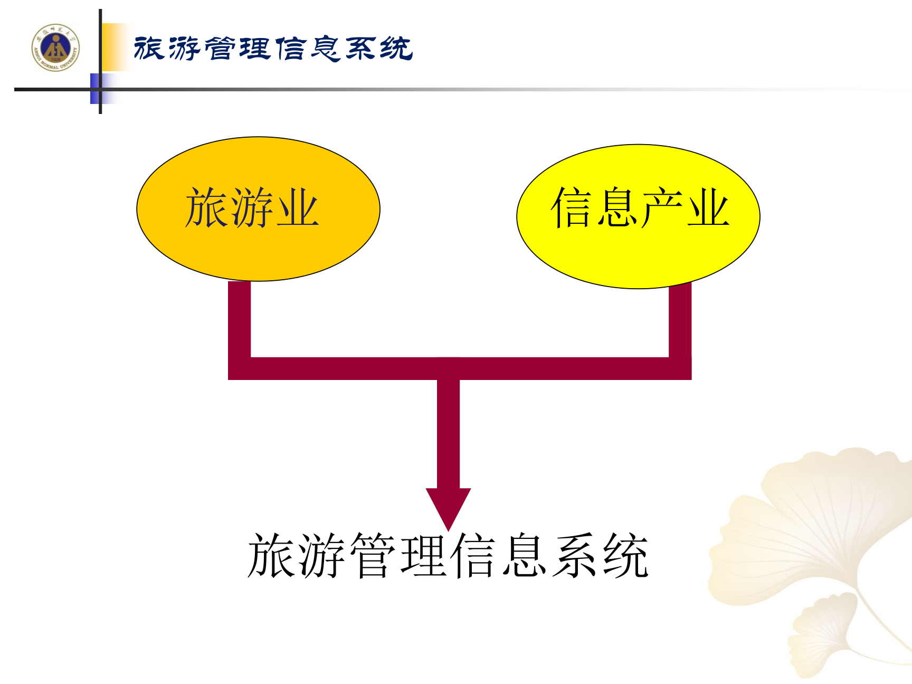
旅游业与信息产业的关系——旅游管理信息系统是二者结合的产物
1.1 管理和信息
一、管理知识基础
（一）管理的定义
【考点】管理是为了某种目标，应用一切思想、理论和方法去合理地计划、组织、指挥、协调和控制他人，调度各种资源（如人、财、物、设备、技术和信息等），以求以最小的投入去获得最好或最大的产出目标。管理是一种活动。
（二）管理与信息系统的关系
- 管理与信息系统平行，相互依存，互为条件；
- 管理是目的，信息系统则是服务于这一目的的手段，以辅助管理、辅助决策为目的。
（三）管理的性质（三个思考题）
- 管理是艺术还是科学？
- 管理是定性还是定量？
- 管理是文科、理科还是工科？
（四）管理科学的发展阶段
管理科学的发展大约经历了 6 个阶段：
阶段 | 时间 | 代表人物/著作 | 主要观点 |
科学管理学派 | 20世纪20年代 | 泰勒《科学管理原理》 | 通过提高效率来提高生产率 |
行为科学学派 | 20世纪30年代 | 梅奥《工业文明中人的问题》 | 主张激励人的积极性，主张工人参加管理 |
数学管理学派 | 20世纪40年代 | 康托拉维奇《生产组织与计划中的数学方法》 | 提出生产指挥的问题主要是数学问题 |
计算机管理学派 | 20世纪50年代 | — | 形成计算机用于管理的第一次热潮 |
系统工程学派 | 20世纪70年代 | 卡斯《组织与管理——从系统出发的研究》 | 提出用系统的理论与方法研究管理 |
信息学派和管理信息系统学派 | 20世纪80年代 | — | 出现管理信息系统学科，信息被视为用于管理的重要的无形资源，管理学逐渐成为一门完整的科学学科 |
（五）主要管理科学家的论点
1. 泰勒——科学管理之父
1911年发表《科学管理原理》，第一次把科学原则应用于管理领域，同时也把管理带进科学殿堂。泰勒毕生主要事情是提高生产效率。他认为科学管理的基本原理是：
- 凭科学办事代替凭粗浅经验办事；
- 集体行动协调，避免不相合拍；
- 做到彼此合作，而不是个人主义的泛滥；
- 追求产出最大，而不让它受到约束；
- 尽最大可能培养工人，使他们和公司都取得更大的成就。
2. 法约尔——现代经营管理理论的创始人
1916年发表《一般工业管理》，提出了 14 条一般管理原则：
- （1）劳动分工；（2）职权职责、权责相关；（3）纪律、尊重协议、服从、尽力、重视声誉；（4）命令统一、一个上级；（5）计划统一、指导统一；（6）个别服从整体利益；（7）报酬公平；（8）集中程度；（9）等级清晰；（10）程序、各有其位、各就其位；（11）公道公正；（12）使用期稳定；（13）首创精神；（14）团结精神。
3. 梅奥（迈约）——行为科学学派主要代表人物
- 霍桑实验。行为科学认为人是社会的人，企业应当为社会做贡献，应关心职工，应当认为职工有权在产出中获得生活资料，鼓吹工人参加管理。
- 利用数学和计算机来进行管理是 40—50 年代的热潮；60 年代是第一次管理信息系统的热潮；70 年代系统科学得到很大发展；80 年代对管理影响最大的思想是 BPR（Business Process Reengineering，业务流程再造），其完整概念由哈佛大学哈默提出。
4. BPR（业务流程再造）
BPR 以企业过程为对象，从顾客的需求出发，对企业过程进行根本性地再思考和彻底地再设计；以信息技术和人员组织为使能器，以求达到企业关键性能指标和业绩的巨大提高或改善，从而保证企业战略目标的实现。
关键点：
- 出发点：使顾客满意、企业战略发展；
- 途径：改变企业过程；
- 手段：以信息技术应用和人员组织的调整为方法；
- 特征：企业性能的巨大提高。
二、信息知识基础
（一）数据的概念
【考点】数据（data） 是对客观事物的性质、状态以及相互关系等进行记载的物理符号或是这些物理符号的组合。可分为数值数据和非数值数据：
- 数值数据：一般认为可以直接进行科学运算，它使得客观世界严谨有序；
- 非数值数据：包括除数值数据以外的其它数据，如图片、表单、声音、图像等，非数值数据使客观世界丰富多彩。
举例：描述 5 个人——5、五、伍、正、101、five、☆、条形码等；笔记本电脑的体积为 700×500×30mm，螺钉的直径为 20mm。
（二）信息的概念
- 日常交流中的消息、情报、知识、情况、事实、数据等。
- 信息是同外部世界进行交换内容的名称（控制论，维纳）。
- "信息是不确定量的减少"（信息论，香农）。
【考点】信息（Information） 是对原始数据进行加工处理后所得到的对客观世界产生影响的数据，它会对接受者的行为和决策产生影响，对决策者增加知识具有现实的或潜在的价值。
（三）数据和信息的关系
数据是原料，信息是经过处理过程得到的产品；数据经处理过程转化为信息，并进入数据存储。
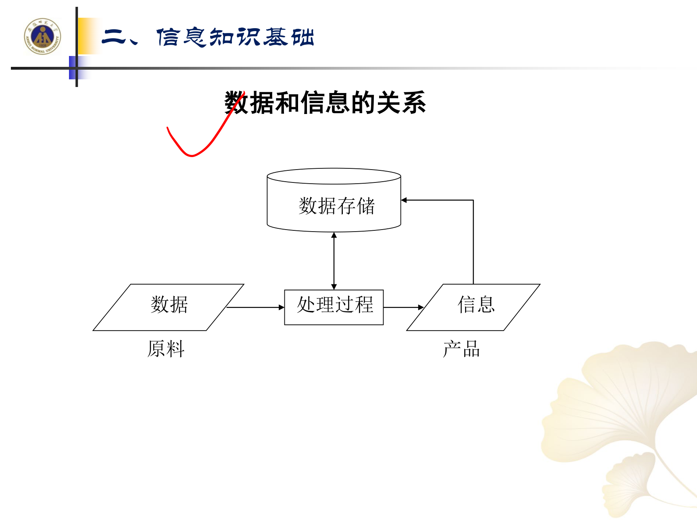
数据与信息的关系图（数据—处理过程—信息）
（四）一些概念辨析
- 消息与信息：信息是消息的内容，消息是信息的具体表现形式。
- 情报与信息：情报是机密性质的特殊信息。
- 知识与信息：知识是具有抽象和普遍品格的特殊信息；信息是知识的原材料，知识是信息加工的产物。
（五）信息的特征
【考点】信息具有 11 个特征：
- 事实性
- 层次性（决策层：战略性；管理层：战术性；操作层：日常性）
- 扩散性
- 共享性
- 增殖性
- 易改性
- 滞后性
- 不完全性
- 价值性
- 目的性
- 度量性
（六）信息量的度量
- 数据资料中包含信息量的多少，是由消除对事物认识的"不确定程度"来决定的。
- 按照信息论的观点，信息量的大小取决于信息内容消除人们认识的不确定性。消除的不确定程度大，则发出的信息量就大；消除的不确定程度小，则发出的信息量就小。如果事先就确切地知道消息内容，那么消息中所包含的信息量就等于零。
- 例：对于一位旅客而言，"南京有飞机飞往武汉"→"南京18日8:15有飞机飞往武汉"→"南京18日8:15有东航飞机飞往武汉天河机场"，信息量由小到大。
（七）旅游信息
【考点】旅游信息的概念：
- 是所有旅游活动、旅游资源和旅游经济现象等客观事物的反映；
- 是旅游企业在业务运营以及旅游管理部门在业务管理过程中采集到的或经过加工处理后对旅游管理决策产生影响的各种数据的总称。
【考点】旅游信息的特征：
- 广泛性：旅游信息包括旅游者、旅游资源、旅游业及其他相关的信息。如旅行社、观赏娱乐业、餐饮住宿业、交通通信业、购物经营业等。
- 动态性：旅游活动的各要素都处在不断的变化、发展；旅游活动的异地性特征，超越时间、空间、内容的三维限制。
- 规律性：旅游旺季，旅游信息量的增长比较大，旅游淡季却相反。应提前做好旅游信息的采集工作，适时地进行旅游信息的发布，引导旅游活动更趋理性。
- 旅游信息标准化（课件单列标题）。
三、旅游信息化
（一）信息化的概念
信息化是以信息资源开发利用为核心，以网络技术、通信技术等方式为依托，以此来推动经济持续发展和社会文明进步的过程。
（二）旅游信息化的概念（狭义与广义）
【考点】狭义的旅游信息化：把景点、景区、饭店、旅行社、交通、气候等与地理位置和空间分布有关的旅游信息，通过技术手段采集、编辑、处理转换成用文字、数字、图形、图像、声音、动画等来表示它们的内容或特征。
【考点】广义的旅游信息化：充分利用电子技术、信息技术、数据库技术和网络技术及现代传播媒介，对旅游有关的实体资源、信息资源、生产要素资源进行深层次的分配、组合、加工、传播、销售，以便促进传统旅游业向现代旅游业的转化，加快旅游业的发展速度，提高旅游业的生产效率。
（三）旅游信息化的类型
- 旅游信息化服务
- 旅游资源信息化
- 旅游信息化管理
（四）旅游信息化对企业的影响
- 对企业经营的影响：服务效率提升；满意度提升；形象提升。
- 对企业客户管理战略的影响：发展客户的途径；维系客户的方法；差异化营销的实现；细分客户的策略；客户需求的挖掘。
（五）旅游信息化对旅游业的影响
【考点】
- 旅游业是对信息具有高度依赖性的产业；
- 旅游信息化是保证旅游业可持续发展的重要力量；
- 旅游信息化拓展了旅游业的市场化、国际化功能；
- 旅游信息化是实现旅游经营管理现代化的重要途径。
1.2 旅游管理信息系统的特点和功能
一、旅游管理信息系统的概念
（一）系统的概念
系统（国际标准化组织定义）：能完成一组特定功能，由人、机器和各种方法构成的有机集合体。系统可分为：自然系统、人造系统、复合系统。
（二）信息系统的概念
信息系统是一个人造系统，由人、硬件、软件和数据资源组成，目的是及时、正确地收集、加工、存储、传递和提供信息，实现组织中各项活动的管理、决策和控制。信息系统包括：
- 作业信息系统：处理组织的业务、控制生产过程和支持办公事务；
- 管理信息系统：对一个组织进行全面管理的人和计算机相结合的系统。
（三）管理信息系统的历史
- W. T. Kennevan（1970）：提出 MIS 一词——以书面或口头形式，在合适的时间，向管理者、员工及外界人员，提供过去的、现在的、预测未来的有关企业内部及其环境的信息，以帮助他们进行决策。
- Gordon B. Davis（1985）：创建 MIS 学科——由计算机硬件和软件，手工作业，分析、计划、控制、决策模型，及数据库构成的用户—机器系统。能够提供信息，支持企业或组织的运行、管理、决策功能。
- Kenneth C. Laudon：为支持组织决策和管理，由人和信息技术共同进行信息收集、处理、储存、传递的一组相互关联的系统。除支持决策、协调和管理外，还能帮助管理者和员工分析问题、洞察复杂事务、创造新产品。
- 国内：1970s末—80s初，管理信息系统一词在国内出现。《中国企业管理百科全书》：由人、计算机等组成，能进行信息收集、传递、储存、加工、维护、使用的系统。能实测企业的各种运行情况；利用过去的数据预测未来；从企业全局出发辅助企业进行决策；利用信息控制企业的行为；帮助企业实现其规划目标。
（四）旅游管理信息系统的定义
【考点】旅游管理信息系统：以人为主导，利用基于网络的信息技术，进行信息输入、存储、传输、加工、输出、维护等处理，以提高管理效益和效率为目的，并能为旅游企业及产业进行运作、控制、决策的人机系统。
二、旅游管理信息系统的特点
【考点】
（一）一般特征（7个）
- 集合性
- 关联性
- 目的性
- 边界性
- 整体性
- 层次性
- 动态性
（二）特定特征（5个）
- 高度集中统一
- 有预测和控制能力
- 有特定的开发软件
- 有一个中心数据库
- 具备网络系统
三、旅游管理信息系统的功能
【考点】五大功能：
1. 数据处理功能
2. 预测功能
3. 计划功能
4. 控制功能
5. 辅助决策功能
1.3 旅游管理信息系统的结构和开发
一、旅游管理信息系统的概念结构
旅游管理信息系统从概念上由四大部件构成：
- 信息源：内部信息源、外部信息源；
- 信息处理器：负责信息的收集、变换、传输；
- 信息用户：管理者、决策者；
- 信息管理者：负责分析、开发、运行、维护。
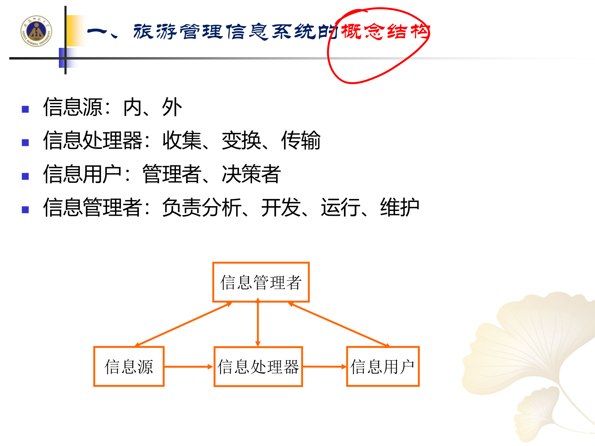
旅游管理信息系统的概念结构图（信息源—信息处理器—信息用户—信息管理者）
二、旅游管理信息系统的层次结构
- 旅游管理信息系统是为管理决策服务的。管理是分层次的，纵向可以分为基层管理、中层管理和高层管理三个管理层次。
- 与之对应的信息系统层次：
- 事务处理系统 TPS（对应事务处理/营运控制层，属狭义定义）；
- 管理信息系统 MIS（对应管理控制层）；
- 决策支持系统 DSS（对应战略计划层，属广义定义）。
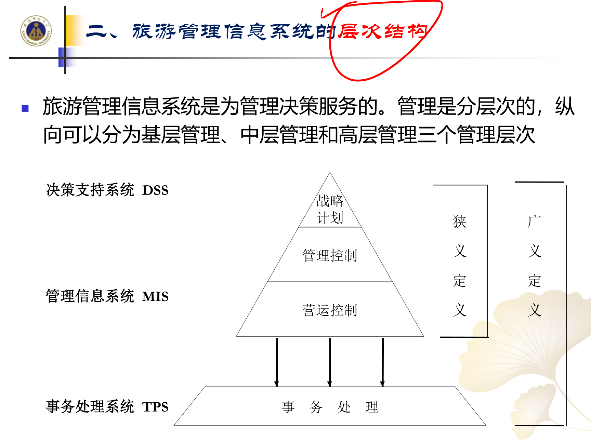
旅游管理信息系统的层次结构图（TPS—MIS—DSS）
三、旅游管理信息系统的功能结构
- 常规功能：信息录入与输出、查询与检索；
- 特定功能：按专业分工划分子系统。
一般管理信息系统按职能划分为：市场子系统、财会子系统、人事子系统、生产子系统、供运子系统、高层管理系统、信息处理系统。
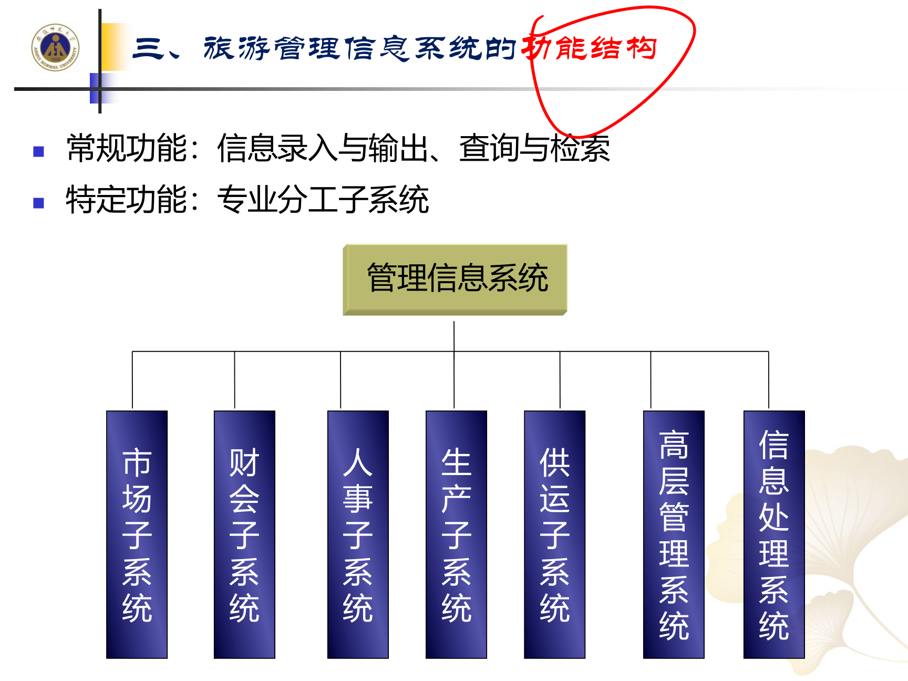
管理信息系统的功能结构图（按职能划分的子系统）
以旅游饭店前台管理信息系统为例，其子系统包括：客房预定与入住子系统、客房状态维护子系统、客帐信息管理子系统、客人结帐与档案子系统、餐厅信息管理子系统、商务信息管理子系统、其他信息管理子系统。
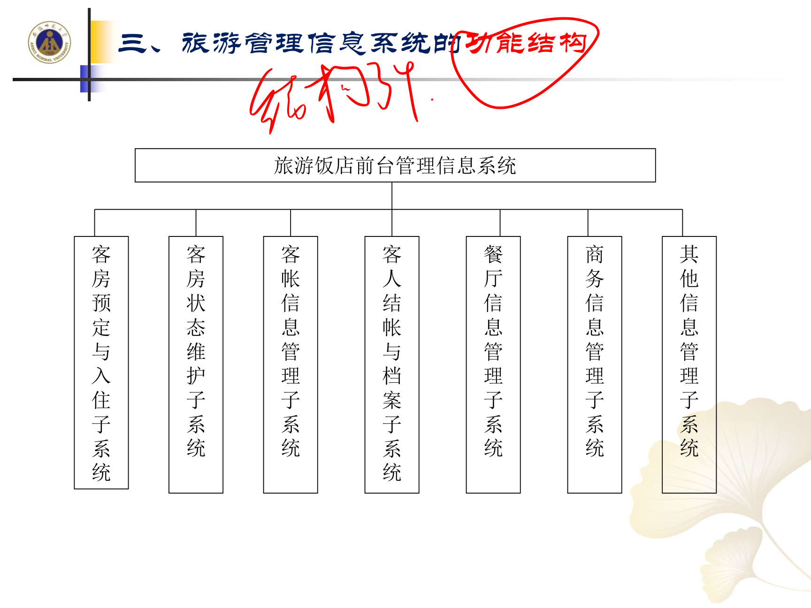
旅游饭店前台管理信息系统功能结构图
四、旅游管理信息系统的软件结构
- 软件结构矩阵中：每一行代表一个管理层次，每一列代表一种管理功能。
- 数据库分为：公用数据库和子系统专用数据库。
五、旅游管理信息系统的物理结构
【考点】物理结构一般有三种类型：
类型 | 组成 | 优点 | 缺点 |
单机批处理结构 | 一台主机、显示器、键盘、打印机等组成 | — | 数据的共享和实时处理性较差 |
集中式处理结构 | 主机＋若干终端 | 数据处理能力强，数据安全，可靠性高 | 终端本身没有处理能力，系统处理速度随终端数量增多而明显减少，终端用户界面不美观 |
分布式处理结构 | 网络服务器＋各个工作站 | 价格低，安全可靠性高，资源利用率高，系统的开发、扩充、维护方便 | — |
六、旅游管理信息系统开发
（一）基本要求
- 满足用户需要；
- 系统功能完整：数据处理、控制、预测、决策、公共信息服务功能；
- 技术先进；
- 实现辅助决策。
（二）应考虑的因素
【考点】
- 与市场运行特征相符合；
- 基础数据齐备；
- 市场需求旺盛；
- 因地制宜；
- 有足够的财力保证。
第二章 旅游管理信息系统的技术基础
> 本章结构：第1节 计算机系统；第2节 通信网络；第3节 数据库技术；第4节 "3S"技术。
> 本章以了解性内容居多，但数据库基本概念、逻辑模型、3S技术是重点，期末大题考"3S技术在旅游业的应用"。
2.1 计算机系统
一、计算机系统组成
计算机系统由硬件和软件两大部分组成：
- 硬件
- 主机：
- CPU（运算器、控制器）
- 内存储器（RAM、ROM）
- 外部设备：
- 外存储器：磁盘、光盘、磁带等
- 输入设备：键盘、鼠标、扫描仪等
- 输出设备：显示器、打印机、绘图仪等
- 软件
- 系统软件：
- 操作系统：UNIX、DOS、WINDOWS 等
- 语言处理系统：C++、Python 等
- 数据库管理系统
- 应用软件
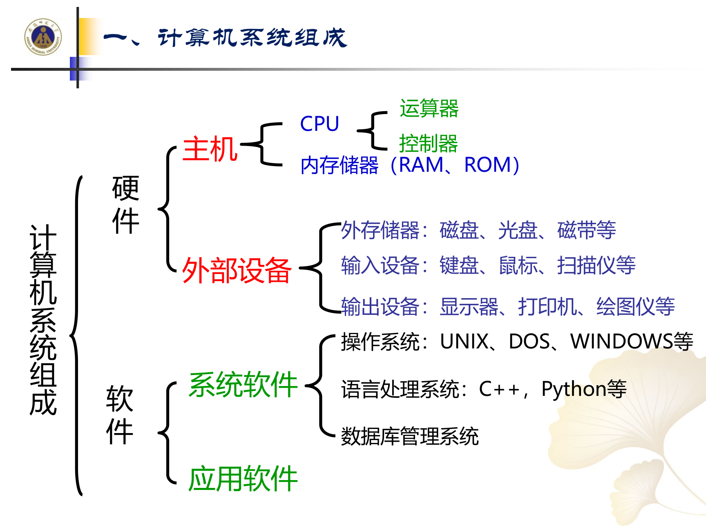
计算机系统组成图
二、旅游管理信息系统开发的软件基础
1. 操作系统
直接运行在裸机上的最基本的系统软件，任何其他软件都必须在操作系统的支持下才能运行。如 MS—DOS、WINDOWS 系列、UNIX 系列等。
2. 数据库管理系统（DBMS）
- 数据库技术是 20 世纪 60—70 年代计算机在数据管理方面发展的新成果。数据库是以一定组织方式存贮起来的具有相关性的数据集合。数据库中数据没有不必要重复，且独立于应用程序之外，为多种应用服务。
- DBMS 是在具体计算机上实现数据库技术的系统软件，由它来实现用户对数据库的建立、管理、维护、使用等功能。
3. 语言处理系统
计算机语言是人与计算机交流信息的工具。
- 第一代语言：机器语言（0-1 构成指令码）；
- 第二代语言：汇编语言（用助记符号代替机器语言代码形成了汇编语言）；
- 第三代语言：面向过程的高级语言：1954 年出现了 Fortran 语言。它不是面向机器，而是面向解题过程的程序设计语言。程序员不管计算机内部结构和指令，主要精力放在算法描述上，因而又叫算法语言。如 Basic、Pascal、Java 等。
2.2 通信与网络
一、数据通信
1. 概念
- 数据通信系统是计算机网络的重要组成部分，其主要任务是将地理位置不同的计算机或终端设备连接起来，高效率地完成数据传输、信息交换和通信处理的任务。
- 数据通信的基本概念：通过适当的传输线路将数据信息从一台机器传送到另一台机器，这里所指的机器可以是计算机、终端设备或其他任何通信设备。
- 数据处理由计算机系统来完成；数据传输由通信系统来实现。
2. 模拟数据通信
模拟数据是由传感器采集得到的连续变化的值，例如声音、温度、压力等。模拟数据通信是指在传输介质上用模拟信号进行传输。传统的通信技术传送的大多都是模拟信号。模拟数据是时间的函数，并占有一定的频率范围，可以直接采用相同频率范围的模拟信号在传输介质上进行传送。
3. 数字数据通信
数字数据是离散的数值，如整数、字符都是数字数据，计算机中二进制数据表达方式的 0 和 1 也是数字数据。数字数据的物理表达是用一系列电脉冲来表示的数字信号，例如用恒定正电压脉冲表示 1，用恒定负电压脉冲或零电平表示 0。计算机处理的是数字信号，不能直接用传统的模拟通信方式进行传输。要想通过模拟数据通信方式传送数字信号，就要用调制解调器（Modem）作为数据信号转换器。
4. 通信传输介质
- 双绞线
- 同轴电缆
- 光导纤维
- 微波
- 卫星通信
二、计算机网络
1. 概念
将不同地理位置并具有独立功能的多个计算机系统，通过通信设备和通信线路连接起来，以功能完善的网络软件实现网络资源共享的系统。
组成：
- 外层资源子网：负责整网数据处理——主计算机系统＋终端设备；
- 内层通信子网：负责整网通信处理——通信设备＋通信线路。
2. 网络体系结构与协议
在计算机网络中，通信功能是分层实现的，因而进行通信的两个系统就必须具有相同的层次结构。通信的两个系统上的相同层称为同级层，通信在同级层之间进行。双方实现第 N 层功能所遵守的共同规则称为第 N 层协议。计算机网络中的所有层次和对应的协议组合在一起，就称为计算机网络的体系结构。
70 年代末，世界标准化组织和国际电报电话咨询委员会认识到网络体系结构标准化的重要意义，提出了开放式互联参考模型（Open Systems Interconnection Reference Model），简称 OSI 参考模型。
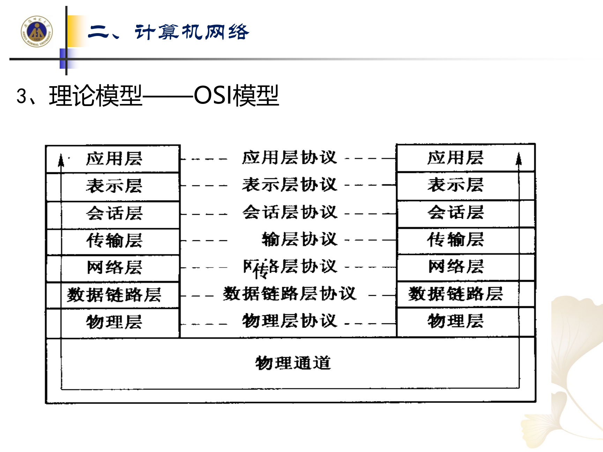
OSI 参考模型（七层结构）图
3. 层次和协议的概念
- 层次：每一层建立在下层之上，向上层提供服务。特点：独立性、灵活性、简单化、标准化。
- 协议：计算机间在通信过程中必须遵循的规则的集合。特点：层次性、有效性、兼容性。组成要素：语法、语义、时序。
4. 产业标准——TCP/IP 协议（传输控制协议/网际协议）
TCP/IP 是当今最流行、应用最广泛的事实上的工业标准，Internet 就是采用该协议进行全球范围内的网络通信。参考七层 ISO 模型，简化成四个层次。
5. 网络的拓扑结构
把计算机网络中的具体硬件设备（如服务器、工作站等）抽象为点，把电缆线等通信线路抽象为线，由此计算机网络的具体结构被抽象化。这种采用拓扑学方法抽象出的网络结构称为计算机网络的拓扑结构。拓扑是几何学的一个分支，是一种研究与大小、形式无关的线和面的特性的方法。
类型 | 别称 | 结构特点 |
点—点式信道网络 | 存储转发通信子网 | 网络中每一条信道都连接到一对结点上 |
共享信道网络 | 广播式拓扑结构 | 所有节点共享一条通信通道，每个节点发送的信息可由所有节点检测，但只有目的地址指定的节点能够接收 |
三、新兴网络技术
1. 移动互联网
- 新一代移动通信：将无线通信与互联网相结合，为终端用户提供高速高质、便捷泛在、个性化、多媒体数据传输的新型宽带移动通信系统。
- 下一代互联网：地址资源丰富，设施先进安全、可控泛在智能的，实现人与人、物与人、物与物互联的互联网。
【考点】移动互联网：互联网的技术、平台、商业模式和应用与移动通信技术结合并实践的活动的总称。对于以游客位置移动为主要特征的旅游业具有重要意义。
应用方向举例：
- 移动信息服务：网站、手机报、APP、社交媒体、微视频、社区等，为游客提供旅游信息查询、交流互动等服务；
- 移动位置服务：基于位置的服务（LBS），为游客提供查询位置、路线、交通、酒店、餐饮、景区等服务；
- 虚拟导游服务：景区、场馆、交通等场所文字、图像、语音、视频等多媒体解说服务；
- 移动电子商务：利用移动终端，进行交通、酒店、景区等预订、支付等线上交易。
2. 物联网
【考点】物联网：基于互联网的"物物互联、感知世界"。利用射频识别、红外感应、全球定位、激光扫描等信息传感设备和技术，把任何物品与互联网连接，进行信息感知和通信，通过智能化识别、定位、监控，对物质世界实现实时交互、精确管理、科学决策的网络。
应用方向举例：
- 从景区停车场、门禁系统到观景点、旅游餐饮、旅游购物场所的人员和物料的全过程检测和管理；
- 通过数量和特征识别，用于应急状态下对景区游客聚集区域的人流、车流进行疏散；
- 近距离无线通信（NFC）应用，将手机等设备进行方便快捷的无线连接，实现旅游信息数据交换和服务。
四、互联网与旅游管理创新
1. 互联网+
【考点】互联网+：把互联网的创新成果与经济社会各领域深度融合，推动技术进步、效率提升和组织变革，提升实体经济创新力和生产力，形成更广泛的以互联网为基础设施和创新要素的经济社会发展新形态。
在旅游业中的推进方向：
- 推进旅游接待场所互联网基础设施建设；
- 推动旅游相关信息互动终端建设；
- 推动旅游物联网设施建设；
- 支持在线旅游创业创新；
- 大力发展在线旅游新业态；
- 推动互联网的旅游投融资创新；
- 开展智慧景区、酒店建设；
- 推动智慧旅游乡村建设；
- 完善智慧旅游公共服务体系；
- 创新旅游网络营销模式。
2. 互联网与价值创造：互联网短视频为例
- 背景：互联网短视频伴随移动互联网、人工智能、大数据等新一代数字技术而迅速发展，逐渐取代传统图文，成为数字经济时代满足用户碎片化娱乐场景需求的新载体。
- 互联网短视频：企业或个人用户基于新媒体平台发布时长较短，主题涵盖时尚潮流、日常生活、娱乐消遣、社会热点、技能分享、商品推广等视频内容的新商业形态。
- 平台型商业模式：以短视频为载体，用互联网连接内容创作者和内容消费者，引发一系列交互行为。
- 内容创作方式：用户生成内容（UGC）、专业生成内容（PGC）、专业用户生成内容（PUGC）。
2.3 数据库技术
一、数据库的四个基本概念
1. 数据（Data）
描述事物的符号记录，是数据库中存储的基本对象。数据是信息的表现形式和载体，可以是符号、文字、数字、语音、图像、视频等。数据和信息是不可分离的，数据是信息的表达，信息是数据的内涵。
2. 数据库（DB）
【考点】长期存储在计算机内，有组织、可共享的大量数据的集合。如：学校教务系统数据库。
- 数据库通常分为：层次数据库、网络式数据库、关系式数据库；
- 数据库基本特点：有组织、可共享、冗余小、独立性高。
3. 数据库管理系统（DBMS）
【考点】一种操纵和管理数据库的大型软件，用于建立、使用和维护数据库，对数据库进行统一的管理和控制，以保证数据库的安全性和完整性。如：MySQL、Oracle。
DBMS 的功能：
1. 定义数据库
2. 管理数据库
3. 维护数据库
4. 数据通信
4. 数据库系统（DBS）
【考点】由数据库、数据库管理系统（及其应用开发工具）、应用程序和数据库管理员组成的存储、管理、处理和维护数据的系统。数据库系统一般由数据库（DB）、数据库管理系统（DBMS）、应用系统、数据库管理员和用户构成。DBMS 是数据库系统的基础和核心。
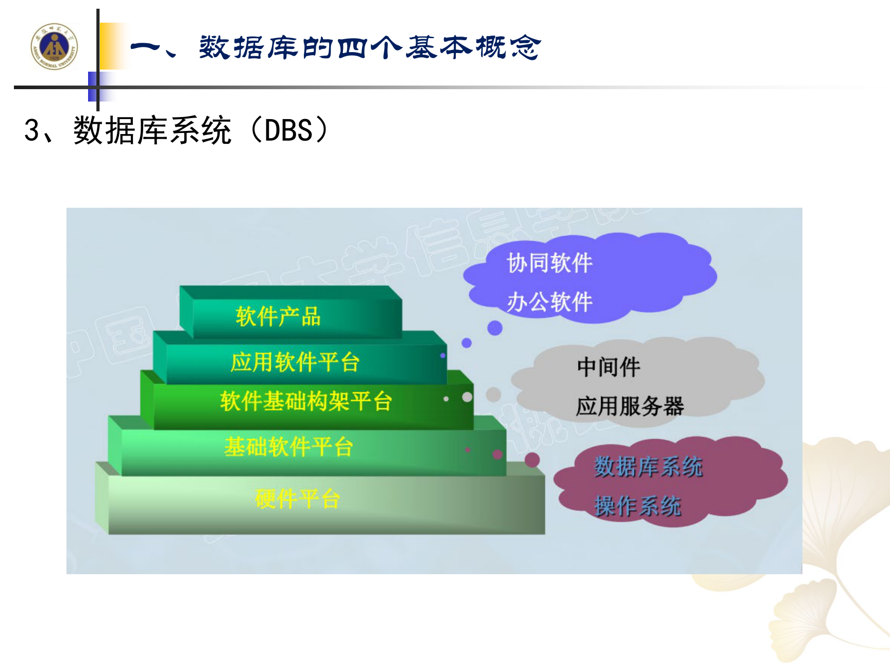
数据库系统（DBS）组成图
二、数据管理技术的发展
数据管理是指对数据进行分类、组织、编码、存储、检索和维护，是数据处理的中心问题。
数据管理技术的发展过程经历了三个阶段：
1. 人工管理阶段
2. 文件系统阶段
3. 数据库系统阶段
三、数据模型
1. 数据模型的概念
【考点】数据模型是对现实世界数据特征的抽象，是现实世界的模拟。
- 数据模型所描述的内容包括三个部分：数据结构、数据操作、数据约束；
- 数据模型应该满足：①能比较真实地模拟现实世界；②容易为人所理解；③便于在计算机上实现；
- 数据模型是数据库系统的核心和基础；
- 数据模型按不同的应用层次分成三种类型：概念数据模型、逻辑数据模型、物理数据模型。
2. 数据建模过程——两步抽象
- 现实世界中的客观对象抽象为概念模型——将现实世界抽象为信息世界；
- 把概念模型转换为某一数据库管理系统支持的数据模型——将信息世界抽象为机器世界。
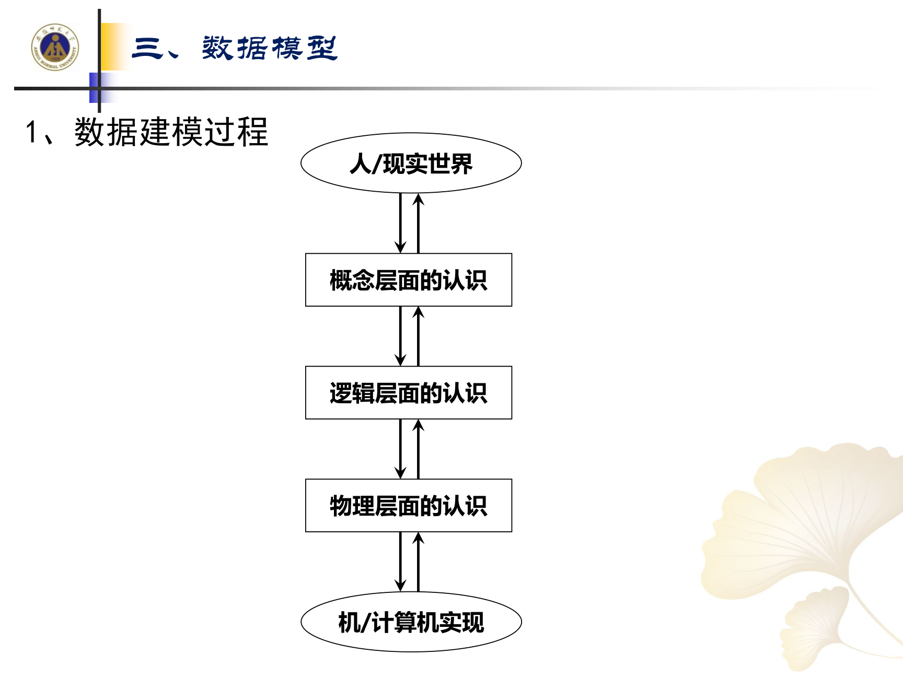
数据建模过程图（现实世界—信息世界—机器世界）
3. 概念模型
【考点】概念模型是对现实世界的第一层抽象，面向用户，独立于计算机系统和数据库管理系统。
- 联系：现实世界中的事物之间通常都是有联系的，这些联系在信息世界中反映为实体内部（属性）的联系和实体之间的联系；
- 实体内部的联系通常是指组成实体的各属性之间的联系；实体之间的联系通常是指不同实体集之间的联系；
- 表示方法：实体—关系模型（E-R 图）（重要，注意 E-R 图的绘制）。
4. 数据模型的三要素
- 数据结构：描述数据库的组成对象以及对象之间的联系；描述的内容与对象的类型、内容、性质有关，与数据之间联系有关；
- 数据操纵：对数据库中各种对象（型）的实例（值）允许执行的操作的集合，包括操作及有关的操作规则，例如查询、更新等；
- 完整性约束：一组完整性规则，即给定的数据模型中数据及其联系所具有的制约和依存规则。
5. 逻辑模型（三种）
【考点】
逻辑模型 | 定义 | 特点/条件 |
层次模型 | 用树形结构表示实体以及实体之间的联系，树中每一个节点代表一个记录类型，树状结构表示实体型之间的联系 | 满足两个条件的基本层次联系的集合为层次模型：①有且只有一个结点没有双亲结点，这个结点称为根结点；②根以外的其它结点有且只有一个双亲结点 |
网状模型 | 用网络结构表示实体类型及其实体之间联系的模型 | ①允许一个以上的节点无双亲；②一个节点可以有多于一个的双亲 |
关系模型 | 用二维表（中间表）的形式表示实体和实体间联系的数据模型 | 关系的性质：①关系中的每一个属性值都是不可分解的，不允许表中还有表；②关系中不允许出现相同的元组；③关系中不考虑元组之间的顺序；④元组中属性也是无序的 |
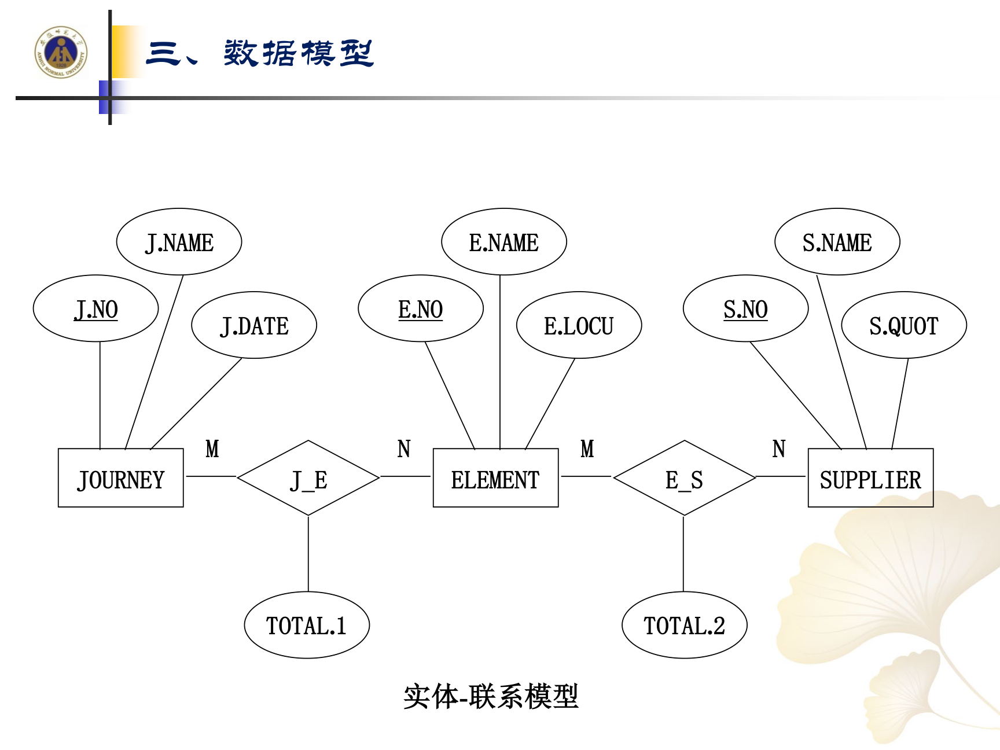
实体—联系模型（E-R 图）示例：旅程—景点—供应商
四、数据库系统模式
1. 模式的概念
- 模式：是数据库中全体数据的逻辑结构和特征的描述。它仅仅涉及到结构的描述，不涉及到数据库本身具体的值。
- 模式的一个具体值称为模式的一个实例（Instance），同一个模式可以有很多实例。模式是相对稳定的，而实例是相对变动的，因为数据库中的数据在不断更新。模式反映的是数据的结构及其联系，而实例反映的是数据库某一时刻的状态。
- 例：在学生选课数据库模式中，包含学生记录、课程记录和学生选课记录。"2019 年学生选课"数据库实例与"2020 年学生选课"数据库实例不同。
2. 数据库系统的三级模式结构
【考点】
- 外模式（子模式，用户模式）：是用户观念下局部数据结构的逻辑描述，是数据库用户（包括应用程序员和最终用户）能够看见和使用的局部数据的逻辑结构和特征的描述。一个数据库可以有多个外模式；
- 模式（概念模式/逻辑模式）：数据库中全体数据的逻辑结构和特征的描述；
- 内模式：是对数据库中数据物理结构和存储方式的描述，是数据在数据库内部的表示形式。一个数据库只有一个内模式。
举例理解：公司有一张数据库表"员工（姓名，这个月给公司赚了多少钱，年龄，性别，这个月发工资了吗）"，这个表的完整关系模式就是模式（逻辑层视角）。把这个关系模式的部分属性单独拎出来构成新的"子表"，就是外模式（子模式、视图层视角）。例如老板不关心员工这个月发没发工资，所以为老板设计的员工查询应用程序只需要"员工赚钱表（姓名，这个月给公司赚了多少钱）"这一张子表——这就是针对老板应用程序的外模式。不同的应用程序对数据库数据的需求不同，故在数据库原有的模式下就会生成对应需求的外模式视图。
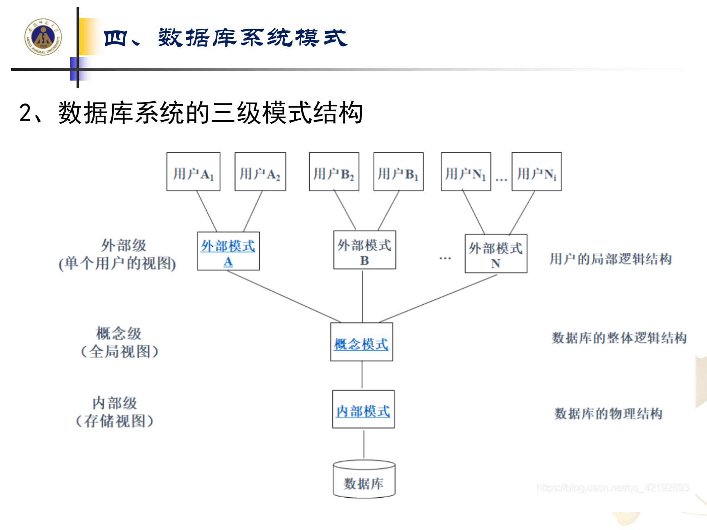
数据库系统的三级模式结构图
五、数据仓库与大数据
1. 数据仓库（Data Warehouse）
- 来源：源于事务型数据库，进行数据集成/全局应用，数据分析/复杂应用；
- 概念：面向主题、集成的、非易失的、随时间变化的数据集合，基于全面完善的信息应用，用于支持管理决策；
- 结构：数据源、监视器、集成器、存储器、分析器、客户应用。
2. 数据挖掘（Data Mining）
数据库中的知识发现（Knowledge Discovery in DB，KDD）：
- 从大量已知数据中发现未知隐藏、潜在有用知识的高级处理过程，如行为模式、数据关联、变化趋势、异常情况等；
- 分为描述和预测，具体方式有：分类（classification）、聚类（clustering）、关联规则发现（association rule discovery）、时序模式发现（sequential pattern discovery）；
- 技术动力：超大规模数据库的出现、对大量数据的快速访问、先进强大的计算机技术、精深的统计方法和计算能力。
3. 大数据（Big Data）
- "大"在何处：指那些大小已经超出了传统意义上的尺度，在合理时间内一般的软件工具难以捕捉、存储、管理和分析的数据；
- 特点（4V）：规模性（Volume）、高速性（Velocity）、多样性（Variety）、价值性（Value）；
- 定义：以容量大、类型多、存取速度快、应用价值高为主要特征的数据集合，正快速发展为对数量巨大、来源分散、格式多样的数据进行采集、存储和关联分析，从中发现新知识、创造新价值、提升新能力的新一代信息技术和服务业态。
4. 商业智能（Business Intelligence）
通过对数据的收集、管理、分析、转化，使数据成为可用的信息并在企业中共享传递，从而帮助企业获得必要的洞察力和理解力，更好地辅助决策和指导行动。
2.4 "3S"技术
【考点】3S 是三种技术集成的一种统称（期末大题必考"3S 技术在旅游业的应用"）：
- 地理信息系统 GIS（Geographic Information System）
- 全球定位系统 GPS（Global Positioning System）
- 遥感技术 RS（Remote Sensing）
一、3S 技术之 GPS
1. 什么是全球定位系统 GPS
- 全称：导航星测时与测距全球定位系统（Navigation Satellite Timing And Ranging Global Position System，NAVSTAR GPS）；
- 由 6 个轨道平面、24 颗卫星组成；
- 在任何时间向地球上任何地方的用户提供高精度的位置、速度、时间信息；
- 一种革命性的定位技术：从陆地和近海→整个海洋和外层空间；从静态→动态。
2. GPS 的发展
- 古代：靠天上的太阳、月亮和星星来判断位置；指南针。
- 近代和现代的地面定位方法：采用尺、光学仪器（例如经纬仪、水准仪等）、电磁波或激光测距仪，或综合多种技术的仪器（例如全站仪）。存在问题：布设站点，效率低；受气候、环境条件限制；需要通视。
- 1960 年代：美国海军着手卫星定位方面的研究工作，研制了海军导航卫星系统 NNSS（子午卫星），利用多普勒效应进行导航定位。缺点：卫星少，观测时间和间隔时间长，无法提供实时导航定位服务；只有经纬度，没有高程；卫星信号频率低（400MHz、150MHz），不利于补偿电离层折射效应的影响，卫星轨道低，难以进行精密定轨，导航定位精度低。
- 1970—90 年代：
- 1973 年 12 月，美国国防部批准研制 GPS；
- 1978 年 2 月 22 日，第 1 颗 GPS 试验卫星发射成功，到 1979 年共发射了 4 颗试验卫星；
- 1979 年到 1987 年，又陆续发射了 7 颗试验卫星，研制了各种用途接收机；
- 1989 年 2 月 14 日，第 1 颗 GPS 工作卫星发射成功；
- 1991 年，在海湾战争中，GPS 首次大规模用于实战；
- 1993 年底，实用的 GPS 网（21+3 颗卫星）GPS 星座已经建成；
- 1995 年 7 月 17 日，GPS 达到 FOC（Full Operational Capability）完全运行能力；
- GPS 系统在进一步发展（称为现代化）：保护美方和友好方的使用，发展军码和强化军码的保密性能，加强抗干扰能力；阻扰敌对方的使用，施加干扰，例如 SA（Selective Availability——选择可用性，人为降低普通用户的测量精度）、AS（Anti-Spoofing，加密技术）等。
- 其他国家的系统：
- 俄罗斯（前苏联）的全球导航卫星系统 GLONASS（Global Navigation Satellite System）：1968 年开始筹建，1995 年完全建成；
- 欧盟的民用卫星导航定位系统伽俐略（Galileo）：1999 年开始筹建，全部 30 颗卫星（调整为 24 颗工作卫星、6 颗备份卫星）计划于 2020 年发射完毕。
- 中国——北斗系统（BDS）：
- 空间段：北斗系统空间段包括 30 颗卫星，由地球静止轨道卫星（GEO，3 颗）、倾斜地球同步轨道卫星（IGSO，3 颗）和中圆地球轨道卫星（MEO，24 颗，轨道倾角 55°）三种轨道卫星组成混合导航星座；
- 地面段：包括主控站、时间同步/注入站和监测站等若干地面站；
- 用户段：包括北斗兼容其他卫星导航系统的芯片、模块、天线等基础产品，以及终端产品、应用系统与应用服务等；
- 服务能力：服务区域覆盖全球；空间信号精度优于 0.5 米；全球定位精度水平方向为 10 米、高程误差 10 米；测速精度为 0.2 米每秒；授时精度 20 纳秒；服务可用性优于 95%。在亚太地区，定位精度水平 5 米、高程 5 米，测速精度优于 0.1 米每秒，授时精度优于 10 纳秒。
- 民用全球导航卫星系统（GNSS）计划：新一代的 GNSS 将提供大约 100 多颗人造卫星用于定位和导航，其中以美国的 GPS、俄罗斯的 GLONASS、欧洲的 Galileo、中国的北斗导航定位系统 BDS 四大系统为主。
3. GPS 定位原理
- 卫星定位涉及两个关键数据：卫星的位置和接收站与卫星的距离。已知卫星坐标 S（Xs, Ys, Zs）和站星距离，即可求站点的坐标：ρ = √[(X−Xs)²+(Y−Ys)²+(Z−Zs)²]。
- 伪距的概念：站星观察距离 ρ' = c·∆t（c 为信号传播速度即光速，∆t 为信号传播时间）。但由于传播时间 ∆t 中包含有卫星时钟与接收机时钟不同步的误差、测距码在大气中传播的延迟误差等，因此求得的距离值并非真正的站星几何距离，习惯上称之为"伪距"，用 ρ' 表示。与之相对应的定位方法称为伪距法定位。
- 考虑大气中电离层折射改正数 δρI、对流层折射改正数 δρT，设站星几何距离为 ρ，则：ρ' = ρ − δρI − δρT。
- 再考虑钟差：设卫星钟差改正数为 Va，接收机的钟差改正数为 Vb，则 ρ' = ρ − δρI − δρT + c(Va − Vb)。Va 可由导航电文中给出的有关时间信息求得；用户接收机中仅配备一般的石英钟，Vb 不可能预先精确求得。最终的伪距测量模型中有 4 个未知数，需要 4 个观测方程。
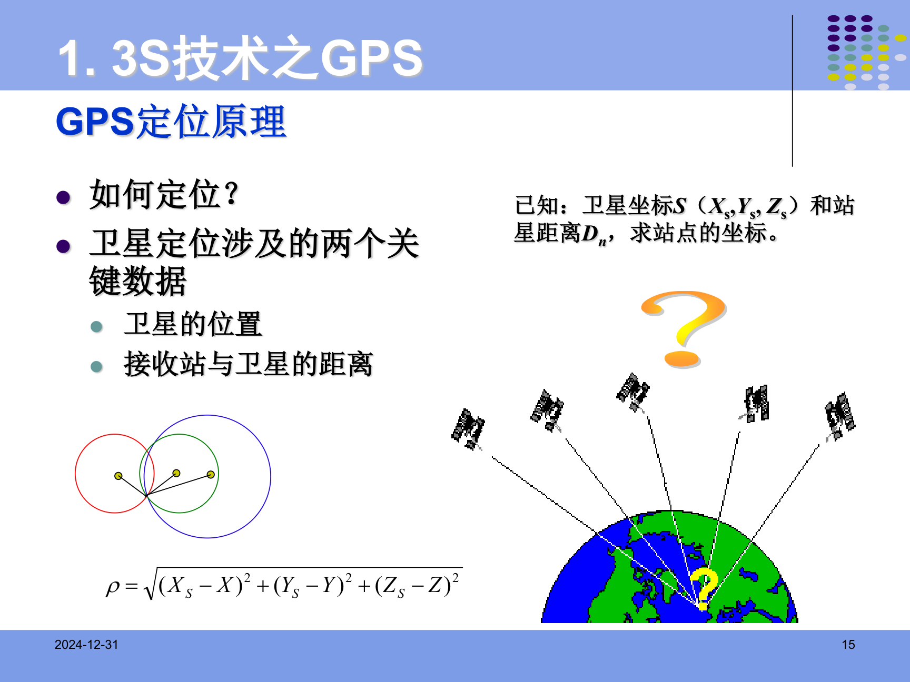
GPS 卫星定位原理图（卫星位置与站星距离交会定位）
二、3S 技术之 RS
1. 什么是遥感
【考点】遥感（Remote Sensing，RS）：一种远距离的、非接触的地面目标探测技术与方法。
- Remote Sensing 的提出：美国学者布鲁伊特于 1960 年提出，1961 年正式通过。
2. 遥感发展的三个阶段
- 萌芽阶段：1839 年达格雷发表第一张空中相片；1858 年法国人用气球携带照相机拍摄了巴黎的空中照片；1882 年英国人用风筝拍摄地面照片。（世界上第一张摄影照片由 J. N. Niepce 于 1826 年在法国拍摄）
- 航空遥感阶段：1903 年莱特兄弟发明飞机，创造了条件；1909 年意大利人首次利用飞机拍摄地面照片；一战中航空照相技术用于获取军事情报；一战后航空摄影用于地形测绘和森林调查与地质调查；1930 年美国开始全国航空摄影测量；1937 年出现了彩色航空像片。
- 航天遥感阶段（卫星遥感）：
- 1959 年前苏联宇宙飞船"月球 3 号"拍摄了第一批月球像片；
- 1960 年开始：美国的 TIROS-1（Television Infrared Observation Satellite）和 NOAA-1（National Oceanic and Atmospheric Administration）太阳同步气象卫星，开始利用航天器对地球进行长期观测；
- 1972 年：美国的地球资源技术卫星 ERTS-1（探测地球资源和环境），即 Landsat-1，装有多光谱扫描器 MSS 传感器，分辨率 79 米；
- 1982 年 Landsat-4 发射，装有专题成像仪 TM 传感器，分辨率提高到 30 米；
- 1986 年法国发射 SPOT-1，装有全色 PAN 和多光谱 XS 遥感器，分辨率提高到 10 米；
- 1988 年 9 月 7 日中国发射第一颗"风云 1 号"气象卫星；
- 1999 年美国发射 IKONOS，空间分辨率提高到 1 米；
- 1999 年 10 月 14 日中国成功发射资源卫星 1 号。
3. 遥感原理
- 地球上的每一个物体都在不停地吸收、发射和反射信息和能量（电磁波）；
- 不同物体的电磁波特性是不同的；
- 遥感就是探测地表物体发射的电磁波和对电磁波的反射特性；
- 提取这些物体的特性，实现远距离标识物体。
4. 遥感特点
- 宏观性：覆盖范围大、信息丰富；
- 多波段性：波段的延长使对地球的观测更加丰富；
- 多时相性：重复探测，有利于进行动态分析（如对同一区域不同年份的影像进行对比）。
5. 分辨率
- 空间分辨率：一个象元点所表示的面积。分辨率为 1m 时，图像上的一个象元相当于地面 1m×1m 的面积；
- 光谱分辨率：指成像的波段范围，分得愈细，波段愈多，光谱分辨率就愈高。可达 5—6 纳米（nm）量级，400 多个波段；
- 时间分辨率：重访周期的长短。一般对地观测卫星为 15 到 25 天的重访周期。
6. 遥感系统
遥感系统是一个从地面到空中直至空间，从信息收集、存储、传输处理到分析判读、应用的完整技术系统。例如卫星遥感系统：
- 空基系统：包括遥感平台和传感器、数据传输系统等；
- 传感器（Remote Sensor）：接收从目标反射和辐射来的电磁波信息的设备；
- 遥感平台（Platform）：搭载各种传感器的载体，如航拍飞机、人造卫星等；
- 地基系统：完成遥感图象数据的接收、处理存档、分发和应用开发工作。
三、3S 技术之 GIS
1. 地理与地理信息
- 地理：泛指地球表面各种自然现象和人文现象，以及它们之间的相互关系和区域分异。
- 地理信息：指人对地理现象的感知，其内容包括地理系统诸要素的分布特征、数量、质量、相互联系和变化规律等。
- 地理信息的特征：空间定位特征、多维结构特征、动态特征。
2. 地图
- 地图是地理信息的载体；
- 地图表现的内容：各种地理环境要素的数量、质量特征及其时空关系。
- 分类：
- 普通地图：通用目的，显示多种空间要素，包括边界线、水文、交通、等高线、居民点和土地覆盖等；
- 专题地图：特殊用途的地图，主要目的是显示某一主题的分布模式，比如某省以县为统计单位的人口密度分布。
3. 什么是地理信息系统
【考点】
- "地理信息系统事实上就是地图的一个延续，就是用地理信息系统扩展地图工作的内容。"——著名地理学家陈述彭先生
- 地理信息系统（GIS）是具有采集、存储、查询、分析、显示和输出地理数据的功能，为地理研究和地理决策服务的计算机技术系统。
- 地理信息系统是一种以地理坐标为骨干的信息系统——空间信息系统。
4. GIS 的发展
- 1960 年代：1963 年，加拿大测量学家 Roger Tomlinson 首先提出了 GIS（地理信息系统）这一术语；建立了第一个通用的地理信息系统——Canada Geographic Information System（加拿大地理信息系统）。特点：制图能力较强，分析功能比较简单；许多有关的组织和机构纷纷建立。
- 1970 年代：开展学术研究和商业开发；系统的数据分析能力仍然很弱，在地理信息系统技术方面未有新的突破。
- 1980 年代：数据处理开始和数学模型、模拟等决策工具结合；地理信息系统的应用领域迅速扩大；地理数据库模型的研究与完善。
- 1990 年代：美国提出"数字地球"战略；商业系统和软件成熟，GIS 广泛应用。
- 2000 年代：网络化 GIS，与 RS/GPS 的集成和融合。
5. GIS 的功能（六大功能）
- 数据采集：来源包括纸质地图（Paper maps）、数字数据（Digital data）、GPS 数据、坐标等；
- 数据存储：两种格式——矢量格式（实体的表示是不连续的）和栅格格式（使用方格来模拟实体）；
- 查询：查找一个指定的要素；基于条件查找要素（如"人口数大于 300,000"）；
- 分析：相邻分析、叠加分析、网络分析；
- 显示：地图、图表、文本；
- 输出：纸图、图像、文档、Internet。
6. GIS 的系统组成
【考点】五大组成：
- 系统硬件
- 系统软件
- 空间数据
- 应用人员
- 应用模型
四、3S 技术的集成与融合
1. 什么是 3S 集成
将 GIS、RS、GPS 三种技术及其他相关技术有机地集成在一起的技术，构成从数据获取、数据定位、空间数据分析各方面都增强的技术系统。
【考点】GIS、RS 和 GPS 在 3S 集成中的作用：
- RS：作为数据源为系统提供遥感图像信息（覆盖图）及其他遥感获取的空间信息，例如地面高程；
- GPS：为目标（系统中、遥感图像中）赋予坐标、测时和测速，使其能和"数字地图"进行配套；
- GIS：地理空间信息的统管。它实现空间数据集成、处理、管理和可视化，提供空间数据、属性数据分析的能力。在 GIS 的支持下，可以提高遥感数据的解译精度和处理。
2. 3S 技术的集成方式
- 异步集成：非在线和松散的集成。例：遥感影像→实地用 GPS 接收机测定其空间位置→遥感图像及其定位数据送入 GIS；
- 同步集成：在线的连接、实时的处理和系统的整体性。例：加拿大 Calgary 大学的 VISAT Mobile Mapping System（移动测图系统）。
3. 3S 技术的融合
过去：各自独立、平行的发展——
- GPS：为航空、航天、陆地、海洋等方面的用户提供不同精度的在线或离线的空间定位数据；
- RS：大面积资源调查、环境监测；
- GIS：建立各种不同尺度的空间数据库和决策支持系统，向用户提供多种形式的空间查询、空间分析和辅助规划决策的功能。
现在和未来：3S 的综合运用——
- GPS：实时、快速地提供目标（包括各类传感器和运载平台，如车、船、飞机、卫星等）的空间位置；
- RS：实时地或准实时地提供目标及其环境的语义或非语义信息，发现地球表面上的各种变化，及时地对地形地貌数据进行更新；
- GIS：对多种来源的时空数据进行综合处理、集成管理、动态存取。
由此产生了一个新的交叉学科：地球空间信息学（Geomatics）——收集、存储、处理和提交地理和空间信息的交叉学科。
4. 数字地球与 3S 技术
- 数字地球：对真实地球及其相关现象统一的数字化重现和认识。用数字的方法将地球、地球上的活动及整个地球环境及其时空变化用计算机及其网络来管理；对地球进行多分辨率、多尺度、多时空和多种类的三维描述。
- 3S 技术是数字地球系统中的关键的基础技术。
5. 3S 系统的基本组成
- 遥感数据的获取和处理；
- GPS 定位数据的获取和处理；
- 地理空间数据的获取与处理；
- 空间数据；
- 空间数据的集成管理（以及交互/操纵/表现/可视化，空间信息的分发/访问/传输/交换）。
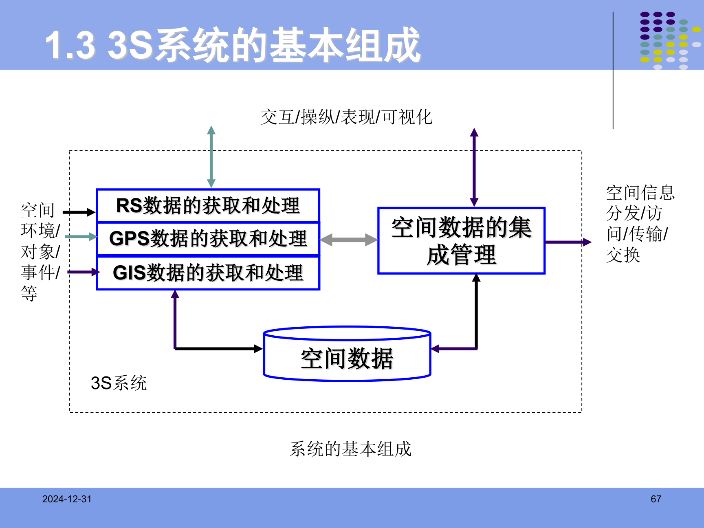
3S 系统的基本组成图
6. 涉及到的关键技术
- 高分辨率卫星影像（空间、时间、光谱）；
- 空间信息基础设施：空间数据协调管理与分发体系和机构、空间数据交换网站、空间数据交换标准、数字地球空间数据框架；
- 数据存贮及元数据交换与共享：大容量的存储；数据集成——元数据及其交换规范；
- 空间数据的集成处理和分析：数据的相关与互补；空间数据挖掘与分析技术；
- 空间信息可视化技术：2D/3D 联合可视化、3D 可视化、信息可视化导航；
- 分布空间数据管理技术：Grid 空间信息管理与集成服务。
其他重要应用领域：地球资源环境监测（全球气候变化、海平面变化、荒漠化、生态与环境变化、土地利用变化的监测）；数字化城市与基础设施规划与管理（国家基础设施建设的规划，全国铁路、交通运输的规划，城市发展的规划，公安消防，海岸带开发，西部开发；基于高分辨率正射影像、城市 GIS、建筑 CAD，建立虚拟城市和数字化城市）。
五、3S 技术的应用
【考点】期末大题：3S 技术在旅游业的应用（须掌握 GIS/RS/GPS 各自作用＋综合应用）。
1. 智能交通及其管理
- 基于 GPS 定位及其 GIS 地图的导航；
- 基于 GPS 定位及其 GIS 地图车辆监视与管理；
- 基于 GIS 系统的交通疏导。
2. 精细农业
- 遥感影像：在计算机网络终端上可以从影像图中获得农田的长势征兆；
- 用 GIS 进行分析，制定出农作行动计划；
- 车载 GPS 和电子地图指引下，实施农田作业。把杀虫剂、化肥和水用到必须用的地方，而不致使化学残留物污染土地、粮食和种子，实现真正的绿色农业。
3. 安全救援与突发事件应急处理
- GPS 定位技术对火警、救护、警察进行应急调遣；
- 特种车辆（如运钞车）等，可对突发事件进行报警、定位；
- 对失踪人员和车船实施有效的搜索和搜救；
- 基于 3S 系统进行突发事件的应急处理分析。
4. 军事
- 战略、战术和战役的各种军事地理信息系统；运用虚拟现实技术建立数字化战场；
- 战前：建立战区及其周围地区的军事地理信息系统；
- 战时：利用 GPS、RS 和 GIS 进行战场侦察，信息的更新，军事指挥与调度，武器精确制导；
- 战时与战后：军事打击效果评估等等；
- 应用于地形地貌侦察、军事目标跟踪监视、飞行器定位、导航、武器制导、打击效果侦察、战场仿真、作战指挥等。
5. 3S 技术在旅游业中的应用（期末大题重点）
【考点】总述：3S 技术是地理信息系统（GIS）、遥感系统（RS）及全球定位系统（GPS）的总称。在旅游业中主要应用于旅游地图制图、旅游资源管理、旅游地规划、旅游地环境监测与保护、旅游地管理决策支持五大方面（课件所列）。
- 旅游地图制图：旅游地图是一种主要表示旅游要素的专题地图，通过将旅游资源要素、媒体要素和主体要素表现于图上，并附以必要的注记和文字说明，为旅游者提供旅游信息服务，为专业人员提供研究和管理的依据。
- GIS 具有强大的制图功能，利用 GIS 软件可绘制旅游资源分布图、旅游规划图等，图件可清晰展示旅游资源的分布和规划情况；
- RS 可大面积获取地物信息特征，为旅游地图的制作提供丰富的遥感影像数据；
- GPS 可进行精确的定位，确保地图上的位置信息准确无误；
- 三者的结合使得旅游地图的制作更加精确、高效和丰富。
- 旅游资源管理：
- GIS 具有强大的数据存储、处理和管理功能，可建立旅游资源信息数据库，对旅游资源的类型、数量、分布等信息进行集成管理；
- RS 可实时监测旅游资源的状态，如植被覆盖、土地利用等，为旅游资源的动态管理提供依据；
- GPS 则可提供旅游资源的精确位置信息，方便管理人员进行实地考察和定位；
- 三者结合可实现旅游资源的有效管理和合理利用。
- 旅游地规划：
- GIS 可对旅游目的地的地形、地貌、植被等进行分析，评估其旅游资源的潜力和可持续发展能力；
- RS 可获取旅游目的地的遥感影像数据，为规划者提供直观的视觉参考；
- GPS 则可帮助规划者准确测量地理位置和距离，为旅游线路的规划提供依据；
- 三者结合可制定科学合理的旅游规划方案，提升旅游目的地的吸引力和竞争力。
- 旅游地环境监测与保护：
- RS 可实时监测旅游目的地的环境状况，如空气质量、水质、土壤污染等，为环境保护提供数据支持；
- GIS 可对这些环境数据进行整合和分析，形成环境状况报告，为环境保护措施的制定提供依据；
- GPS 则可用于定位污染源和受损区域，方便管理人员进行实地调查和修复；
- 三者结合可实现旅游地环境的实时监测和有效保护。
- 旅游地管理决策支持：
- GIS 可对旅游目的地的客流量、游客行为等进行分析，为旅游地的管理决策提供数据支持；
- RS 可获取旅游目的地的遥感影像数据，为管理决策提供直观的视觉参考；
- GPS 则可用于定位游客和旅游资源，方便管理人员进行实时调度和管理；
- 三者结合可提高旅游地管理决策的科学性和准确性。
- 总结：通过 3S 技术的综合应用，可提升旅游业的整体水平和竞争力，为旅游业的可持续发展做出贡献。
六、本章小结（3S 部分）
- 3S 技术是 GIS、RS 和 GPS 技术的集成；
- RS 获取各种遥感影像数据；
- GPS 获取对象的位置和时间数据；
- GIS 获取和管理地理空间数据；
- 通过 GIS 系统集成空间数据及其属性数据。
第三章 旅游管理信息系统开发方法
本章围绕"用什么思想、策略、方式和方法来开发旅游管理信息系统（TMIS）"展开，共分四节：开发思想（系统工程指导思想、目标导向、开发原则与条件）、开发策略（自上而下、自下而上、综合开发策略）、开发方式（委托开发、自行开发、联合开发、购买现成软件）、开发方法（生命周期法、原型法、面向对象方法、计算机辅助软件工程CASE）。
3.1 旅游管理信息系统开发思想
一、旅游管理信息系统开发的指导思想
旅游管理信息系统开发的指导思想是系统工程思想。
（一）系统工程的发展历程
1. 中国古代朴素的系统工程思想：早在古代中国就已产生朴素的系统工程思想，典型代表包括管子（农事管理）、孙子（军事管理）、李冰父子（工程管理，如都江堰水利工程），分别对应农事管理、军事管理、工程管理三个领域。
2. 系统工程在国外的发展：自然科学的一系列伟大成就，使人类对自然过程的相互联系的认识有了很大提高。马克思、恩格斯认为，十九世纪的自然科学"本质上是整理材料的科学，关于过程、关于这些事物的发生和发展以及关于把这些自然过程结合为一个伟大整体的联系的科学"。辩证唯物主义认为，物质世界是无数相互联系、相互依赖、相互制约、相互作用的事物和过程所形成的统一整体。
3. 系统工程在中国的发展：
- 钱学森（1978）提出：系统工程是组织管理的技术——系统工程是组织管理系统的规划、研究、设计、制造、试验、使用的科学方法，简言之，是一门组织管理的技术。
- 经济系统工程：主要研究宏观经济问题，如国家经济发展战略、综合发展规划、经济指标体系、产业结构分析、资源合理配置、经济政策分析、综合国力分析、世界经济模型等。
- 社会系统工程：研究对象是整个社会，这是一个开放的复杂巨系统。目前正在探讨一种从定性到定量、综合运用多种学科处理复杂巨系统的方法论。
- 信息系统工程：人网结合的开放的复杂巨系统，不仅具有信息采集、加工、存储、传输、调用、共享、分析、综合等功能，还具有产生新信息的功能，是信息的生产系统。
（二）系统工程的科学体系
【考点】系统工程的概念：系统工程是组织管理系统的规划、研究、设计、制造、试验和使用的科学方法，是实现系统资源、性能、效益最优化的高度综合性管理工程技术，是系统科学的应用。
- 系统工程既是一个技术过程，又是一个管理过程。
- 【考点】系统工程具有整体性、协调性（关联）、综合性（交叉）、满意性（优化）等特点。
系统工程的科学体系架构（由低到高四个层次）：
层次 | 内容 |
哲学层次 | 系统哲学、系统观 |
基础科学层次 | 系统论 |
技术科学层次 | 控制论、信息论、运筹学等 |
应用科学层次 | 系统工程 |
二、旅游管理信息系统开发的目标导向
旅游管理信息系统开发的目标导向呈现由低到高的阶梯式递进（资料来源：仲秋雁，2019）：
- 自动化：提高效率、取代手工作业；
- 流程合理化：理顺标准流程、质量持续改进常态化；
- 业务流程再造：分析、简化和重新设计业务流程，工作流重组、合并步骤、消除重复；
- 范式转移：对业务性质再思考、定义新业务模式、变革组织的性质。
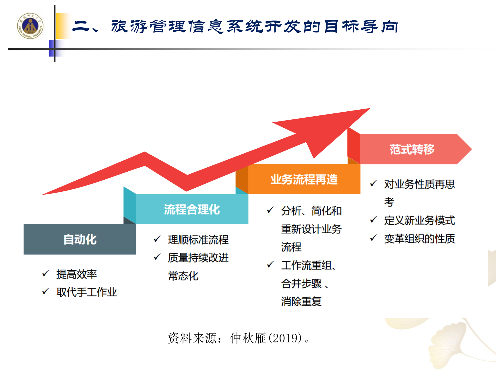
图3-1 旅游管理信息系统开发的目标导向（自动化→流程合理化→业务流程再造→范式转移）
三、旅游管理信息系统开发的原则
【考点】旅游管理信息系统开发应遵循以下六项原则：
1. 稳定性：系统要能稳定运行（"能用"）；
2. 先进性和实用性：既要不同于从前、技术先进，又要切实有用；
3. 面向用户：以用户需求为出发点；
4. 一把手原则：一把手要清晰了解、熟练参与，开发者能发挥统领作用；
5. 整体性：从系统整体出发进行开发；
6. 工程化、标准化：以工程化、标准化的方式组织开发。
四、旅游管理信息系统开发的条件
【考点】开发旅游管理信息系统应具备以下四个条件：
1. 管理方法科学化；
2. 领导重视、业务部门支持；
3. 组建开发与应用技术队伍；
4. 具备一定的资金。
3.2 旅游管理信息系统开发策略
一、"自上而下"的策略
基本思想：从组织的高层管理者着手，从组织战略目标出发，将组织看成一个整体，探索合理的信息流，确定系统方案，然后自上而下层层分解，确定需要哪些功能去保证目标的完成，从而划分相应的业务子系统。
- 优点：整体性好，逻辑性较强，条理清楚，层次分明，能把握总体，综合考虑系统的优化。
- 缺点：对规模较大系统的开发，因工作量大而影响具体细节的考虑；开发难度大，周期较长；系统开销大，所冒风险较大。
二、"自下而上"的策略
基本思想：从组织各个基层业务子系统的日常业务数据处理出发，先实现一个个具体的业务功能，然后根据需要逐步增加有关管理控制和决策方面的功能，由低级到高级，不断完善，从而构成整个管理信息系统并支持组织战略目标。
- 优点：符合人们由浅入深、由简到繁地认识事物的习惯，易于被接受和掌握；它以具体的业务处理为基础，根据需要而扩展，边实施边见效，容易开发，不会造成系统的浪费。
- 缺点：缺乏系统整体性和功能协调性，难以保证各子系统之间联系的合理性和有效性；易造成子系统之间数据的不一致性和数据冗余，造成重复开发和返工。
三、综合开发策略
所谓"自上而下规划，自下而上地实现"，即把"自上而下"与"自下而上"两种策略结合起来：大型系统往往采用这种开发策略。
【考点】两种基本开发策略对比：
对比项 | "自上而下"策略 | "自下而上"策略 |
出发点 | 组织高层管理者、组织战略目标 | 基层业务子系统的日常业务数据处理 |
实施顺序 | 先定系统方案，再层层分解划分子系统 | 先实现具体业务功能，再逐步增加管理控制和决策功能 |
优点 | 整体性好、逻辑性强、条理清楚、层次分明，能把握总体、综合考虑系统优化 | 符合由浅入深的认识习惯，易于接受和掌握；边实施边见效，容易开发，不造成浪费 |
缺点 | 工作量大、细节考虑不足；开发难度大、周期长；系统开销大、风险较大 | 缺乏整体性和功能协调性；易造成数据不一致、数据冗余，重复开发和返工 |
适用情形 | 规模较大系统需慎用（常与其他策略结合） | 小型系统、局部功能开发 |
3.3 旅游管理信息系统开发方式
旅游管理信息系统的开发方式主要有四种：用户自行开发、委托开发、联合开发、购买现成软件。
【考点】四种开发方式的对比：
方式特点 | 委托开发 | 用户自行开发 | 联合开发 | 购买现成软件 |
分析设计能力的要求 | 一般 | 较高 | 逐渐培养 | 较低 |
编程能力的要求 | 不需要 | 较高 | 需要 | 较低 |
系统维护难易程度 | 较困难 | 容易 | 较容易 | 较困难 |
开发费用 | 多 | 少 | 较少 | 较少 |
特点描述 | 最省事，开发费用高。必须配备精通业务的人员，需要经常进行监督、检查、协调 | 开发时间较长，但可得到适合本企业的系统，并培养了自己的系统开发人员。该方式需要强有力的领导及进行一定的咨询 | 通常在具备一定的编程力量的基础上进行联合开发，合作方有培训义务且成果共享，双方的沟通非常重要 | 要有鉴别与校验软件包功能及适应条件的能力，需编制一定的接口软件 |
3.4 旅游管理信息系统开发方法
一、生命周期法
（一）基本思想
【考点】生命周期法的基本思想：生命周期理论认为，任何一个软件都有它的生存期，即从软件项目的提出，经历研制、运行和维护，直至退出的整个时期。生命周期法将信息系统的整个生存期视为一个生命周期，并将其严格划分为若干阶段，并明确每一阶段的任务、原则、方法、工具和形成的文档资料，分阶段、分步骤地进行信息系统的开发。
（二）过程
【考点】生命周期法将系统开发划分为五个阶段：系统规划 → 系统分析 → 系统设计 → 系统实施 → 系统运行维护。
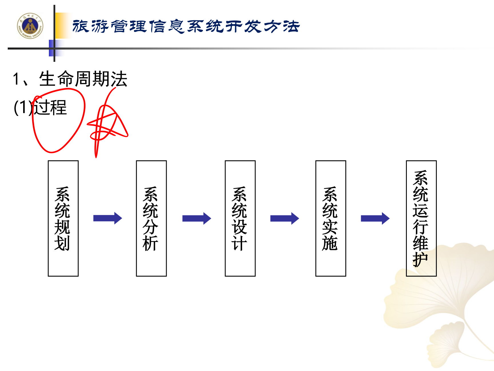
图3-2 生命周期法的五个阶段
各阶段的工作、目标、成果与文档如下表所示：
阶段 | 工作 | 目标 | 成果 | 文档 |
系统规划 | 初步调查、可行性研究、开发计划 | 做什么 | 概念模型（总体目标、结构、功能） | 系统规划报告、项目建议书 |
系统分析 | 详细调查、业务/数据流程分析 | 怎么做 | 逻辑模型（数据及其处理流程） | 系统分析说明书 |
系统设计 | 总体结构设计、详细技术模块设计 | 用什么做 | 物理模型（硬件、软件、数据库） | 系统设计说明书 |
系统实施 | 组网、编程、建库、测试转换、培训验收 | 实现 | 应用系统 | 系统测试报告、系统使用说明书 |
系统运行维护 | 使用、评价、修订 | 完善 | 新系统需求 | 系统评价报告 |
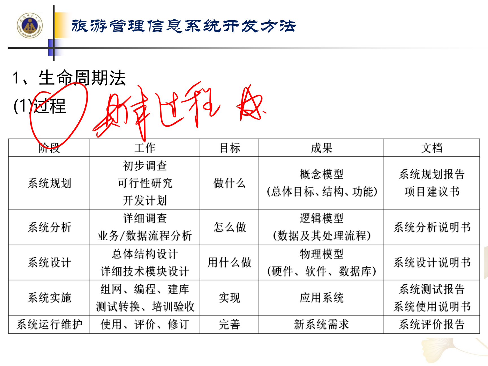
图3-3 生命周期法各阶段的工作、目标、成果与文档一览表
信息系统的生命周期是一个循环往复的过程：系统运行维护阶段又会提出新的系统需求，从而进入新一轮的系统规划。
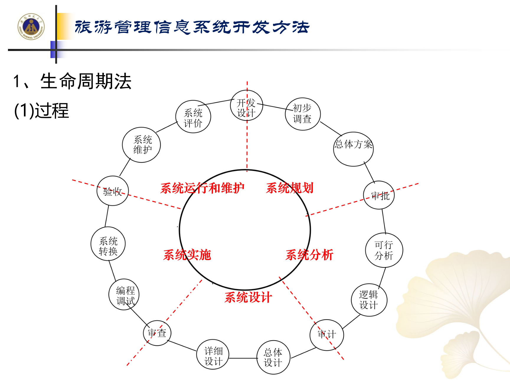
图3-4 信息系统生命周期循环图（系统规划→系统分析→系统设计→系统实施→系统运行和维护）
（三）优点
【考点】生命周期法的优点：
- 系统工程特征：阶段清晰，任务明确，文档规范；
- 强调系统问题的预见性、系统稳定性；
- 便于实施维护、管理控制；
- 适用于大型信息系统的开发。
（四）缺点
【考点】生命周期法的缺点：
- 任务流过于理想化，缺乏灵活性；
- 难以准确定义需求，难以保证系统的环境适应性；
- 文档理解与审批工作困难（每个阶段都有"审批"环节，对审批工作者素质要求高）；
- 开发周期长。
二、原型法
（一）基本思想
【考点】原型法的基本思想：运用各种开发工具，首先在初步调查的基础上，快速构造出一个功能并不完善但可实际运行的TMIS软件系统（称之为"原型"），然后根据用户的意见、评价，逐步修改、扩充、变更和完善，使之逐步完善，最终形成用户真正需要的系统，从而实现TMIS的开发。
原型：实际系统的简化版本，反映系统的重要功能和特征。
（二）过程
【考点】原型法的开发过程：
1. 获得用户初步、基本需求；
2. 尽快建立初始原型，及时供用户运行；
3. 试用、评价原型的使用效果，提出改进方案；
4. 开发人员修改完善原型；
5. 迭代求精，趋近用户满意的系统。
其流程为：用户对新系统提出需求（各种问题）→ 开发人员对问题进行总结 → 开发一个原型系统 → 运行原型系统 →（提出意见）修改原型 /（需要增加新功能则）增加功能 → 循环往复，直至完成后交付使用。
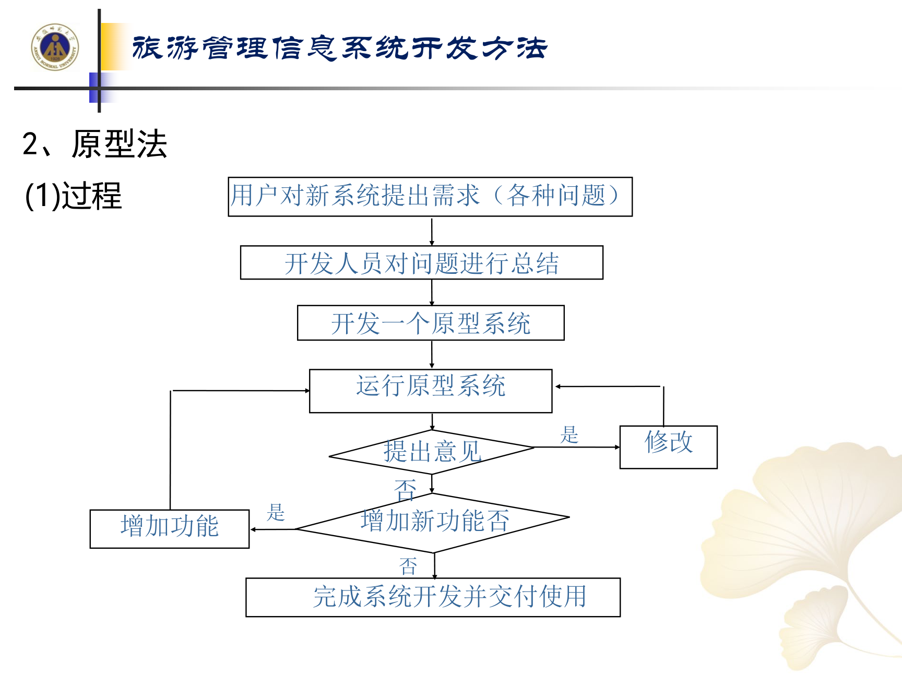
图3-5 原型法开发过程流程图
（三）原则
【考点】原型法应遵循的四条原则：
1. 集成原则：尽可能利用现有软件和模型来构造原型；
2. 最小系统原则：先构造基本原型，再经过评价修改来扩充完善；
3. 用户参与原则：用户在开发的整个生命周期中积极发挥主导作用；
4. 开发环境支持原则：需高效开发工具及交互式环境的支持。
（四）优点
- 符合人的认识规律；
- 高度支持用户参与；
- 降低开发风险；
- 提高开发效率。
（五）缺点
- 需要自动化、交互式的开发工具的支持；
- 只适用于规模不大、逻辑较清晰的系统；
- 系统质量评价的科学性有限；
- 忽视技术文档的整理，维护管理难度大。
三、面向对象方法
面向对象系统开发方法是20世纪80年代中后期在面向对象程序设计语言的基础上逐步形成的一种方法。作为一种方法论，它强调对现实世界的理解和模拟，便于由现实世界转换到计算机世界。面向对象的方法特别适合于系统分析与设计。
（一）过程
【考点】面向对象方法的开发过程分为四步：
1. 定义问题（系统调查和需求分析）；
2. 对问题的概括描述（OOA，面向对象的分析）；
3. 形式化处理（OOD，面向对象的设计）；
4. 实现（OOP，面向对象的编程）。
（二）优点
- 以对象为基础，直接完成从对象客体描述到软件的转化；
- 缩短系统开发周期，简化了分析和设计；
- 有较强的应变能力，重用性和维护性好；
- 适合于多媒体和复杂系统。
（三）缺点
- 需要一定的软件基础才可以应用；
- 对大系统而言，采用自下而上的面向对象方法开发系统，易造成系统结构不合理；
- 易使系统整体功能协调性差。
四、三种开发方法的比较
【考点】生命周期法、原型法、面向对象方法三种开发方法的比较：
开发方法 | 主要特点 | 不足/适用 |
结构化系统生命周期法 | 国际公认的标准化方法，过程严密，思路清晰 | 总体思路上比较保守，以不变应万变适应环境的变化；适用于大型信息系统 |
原型法 | 强调开发人员与用户的交流，所开发的管理信息系统具有较强的动态适应性 | 对中小型的管理信息系统开发效果较好，但在计算机开发工具上要求较高 |
面向对象方法 | 一种新颖、具有独特优点的方法，特别适合系统分析与设计 | 缺点在于在没有进行全面的系统性调查分析之前，把握整个系统结构有困难 |
五、计算机辅助软件工程（CASE）
（一）提出背景与实质
【考点】CASE（Computer Aided Software Engineering，计算机辅助软件工程）提出的背景：系统开发周期长，工作效率低；质量得不到保证，数据一致性差；文档工作不规范；系统维护工作量大。其实质是利用一些CASE工具（软件）实现开发过程的自动化。
【考点】CASE不是一种开发方法，它只是一种开发环境。采用CASE进行开发，必须结合一种具体的开发方法。
CASE工具按支持功能来分有三种：软件生成工具；系统需求分析与设计工具；集成化开发工具。
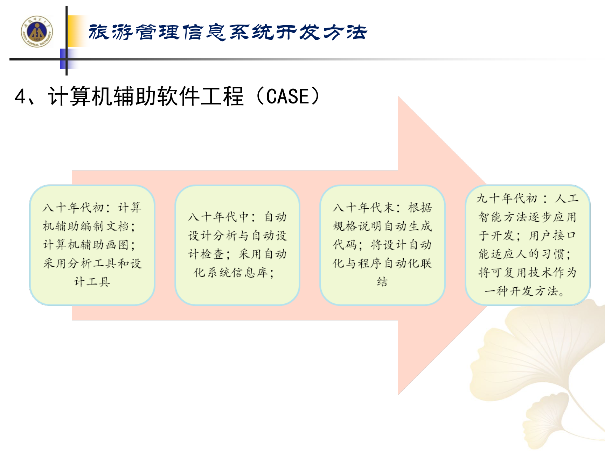
图3-6 CASE工具与集成化开发环境
（二）典型CASE工具：IBM Rational
Rational是专门从事CASE工具研制与开发的软件公司，2003年被IBM收购。该公司所研发的Rational系列软件是完整的CASE集成工具，贯穿从需求分析到软件维护整个软件生命周期。
（三）CASE工具的主要类型
- 图形工具：绘制结构图，生成系统专用图；
- 屏幕显示和报告生成的各种专用系统；
- 专用检测工具：测试错误与不一致性的专用工具；
- 代码生成器：从原型系统的工具中自动生成程序代码；
- 文档生成器：产生结构化方法和其他开发方法所需的各种文档。
集成的CASE环境以软件工程信息库为内核，多个CASE工具相互交换、共享软件开发信息，在统一的框架下呈现高度一致的用户界面。
第四章 旅游管理信息系统开发——战略规划
旅游管理信息系统的开发过程依次为：系统规划 → 系统分析 → 系统设计 → 系统实施 → 系统运行维护。战略规划（系统规划）是开发过程的第一个阶段，决定系统的总体目标、总体结构与开发安排。
本章内容分为三节：管理信息系统战略规划概述（必要性、作用、特点）、战略规划的主要内容和基本步骤、管理信息系统规划的常用方法（诺兰模型、关键成功因素法CSF、战略目标集转化法SST、企业系统规划法BSP等）。
4.1 管理信息系统战略规划概述
一、战略规划的必要性和重要性
- 尽管组织信息化进程有了显著的进展，但正在建设的或已经建成的系统面临着许多问题。主要是对于系统的具体设计方案考虑较多，而对系统总体方案与发展战略问题重视不足。
- 【考点】建设管理信息系统是一项耗资大、历时长、技术复杂且涉及面广的系统工程，在着手开发之前，必须认真地制订有充分根据的管理信息系统战略规划；这项工作的好坏往往是开发管理信息系统成败的关键。
二、管理信息系统战略规划的作用
【考点】战略规划的作用包括以下四点：
1. 是系统开发的前提条件；
2. 帮助组织合理分配和利用管理信息系统资源，以节省管理信息系统的投资；
3. 能正确地识别出为实现组织目标管理信息系统必须完成的任务；
4. 是系统开发的纲领，是开发成功的保证，是系统验收评价的标准。
三、管理信息系统战略规划的特点
【考点】战略规划具有以下七个特点：
1. 面向全局长远的规划；
2. 立足高层管理，兼顾各管理层的要求；
3. 战略规划不宜过细；
4. 支持组织战略和目标；
5. 应摆脱系统对组织机构的依赖；
6. 是自上而下规划、自下而上实现的过程；
7. 具有动态性。
4.2 MIS战略规划的主要内容和基本步骤
一、管理信息系统战略规划的主要内容
【考点】战略规划的主要内容包括五项：
1. 确定管理信息系统的总目标；
2. 确定管理信息系统总体结构；
3. 对现行信息系统状况的了解；
4. 对相关信息技术进行预测；
5. 管理信息系统的近期计划。
二、管理信息系统战略规划的步骤
【考点】战略规划按以下四个步骤进行：项目的提出 → 系统初步调查 → 新系统方案总体设想 → 可行性研究报告。
（一）项目的提出
- 识别经营管理中的薄弱环节；
- 确认信息系统预期发挥的作用。
（二）系统初步调查
系统初步调查围绕"目标要点"展开，包括用户需求、开发条件、可行性分析三方面：
1. 用户需求：
- 改进管理的体制、流程、手段；
- 改进决策的方法、质量；
- 改进管理的信息服务；
- 提高资源的利用、共享率；
- 降低组织成本；
- 提高组织效率和效益。
2. 开发条件：
- 各级管理人员的态度：对系统的预期和适应能力；
- 管理工作的水平：机构、职责、制度、业务；
- 可提供的资源：人、财、物、时间、技术、信息；
- 其他约束条件。
3. 可行性分析：
- 技术可行性：现有技术条件与技术未来发展；
- 经济可行性：现有经济条件与开发维护效益；
- 社会适应可行性：机构人员与社会环境。
（三）新系统方案总体设想
- 定位：目标，规模，结构，范围，功能，性能，预计效益；
- 资源：人、财、物、时间、技术、信息的需求和选择意向；
- 进度：具体开发计划。
（四）可行性研究报告
【考点】可行性研究报告的内容包括：
1. 概述；
2. 系统目标；
3. 对现有系统的分析；
4. 所建议的新系统；
5. 可选择的其他系统方案；
6. 投资及效益分析；
7. 系统开发建议与计划。
4.3 管理信息系统规划的常用方法
常用方法包括：关键成功因素法（CSF）、战略目标集转化法（SST）、企业系统规划法（BSP）、产出/方法分析（E/MA），以及用于指导系统规划的诺兰模型。
一、诺兰模型（指导模型）
【考点】计算机在组织管理中的应用，一般要经历若干阶段。1973年，诺兰（Nolan）首次提出了信息系统发展的阶段理论，被称为诺兰模型；1980年，诺兰又进一步完善了该模型。诺兰模型把信息系统的发展划分为六个阶段：初装、蔓延、控制、集成、数据、成熟。诺兰模型在信息化建设发展中具有十分重要的指导意义。
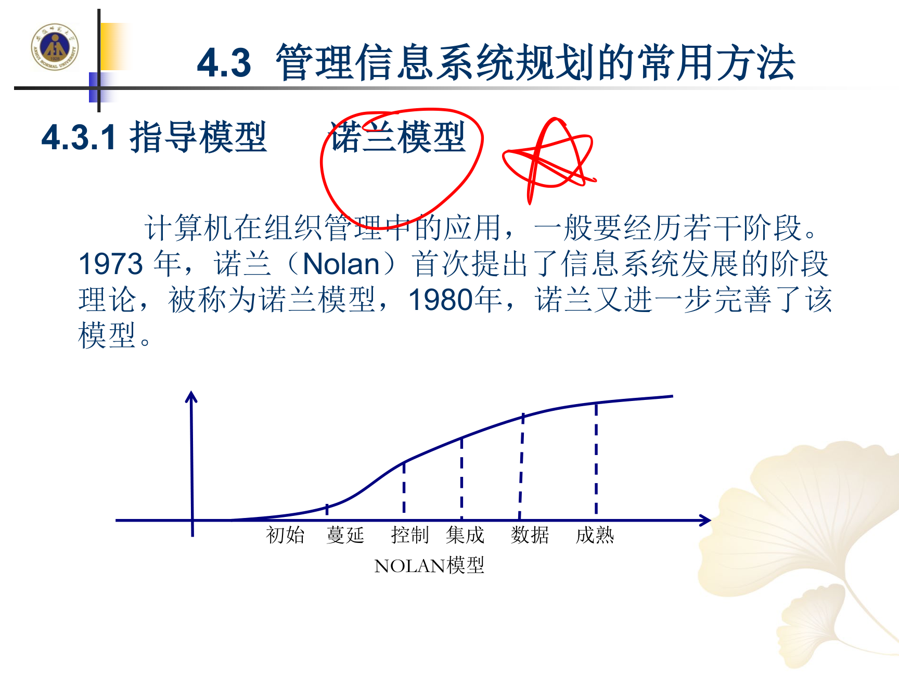
图4-1 诺兰模型（NOLAN模型）的六个阶段
（一）初装
初装阶段标志着组织购买第一台计算机，并初步开发管理应用程序。特点：
1. 组织中个别人具有使用计算机的能力；
2. 该阶段一般发生在一个组织的财务、统计、库存等部门。
（二）蔓延
处于蔓延阶段的组织中，计算机的应用初见成效，管理应用程序从少数部门扩散到多数部门。特点：
1. 数据处理能力得到迅速发展；
2. 出现许多新问题（如数据冗余、数据不一致性、难以共享等）；
3. 计算机使用效率不高等。
（三）控制
企业进行信息化的预算增加而回报却不理想，对计算机应用的经验不断丰富，发觉对计算机的应用及其发展失去控制，寻求利用数据库技术解决数据共享问题。特点：
1. 成立了一个领导小组；
2. 采用了数据库（DB）技术；
3. 是计算机管理变为数据管理的关键时期。
（四）集成
集成阶段就是在控制的基础上，对子系统中的硬件进行重新联接，建立集中式的数据库及能够充分利用和管理各种信息的系统。特点：
1. 建立集中式的DB及相应的IS；
2. 增加大量硬件，预算费用迅速增长。
即把企业内部不同的IT机构和系统统一到一个系统中进行管理，使资源信息能够在企业集成共享，更有效地利用现有的IT系统和资源。
（五）数据
- 选定统一的数据库平台、数据管理体系和信息管理平台；
- 统一数据的管理和使用，使得各部门、各系统基本实现资源整合、信息共享。计算机作为日常信息处理工具的作用开始发挥，投资开始见效，信息资源进入整合利用和提高阶段。
（六）成熟
到了这一阶段，信息系统已经可以满足企业各个层次的需求，从简单的事务处理到支持高效管理的决策。企业真正把IT同管理过程结合起来，将组织内部、外部的资源充分整合和利用，从而提升了企业的竞争力和发展潜力。
二、关键成功因素法（CSF）
（一）背景和基本思路
1970年哈佛大学教授William Zani在管理信息系统模型中使用了关键成功变量，这些变量是确定管理信息系统成败的因素。
【考点】关键成功因素法（CSF）就是通过分析找出使得企业成功的关键因素，然后再围绕这些关键因素来确定信息系统的需求，并进行规划（即：关键成功因素 → 指标、标准）。
（二）关键成功因素法建立数据库的步骤
【考点】CSF的步骤为：
1. 界定关键成功因子；
2. 建立关键数据模型；
3. 设计总体数据库结构；
4. 设计信息系统总体结构；
5. 确定信息系统开发的优先次序；
6. 制定整体开发计划。
（三）适用对象与优缺点
- 适用于组织的高层。因为每个高层领导人员日常总在考虑什么是关键因素；对中层来说则不大使用，因为中层领导所面临的决策大多是结构化的，其自由度较小。
- 优点：开发一个对管理者有意义的信息系统。
- 缺点：关注特定的管理者的信息需求，而不是整个组织的信息需求。
（四）举例：国际一流大学
以"国际一流大学"为目标，其关键成功因素可分解为：教学成果、学术水平、教学质量、课程水平、教学环境、科研力量、科研成果等。
进一步细化为"关键成功因素—性能指标和评估标准"的对应关系，例如：
关键成功因素 | 性能指标和评估标准 |
教学水平 | 师资力量（人数、职称）、教学硬件条件、教学方法 |
学术水平 | 发表论文数、出版专著数、承接课题数、专利及技术成果 |
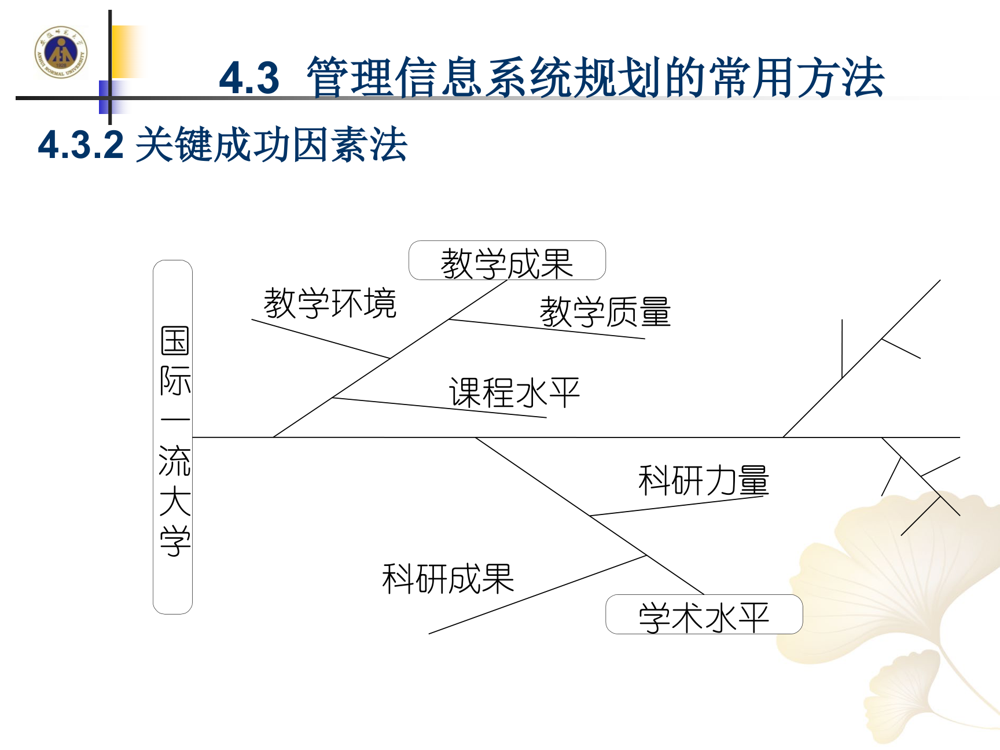
图4-2 关键成功因素法示例（国际一流大学的关键成功因素分解）
三、战略目标集转化法（SST）
战略目标集转化法（Strategy Set Transformation，SST）由William King于1978年提出。
【考点】SST系统规划的核心：信息系统战略与业务系统战略的一致性，即由组织的使命、目标等战略推导MIS的战略，把"组织战略集"转化为"MIS战略集"。
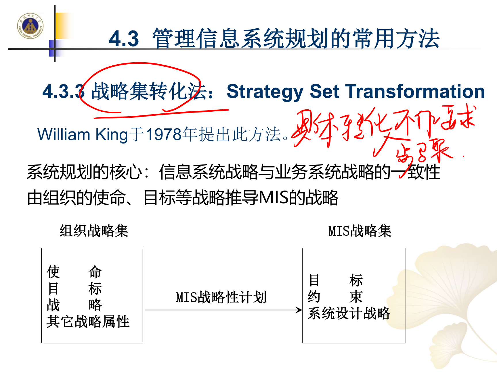
图4-3 战略目标集转化法：由组织战略集转化为MIS战略集
（一）组织战略集
组织的战略集是组织本身战略规划过程的产物，包括组织的使命、目标、战略和其它一些与MIS有关的组织属性。
- 组织的使命：描述该组织是什么、为什么存在，能做出什么贡献。简言之就是描述该组织属于什么具体的行业或部门。
- 组织的目标：是指组织将来希望达到的目的。这些目标可以是定量的也可以是定性的，但它们首先应该是长期的和广泛的。
- 组织的战略：就是组织达到它的目标所制定的总的方针。
- 其它战略性组织属性：是指管理水平、管理者对信息技术了解的程度、采用新技术的态度等，虽然难以度量，但对MIS的建设影响很大。
（二）MIS战略集
【考点】MIS战略集由系统目标、系统约束和系统开发战略组成。
- 系统目标：主要定义MIS的服务要求。其描述类似组织目标的描述，但更加具体。
- 系统约束：包括内部约束和外部约束。内部约束产生于组织本身，如人员组织、资金预算等；外部约束来自企业外部，如政府和企业界对组织报告的要求、同其他系统的接口环境等。
- 系统开发战略：它是该战略集的重要元素，相当于系统开发中应遵循的一系列原则，如系统安全可靠、应变能力等要求，开发的科学方法及合理的管理等。
（三）SST的实施步骤
SST的实施分为三步：
1. 识别组织的战略集：刻画组织的关联集团（各类人员）；识别每类人员的要求；识别每类人员的使命和战略；验证组织的战略集。
2. 将组织战略集转化成MIS战略集：找出一个或多个信息系统的目标；找出信息系统的约束条件；找出信息系统的设计战略；提出整个信息系统的结构。
3. 反复完善、修改，提交进行评审：选出一个最佳方案送主管领导进行审核。
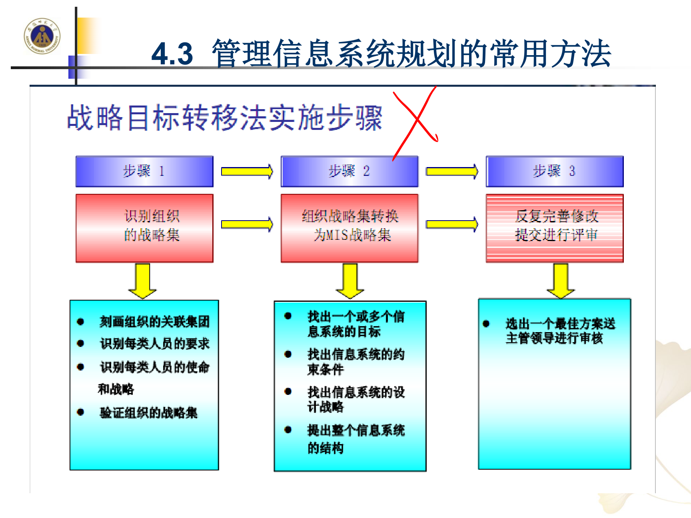
图4-4 战略目标集转化法的实施步骤
（四）SST应用举例
以某企业为例，先确定利益群体：P（公用事业）、Cu（顾客）、G（政府）、S（股东）、Cr（债权人）、E（雇员）、M（管理者）。其组织战略集包括：
- 组织目标：O1 年增收入10%（S,Cr,M）、O2 改善现金流（G,S,Cr）、O3 提高顾客满意度（Cu）、O4 对社会的义务（G,P）、O5 高质产品的生产（G,Cu）、O6 消除生产中的隐患（S,Cr）等；
- 组织战略：S1 拓展新业务（O1,O6）、S2 改进信贷（O1,O2,O3）、S3 重新设计产品（O3,O4,O5）等；
- 战略属性：A1 管理水平高（M）、A2 经营状况不好须提高要求（S,M）、A3 多数管理者熟练使用计算机（M）、A4 管理权力的高度分散（S,M）、A5 组织对政府协调机构负有责任（G,M）等。
转化得到的MIS战略集包括：MIS目标（MO1 改善会计速度、MO2 提供产品缺陷信息、MO3 提供新业务机会的信息等）、约束（C1 缩减开发资金的可能性、C2 系统必须采用决策模型和管理技术等）、系统设计战略（D1 使用模块设计方法、D2 在每一个完成阶段由模块设计提供的系统能独立使用等）。
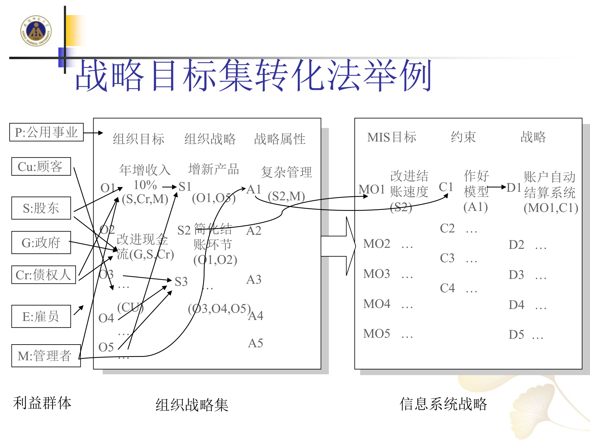
图4-5 战略目标集转化法举例：组织战略集与信息系统战略集的对应关系
四、企业系统规划法（BSP）
企业系统规划法（Business System Planning，BSP）是IBM公司在20世纪70年代用于内部系统开发的一种方法。
（一）原则
【考点】BSP的六条原则：
1. 信息系统是业务系统的映射、转化；
2. 系统应支持组织的长期目标；
3. 系统应表达所有管理层次的需求；
4. 系统应向整个组织提供一致的信息；
5. 系统应在组织架构变化时保持工作能力；
6. 系统战略应由总体结构中的子系统来实现。
（二）BSP的步骤
【考点】在准备工作和调研的基础上，BSP的步骤为：定义管理功能 → 定义组织过程 → 确定数据类 → 定义总体结构 → 制定开发计划。
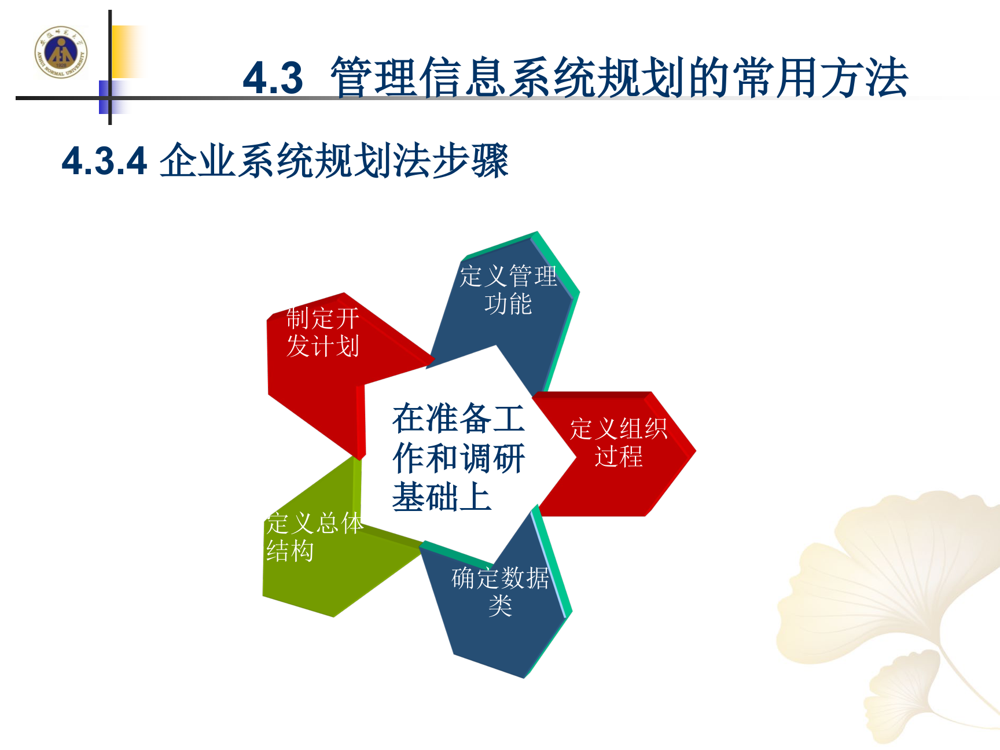
图4-6 企业系统规划法（BSP）的步骤
（三）定义管理功能（确定管理职能域）
通过全面调查，分析归纳出组织的全部管理工作中的各相关管理活动。定义管理功能的方法有两种：归纳法、演绎法。
例如，工业企业的管理功能（职能域）可归纳为：物资供应、人力资源、财务会计、生产管理、市场销售、高层管理、信息管理等。
（四）定义组织过程（组织过程识别）
- 组织过程是在组织管理中必要的、逻辑上相关的、为了完成管理功能的一组决策或活动的集合。
- 【考点】定义组织过程是BSP方法的核心。
- 任何组织活动均由三方面组成：计划和控制、产品和服务、支持资源。
例如：材料供应由材料计划与采购，收、发、存管理，材料成本核算业务过程组成；财务管理由财务计划，资金筹措，财务控制与分析，应收应付管理业务过程组成。
- 计划和控制流程：战略规划活动（经济预测、组织计划、政策开发、放弃/追求分析、预测管理、目标开发、产品线模型）与控制活动（市场/产品预测、工作资金计划、雇员水平计划、运营计划、预算、测量与评价）。
- 产品或服务流程：按"识别阶段—获取阶段—服务阶段—退出"的生命周期识别过程，如市场计划、市场研究、预测、定价、材料需求、能力计划、工程设计开发、产品说明、工程记录、生产调度、生产运行、购买、库存控制、接收、质量控制、包装储存、销售、订货服务、运输、运输管理等。
- 支持性资源流程：按资源（资金、人事、材料、设备）的生命周期（要求—获得—服务—退出）识别，例如资金：财务计划、成本控制／资金获得／接收银行帐、会计总账／补充和收益、会计支付；材料：需求生产／采购、接收／库存控制／订货控制、运输；设备：主设备计划／设备购买、建设管理／机器维修、家具及附属物／设备报损等。
（五）定义数据类
数据类是逻辑上相关的一组数据。识别组织数据类的方法有两种：组织实体法、企业过程法。
1. 组织实体法：围绕组织实体（产品、材料、设备、人员），按数据类的四种类型（计划类、统计类、存储类、业务类）识别数据：
数据类 | 产品 | 材料 | 设备 | 人员 |
计划类 | 产品计划 | 材料需求 | 能力计划、设备计划 | 人员需求计划 |
统计类 | 产品需求 | 材料消耗 | 设备利用 | 人员构成 |
存储类 | 产成品、半成品 | 入库材料 | 设备维护使用 | 职员档案 |
业务类 | 订货、出入库 | 采购订货、收发 | 设备进出 | 招聘、解聘、晋升、调动 |
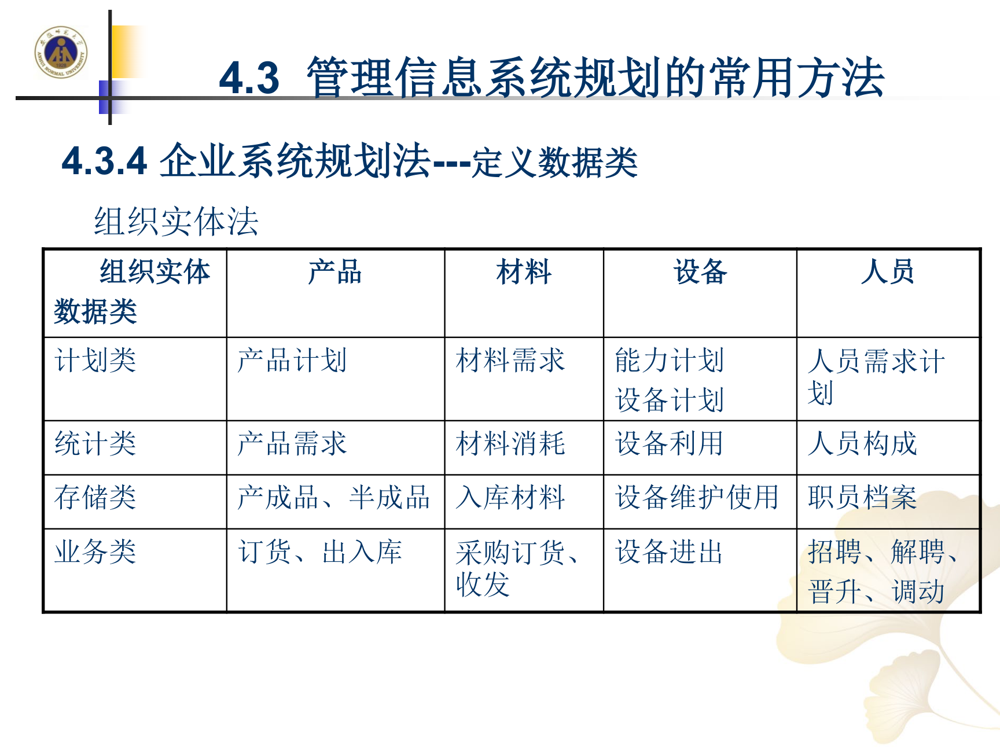
图4-7 组织实体法定义数据类（组织实体与数据类矩阵）
2. 企业过程法：分析每一过程需要输入什么数据、输出什么数据，按过程识别数据。例如"材料采购"过程输入库存量、供应商等数据，输出订货数据；"生产调度计划"涉及产品需求、设备能力、生产工时、材料采购、采购计划等。
将两种方法综合运用，即可得到一个中型企业的主题数据库：客户、预算、财务、供应商、采购、材料库存、成品库存、订货、成本、销售、销售区域、支付、计划、职工、工资、设备、在制品、机器负荷、对外需求、车间加工路线、产品、产品设计、零件、材料清单。
（六）定义新管理信息系统结构
- 该步骤主要任务是确定IS的结构，划分子系统。
- 实现子系统划分的方法很多，"U/C矩阵法"是其中较为常用和有效的方法。
- 【考点】U/C矩阵法的作用：① MIS子系统划分；② 反映子系统之间的数据交换关系；③ 明确子系统的开发顺序。
划分后形成的信息系统结构可包括：财务、人事、经营计划、技术准备、生产制造、销售等子系统。
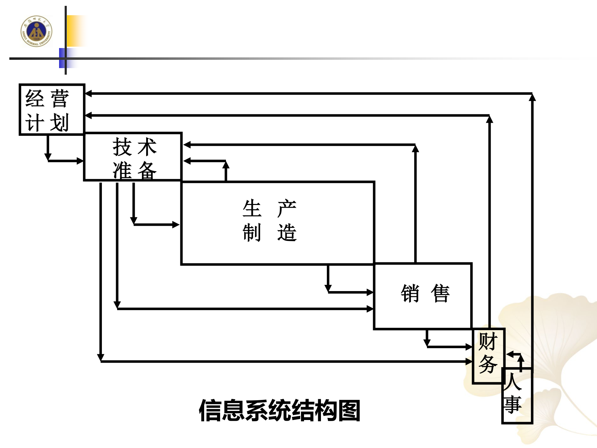
图4-8 信息系统结构图（财务、人事、经营计划、技术准备、生产制造、销售等子系统）
（七）确定子系统开发顺序
根据每个子系统的数据有多少被其它子系统所共享，按照有较多子系统共享的数据应较早实现的原则，确定管理信息系统各子系统开发的先后顺序。
五、CSF、SST、BSP的比较
【考点】三种规划方法的比较：
方法 | 主要优点/特点 | 局限性 |
CSF（关键成功因素法） | 使管理者能够决定自己的关键成功因素，据此开发出能满足管理者需求的特定MIS | 只注重特定管理者的信息需求，而不是整个组织的信息需求 |
SST（战略目标集转化法） | 从另一个角度识别管理目标，反映了各种人的要求，而且给出了按这种要求的分层，然后转化为管理信息系统目标的结构化方法 | 转化过程较复杂 |
BSP（企业系统规划法） | 可以帮助整个组织建立一个能摆脱系统对组织的依赖、具有较强适应性、支持组织长期需求的MIS；是一种正式的、客观的建立MIS总体方案的方法 | 实施耗时、耗资，需要专家支持 |
第五章 旅游管理信息系统开发——系统分析
旅游管理信息系统的开发过程依次为：系统规划 → 系统分析 → 系统设计 → 系统实施 → 系统运行维护。本章"系统分析"是开发工作的第一个阶段，在很大程度上决定了系统的成败。
系统分析概述
一、什么是系统分析
【考点】不同的MIS开发方法所采用的系统分析方法和详尽程度不尽相同，但系统分析都是必要且十分重要的环节，在很大程度上决定了系统的成败。
【考点】系统分析是开发工作的第一个阶段，解决系统"做什么"的问题。它以战略规划中提出的目标为出发点，包括进行初步的系统调查和详细的系统调查，进行系统化的分析，建立信息系统的逻辑模型等。系统分析阶段应写出系统分析报告，作为下一开发阶段的工作基础。
二、系统分析的目标
系统分析的目标：就是要借助于分析当前系统的物理模型，构建其逻辑模型，分析其存在的不足以及用户的新需求，分析构建出新系统的逻辑模型，并对新系统逻辑模型进行优化设计，使其满足新系统建设的规划目标，进而适应公司业务发展规划。
三、系统分析的任务
【考点】管理信息系统分析的任务是彻底搞清用户要求，通过对选定的对象进行调查和分析，在此基础上提出系统的初步模型（又叫逻辑设计），并完成系统分析报告。系统分析的主要任务包括：
1. 管理业务调查分析；
2. 数据流程调查分析；
3. 新系统模型的提出。
四、结构化分析方法
基本思想：结构化分析方法是在结构化程序设计思想基础上发展起来的方法，通过运用系统的思想和系统工程的方法，按照面向用户的原则，采用自顶向下的策略由粗到细、逐层分解的分析方法。结构化分析方法是目前较为成熟、广为使用的一种分析方法。
【考点】结构化分析方法的特点：
1. 面向用户的观点，强调用户自始至终的参与；
2. 系统的思想和方法（注重整体分析，层层落实以及系统的适应性）；
3. 强调系统的适应性；
4. 过程文档化，文档标准化、规范化。
系统调查的目的：完整掌握现行系统的现状，发现问题和薄弱环节，收集资料，为下一步的系统化分析和提出新系统的逻辑方案设计做好准备。
【考点】系统调查的原则：
1. 用户参与；
2. 自顶向下全面展开；
3. 工程化的工作方式；
4. 全面调查与重点调查相结合。
【考点】系统调查的内容：
1. 组织结构的调查；
2. 系统目标、管理功能的调查；
3. 业务流程的调查；
4. 信息流程的调查；
5. 系统环境的调查。
系统调查的方法：查阅资料、座谈会、调查表、实地观察等。
5.1 详细调查
设计一个新的信息系统，应首先进行组织的重新设计，把建立新系统看成是对组织的一种有目的的改变过程。因此对现行业务的调查十分重要，其中包括：组织结构调查、管理功能调查、管理业务流程调查三项。
一、组织结构调查
组织结构指一个组织（部门、企业、车间、科室等）的组成，以及这些组成部分之间的隶属关系或管理与被管理的关系，通常可用组织结构图来表示。
例如某企业的组织结构：厂长之下设计划科、生产部、财务部、供销等部门；计划科下设计划组、统计组；生产部下设计划调度组、外协组、统计组；财务部下设成本组、会计组、出纳组；供销下设供应组、销售组、仓库。
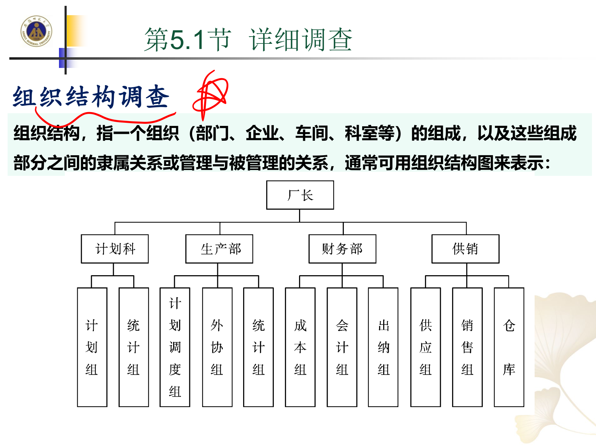
图5-1 组织结构图示例（厂长—计划科/生产部/财务部/供销）
二、管理功能调查
所谓功能，指的是完成某项工作的能力。调查中可以用功能层次图来描述从系统目标到各项功能的层次关系。例如某销售系统的管理功能可自顶向下逐层分解为若干子功能。
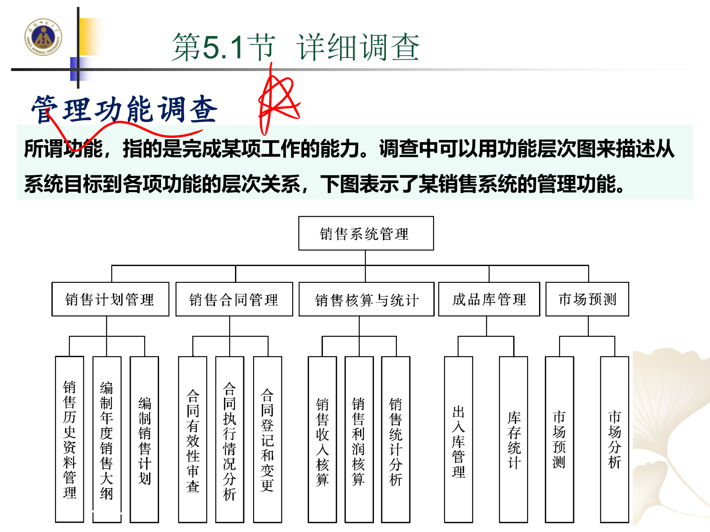
图5-2 管理功能层次图示例（某销售系统的管理功能）
三、管理业务流程调查
【考点】业务流程图是一种描述系统内各单位、人员之间业务关系、作业顺序和管理信息流向的图表。利用它可以帮助分析人员找出业务流程中的不合理的流向。
描述管理业务流程的图有两种：1.管理业务流程图；2.表格分配图。
例如某企业领料业务流程：车间提出用料计划、填写领料单 → 库长审批（未批准的领料单退回车间）→ 库工凭已批准的领料单查库存账发料（有则发料并记用料流水账、生成库存报表报有关部门；无则开缺料通知单）→ 采购员据缺料通知单、订货单（合同）、入库单等进行采购，向供货单位发催货单、补充订货单，收到提货通知单后提货入库。
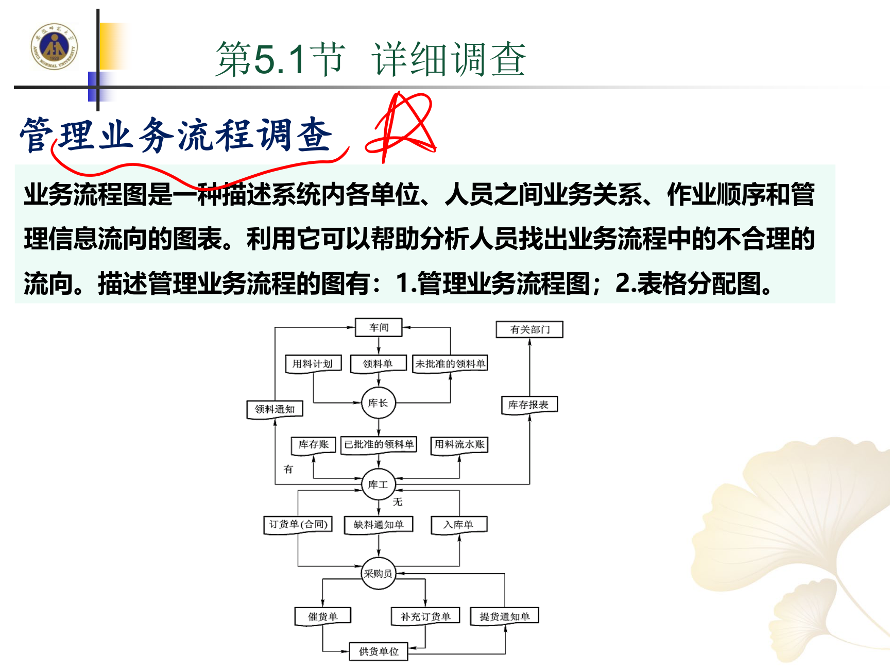
图5-3 管理业务流程图示例（领料业务流程）
5.2 数据流程图
一、数据流程图的地位与作用
数据流程图（DFD，Data Flow Diagram）来源于业务流程图、自然语言和调查数据。其地位与作用：
- 是系统结构化分析的主要工具；
- 是系统逻辑模型的主要组成部分；
- 在逻辑上描述系统的功能、输入、输出和数据存储等；
- 摆脱了所有的物理内容；
- 反映了各个部分及各部分之间的关系；
- 是设计的依据。
二、数据流程图的组成（表示符号）
【考点】数据流程图由四种基本成分（符号）组成：
成分 | 符号标识 | 含义 |
数据流的源点和终点（外部实体） | S | 系统之外的数据来源地或目的地 |
加工（处理过程） | P | 对数据流的处理 |
数据流 | F | 一组固定成分的数据的流动 |
数据存储 | D | 相关数据的逻辑集合（文件） |
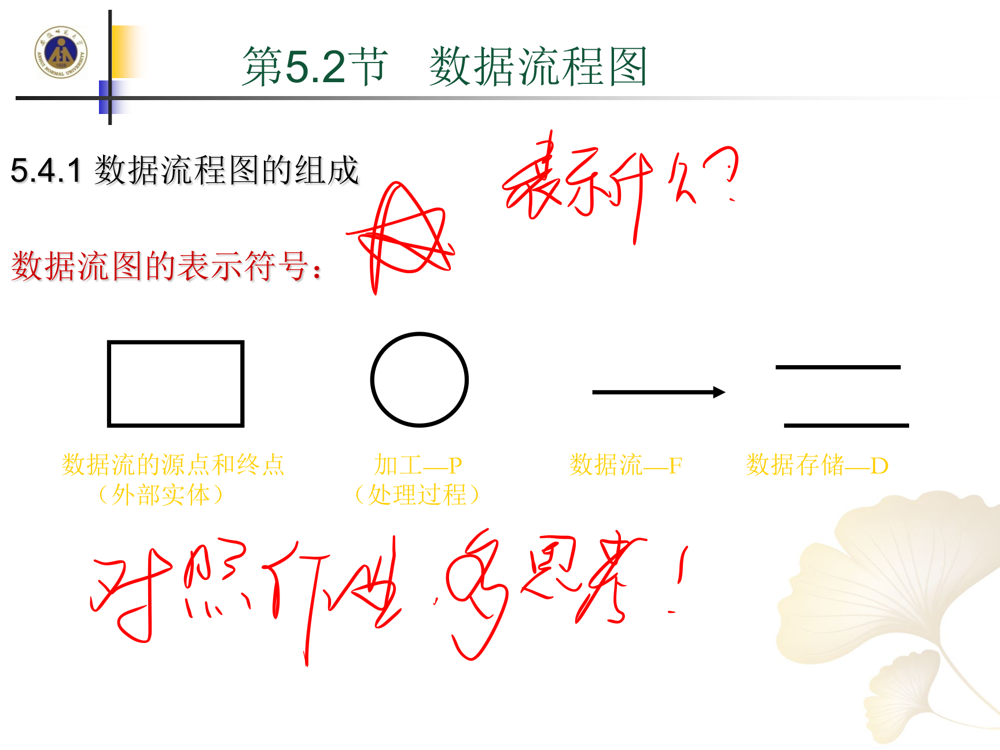
图5-4 数据流程图的表示符号（外部实体、加工P、数据流F、数据存储D）
（一）数据流
数据流由一组固定成分的数据所组成，直观地反映了系统各部分之间的信息传递关系。
【考点】数据流的流向大致有以下五种：
1. 从加工流向加工；
2. 从加工流向文件；
3. 从文件流向加工；
4. 从源点流向加工；
5. 从加工流向终点。
【考点】数据流图中的流动是实实在在的数据，而不是程序框图中通常画的那种控制流。两者的区别是：数据流上只有数据流过，而控制流上没有数据流流动。
（二）加工
加工是对数据流的一种处理。当数据流通过某个"加工站"时，它的所有数据都将被处理。当数据流流出这个"加工站"时，它的数据都会发生变化，或是数值变化，或是性质变化。加工的作用就是要实现这一变化。
（三）文件
文件是相关数据的逻辑集合。当某一数据流被加工处理后，若暂时不需要转到下一"加工站"进行处理时，往往先将它存到文件中，待处理时再提取。
当加工要从文件里读数据时，数据流是从文件流向加工的；当加工写入或修改文件时，数据流是从加工流向文件。
（四）数据流源点和终点
数据流源点是信息系统的数据来源地，终点是数据流的目的地。数据流源点和终点都是存在于信息系统之外的。例如，会计帐务处理系统输出的报表，要报送到上级主管部门、开户银行和财税部门等，这些部门对会计帐务处理系统来说是数据流的终点。
三、数据流程图实例
（一）实例1：供应科到货处理
业务描述：供应商将发货单提供给供应科。审核发货单：供应科调用前期的合同，对照审核发货单，不合格的发货单退给供应商，合格发货单转下一步。检验物品：供应科根据合格的发货单检验物品；检验后，保存发货单，同时通知财务科付款。
绘图时的关注点：外部数据源是谁（供应商）；供应科在这里怎么办（作为加工内部，不画为外部实体）；这里的"通知"怎么办（作为数据流F6付款通知流向财务科）。
绘制结果：S1供应商 —F1发货单→ P1审核（调用D1合同，F2合同信息）—F3不合格发货单→ 退回S1供应商；P1 —F4合格发货单→ P2检验 —F5检验合格发货单→ 存D2发货单，同时 —F6付款通知→ S2财务科。
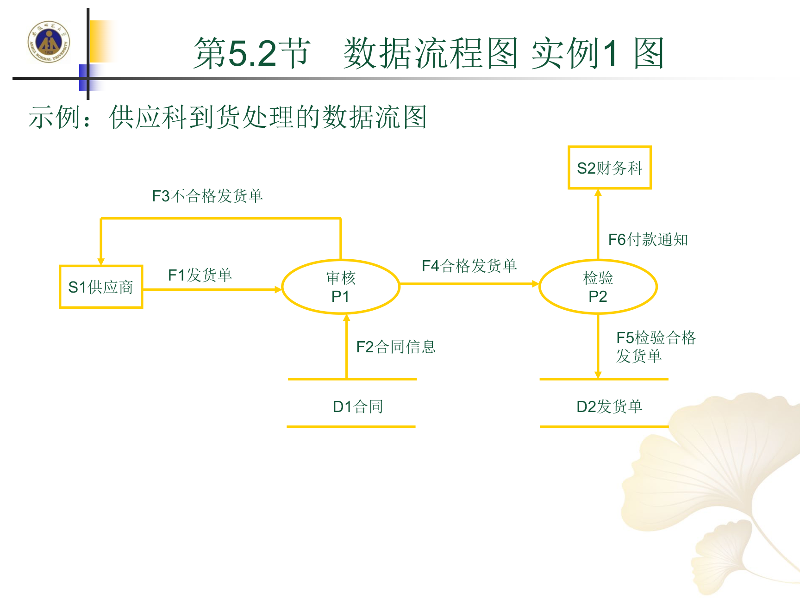
图5-5 供应科到货处理的数据流图（实例1）
（二）实例2：书店图书预订系统
问题定义：顾客将所填写订单交给书店营业员；首先对订单进行检查，不合格订单退给顾客，合格订单进入下一步操作；统计订单数，根据订单数和顾客情况将订单分类存贮为优先订单和正常订单两种；根据出版社各种要求处理订单——优先订单随时处理，正常订单定期处理，订单信息发送出版社。
绘制结果：顾客 —所填订单→ ①定单检查 —不合格订单→ 退回顾客；合格订单 → ②统计分类订单（依据订单数目、顾客情况）→ 分为正常订单、优先订单 → ③定期处理 / ④随时处理（依据出版社要求）→ 订单发送出版社。
（三）实例3：订货处理系统
业务描述：用户发来订货单，系统作以下处理：
1. 验收订货单：将不合格的订货单退还给用户，对合格订货单作以下处理；
2. 确定发货量：根据合格订货单和库存帐确定发货量，并分别进行3和4的相应处理；
3. 开发货单修改库存：若库存满足本次订货单的要求，则开发货单，修改库存、订货单存档、记应收帐，同时将发货单发给用户；
4. 暂存订货单：对于不满足库存的订货单，填写暂存订货单并存档；
5. 处理暂存订货单：采购部门向系统提供到货通知，系统则对照暂存订货单，将可重新发货的订货单交给3进行处理。
绘制结果：用户 —订货单→ ①验收订货单（不合格订单退回用户）；合格订货单 → ②确定发货量（查库存帐）→ ③开发货单修改库存（修改库存帐、订货单存档入订货单档案、记应收帐，发货单发用户）；未满足的订货单 → ④填写暂存订货单（存入暂存订货单）；采购部门 —到货单→ ⑤对照暂存订货单 → 可发货的订货单再交③处理。注意：本例中数据源和数据终点皆为用户。
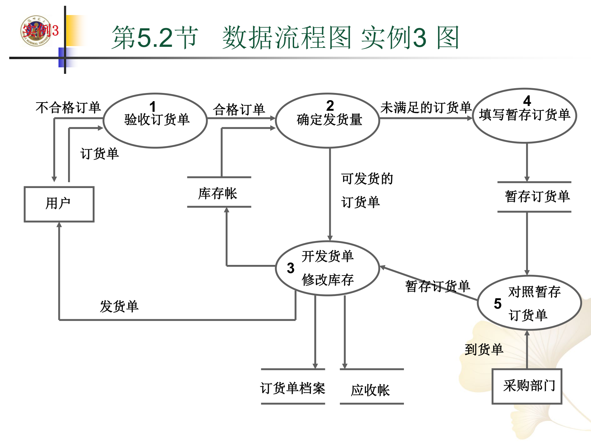
图5-6 订货处理系统的数据流图（实例3）
四、数据流程图的常见错误
【考点】绘制DFD时应避免以下几类错误：
1. 每个处理（加工）至少有一个输入数据流和一个输出数据流——数据源不能直接没有处理就流向数据终点（"没有输入"或"没有输出"的处理都不成立；数据源→数据终点中间未发生加工，毫无意义）；
2. 数据流必须要么从某个处理流出、要么流入某个处理，而不能直接从外部实体流向数据存储、不能直接在数据存储与数据存储之间流动、不能直接从数据存储流向数据终点等——图示的几种流动都是不合理的。
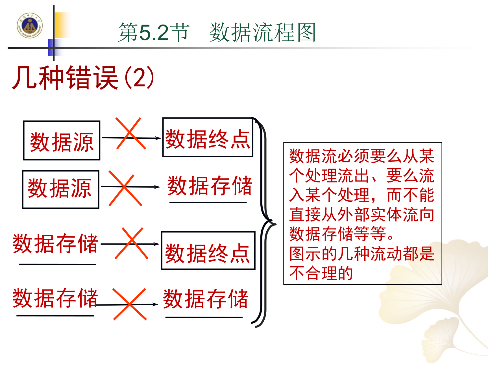
图5-7 数据流程图中几种不合理的流动（常见错误）
五、绘制数据流程图的原则和方法
（一）绘制数据流程图的原则
【考点】绘制数据流程图应遵循六条原则：
1. 识别系统的输入和输出；
2. 从输入端至输出端画数据流和加工，并同时加上数据存储；
3. 加工的分解"由外向里"进行分解；
4. 数据流的命名，名字要确切，能反映整体；
5. 各种符号布置要合理，分布均匀，尽量避免交叉线；
6. 先考虑稳定态，后考虑瞬间态。
（二）数据流程图的绘制方法
数据流程图的绘制一般采用层次数据流程图绘制方法。层次数据流程图的绘制采用"自顶向下，逐层分解"的基本方法。
【考点】绘制层次数据流程图的基本步骤：
1. 识别系统的输入和输出，画出顶层图；
2. 画系统内部的数据流、加工与文件，画出一级细化图；
3. 加工的进一步分解，画出二级细化图；
4. 依此：自顶向下，逐层分解；
5. 其它注意事项。
（三）绘制举例：工资系统数据流程图
业务描述：某公司手工管理工资系统中月末发工资的处理过程是：月末财务科根据已存档的上月工资发放清单和人事科送来的人员工资变动表，抄写本月工资发放清单中的各工资项目；然后根据总务科每月末出具的代扣水、电、煤气费的扣款数填入本月工资发放清单；最后计算出每个职工应发工资数和实发工资，并填入工资发放清单。
基本画法分两步：
1. 画系统的输入、输出：外部实体为人事科（输入工资变动项）、总务科（输入代扣项）；系统读取上月工资清单D1（上月工资项），产出本月工资清单D2（本月各工资项）。
2. 画系统的内部：将"工资处理系统"分解为四个加工——登记上月工资 → 登记变动工资 → 登记代扣项 → 计算工资，最终输出应发、实发工资，写入本月工资清单。
六、数据流程图的两种类型及检验优化
数据流程图有两种：一种是通过调查绘出的现行系统的数据流程图；另一种是对现行系统的数据流程图经过系统化分析和改进后的新系统的数据流程图。
【考点】为使数据流程图正确、完整，从而得到新系统的逻辑模型，绘制出数据流程图后，需要：
1. 检验数据流程图与业务流程图的一致性；
2. 检验数据流程图的一致性与完整性；
3. 对流程图进行优化，得到改进后的新系统的数据流程图；
4. 请有关管理人员、业务人员确认。
5.3 数据字典
一、数据字典的定义与作用
【考点】数据字典（DD，Data Dictionary）是用来对数据流程图中各个元素（不包括处理功能）进行具体描述和定义的工具。通过对数据流程图中的每一数据项、数据流、数据存储以及加工给出精确的定义，并将其按一定顺序排列起来，便组成了一本数据字典。它与数据流程图一起构成系统逻辑模型的重要组成部分。
数据字典的作用：数据流程图配以数据字典，就可以从图形和文字两个方面对系统的逻辑模型进行完整的描述。
二、数据字典的内容（四类条目）
【考点】数据字典主要是对数据流程图中的四个元素进行具体的定义：数据项、数据流、加工、数据存储。
（一）数据项条目：描述基本数据项（数据元素）属性
数据项指数据流程图中最基本的数据组成单位，也就是不能再分解的数据单位、不可分割的数据项。如库存管理系统中的数据项有：入出库单号、入库日期、原材料代码、原材料名称、计量单位、入库单价、入库数量、入库金额、出库单价、出库数量、出库金额、库存数量、库存金额、管理员代码、入库总量、入库总金额等。
数据字典中对数据项的描述内容主要包括：名称、类型、长度、合理取值范围、业务量、重要性程度、保密要求以及与其它数据的逻辑关系等。为了分析清楚数据的逻辑结构，对每一个数据项，须用数据字典条目详细描述出来。
示例——"入库单号"数据项条目：
- 数据项名：入库单号
- 数据项代码：RKDBH
- 类型：字符
- 长度：10
- 说明：第1位为R（入库单），2—7位为日期，8—10位为顺序号
- 备注：根据入库日期及先后顺序确定
（二）数据流条目：描述数据流属性
对数据流的描述内容主要包括：组成数据流的各个基本数据项和它的流向（生成、来源、去向、使用频率及有关的其它情况等）。如库存管理系统中的数据流包括：入库单、领料单、出库单、入库信息、出库信息、出入库统计表、库存统计表、ABC分析表、超储材料表。
示例——"入库单"数据流条目：
- 数据流名：入库单
- 数据流代号：F01
- 数据流组成：入库单号+入库日期+原材料代码+原材料名称+计量单位+入库数量+入库单价+入库金额
- 流量：20/天
- 来源：采购部门
- 去向：入库登记
- 说明：以"入库单"为数据流载体
（三）数据存储条目：描述数据存储（文件）属性
对数据存储的描述内容主要包括：数据存储的文件名、数据项组成、存储方式、存取频率等。如库存管理系统中的数据存储包括：入出库单文件、库存材料流水帐文件。
示例——"库存流水账"数据存储条目：
- 数据存储名：库存流水账
- 数据存储代号：D1
- 数据存储文件组成：入出库单号+入出库日期+原材料代码+原材料名称+计量单位+入出库数量+入出库单价+入出库金额+管理员代码
- 存储方式：顺序存储
- 存取频率：100/天
- 说明：以"入出库单号"为索引关键字
（四）数据处理（加工）条目
用来对数据流程图中的各个数据处理功能给予说明。数据处理应集中描述用户要求数据处理"做什么？"，包括：处理名称、输入数据、输出数据、激发条件、加工逻辑、优先级、执行频率和出错处理等。如库存管理系统中的数据处理包括：入库登记、查询库存量、出库登记、记账、入出库单文件增删改、库存查询、库存统计分析。
示例——"出库登记"条目：
- 数据处理名：出库登记
- 数据处理代号：P1-3
- 输入数据：领料单
- 输出数据：入出库单文件
- 处理逻辑：由库存管理员根据传递来的"领料单"确定出库量，将有关出库信息输入存储到入出库单文件中
- 说明：以"入出库单号"为索引关键字
三、处理逻辑的描述工具
运用数据字典虽然能反映数据处理功能的基本要求，但描述数据流程图中比较复杂的处理逻辑存在不清晰、易误解等缺点，因此，对于比较复杂的处理逻辑可以借助于其他一些工具来进行更为详细、易懂的描述说明。主要有：判断树（决策树）、判断表（决策表）、结构化语言。
（一）判断树
【考点】判断树采用树型结构来表示处理逻辑。从图形上可以一目了然地看清用户的业务在什么条件采取什么样的处理方式。其结构为：根 → 条件1、条件2……→ 行动或策略。
举例：加工——关于计算飞机机票折扣率的问题：
- 如果乘客订7—9月或12月的机票，并且订票量 ≤20 则折扣率为 5%；否则如果订票量 >20，则折扣率为 15%；
- 如果乘客订1—6月或10、11月的机票，并且订票量 ≤20，则折扣率为 20%；否则如果订票量 >20，则折扣率为 30%。
分析步骤：
1. 识别判断条件，并列出所有的条件及条件值：C1（旅游时间/机票时间）：7—9、12月 / 1—6、10、11月；C2（订票量）：≥20张 / <20张；
2. 建立条件组合数：两类条件，每类条件各有二种情况，共有 4 种组合；
3. 识别每个结果：A1 折扣5%、A2 折扣15%、A3 折扣20%、A4 折扣30%。
采用判定树表示：根"计算折扣量" → 条件1"7—9月、12月"与"1—6月、10、11月" → 条件2"订票量>20 / ≤20" → 结果分别为15%、5%、30%、20%。
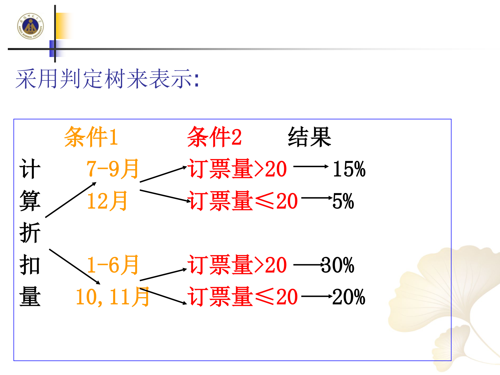
图5-8 判定树示例（计算机票折扣率）
（二）判断表
【考点】判断表用二维表格直观地表达具体条件、决策规则和应当采取的行动策略之间的逻辑关系。在条件较多、相应的决策比较多的情况下，考虑用判断表。
判定表结构（四个部分）：条件类别、条件组合、操作、操作结果（条件与条件组合在上部，操作与操作结果在下部，按"决策规则"分列）。
上述机票折扣问题用判断表表示如下：
条件/结果 | 规则1 | 规则2 | 规则3 | 规则4 |
C1：7—9，12月 | Y | Y | N | N |
C2：订票量≤20 | Y | N | Y | N |
折扣5% | √ | |||
折扣15% | √ | |||
折扣20% | √ | |||
折扣30% | √ |
再例——根据欠款时间和库存量发货：
1. 欠款时间 ≤30 天：库存量 ≥ 需求量，立即发货；库存量 < 需求量，先按库存发货，进货后再补发；
2. 欠款时间 >30 天且 ≤100 天：库存量 ≥ 需求量，先付款再发货；库存量 < 需求量，不发货；
3. 欠款 >100 天：通知先付款。
该例可分别用判定树（以欠款时间为第一层条件、库存量为第二层条件，末端为各行动方案）和判定表（条件为欠款时间三档与库存量两种情况，操作为立即发货、先按库存发货后补发、先付款再发货、不发货、通知先付款）来表达。
（三）结构化语言
【考点】结构化语言采用三种基本逻辑结构来描述处理逻辑，这三种基本逻辑结构是：顺序结构、循环结构和选择结构。结构化语言采用很简洁的词汇来表述处理逻辑，没有严格的语法，可以用英语表达，也可以用汉语表达。一般形式如下：
> 如果 条件1
> 则 语句A
> 否则 语句B
允许使用嵌套结构。
例：将学生考试成绩由百分制转换为优、良、中、差四级分制，用结构化语言表示：
> 如果 95—100分 则 成绩为优
> 否则 如果 75—94分 则 成绩为良
> 否则 如果 60—74分 则 成绩为中
> 否则 成绩为差
5.4 系统分析说明书
【考点】系统分析说明书（系统分析报告）的内容包括四大部分：
一、引言部分
包括名称、开发目标、主要功能、开发背景等。
二、现行系统概况
- A. 现行系统现状详细调查说明：包括组织机构图，系统目标、功能一览表、业务流程图、业务流量以及存在的薄弱环节，数据，主要算法等。
- B. 现行系统分析：用户需求及主要存在的问题等。
三、新系统逻辑方案
1. 新系统目标（要求具体）；
2. 新系统逻辑模型（数据流程图、数据字典、实体关系图（E-R图））；
3. 新系统功能分析（改进、补充、优越之处）；
4. 新系统在各个处理环节上采用的管理方法、模型；
5. 与新系统相配套的管理制度和运行体制的建立。
四、下阶段工程进度计划
即对下一阶段（系统设计）的工程进度做出计划安排。
第六章 旅游管理信息系统开发——系统设计
旅游管理信息系统的开发过程依次为：系统规划 → 系统分析 → 系统设计 → 系统实施 → 系统运行维护。本章处于系统分析之后、系统实施之前，是承上启下的关键环节。
第五章"系统分析"解决的是系统"做什么"的问题，产出的是系统的逻辑模型（数据流程图、数据字典等，采用结构化分析方法）；本章"系统设计"解决的是系统"怎么做"的问题，产出的是系统的物理模型（模块结构图等，采用结构化设计方法）。本章主要内容包括：系统设计原则、结构化设计、代码设计、数据库设计、用户界面设计、系统设计说明书。
6.1 系统设计原则
一、系统设计阶段的主要工作内容
系统设计阶段的主要工作内容包括以下四个方面：
- 总体设计：确定系统的总体结构与模块划分；
- 详细设计：对每个模块的代码、数据库、输入输出、处理流程等进行具体设计；
- 制定系统实施进度和计划；
- 编制系统设计说明书。
二、系统设计的原则
【考点】系统设计应遵循以下五条原则：
- 效率性：系统应具有较高的处理效率；
- 可靠性：系统运行要稳定可靠；
- 准确性：系统处理结果要准确无误；
- 可维护性：系统应便于日后的维护与修改；
- 经济性：系统开发与运行的成本要经济合理。
6.2 结构化设计
一、结构化设计方法的基本思想
【考点】结构化设计方法的基本思想是：以逻辑功能设计和数据流关系为基础，根据数据流程图和数据字典，借助设计准则和图标工具，通过自上而下、自下而上的方式，把系统划分成模块。
二、结构化系统设计的优点
- 利用结构化系统划分的方法，可以将复杂的系统分解成较小的单元（模块），便于进行系统设计；
- 提供系统设计的参考准则，可以提高信息系统的品质；
- 易于进行系统的维护、调试和测试等；
- 依据结构化系统设计的步骤进行设计，可以缩短系统的整体开发周期，提高开发效率。
三、模块的概念与四要素
模块是组成目标系统逻辑模型和物理模型的基本单位，其特点是可以组合、分解和更换。
【考点】模块应具备的四个要素：
1. 输入和输出；
2. 处理功能；
3. 内部数据；
4. 程序代码。
四、软件结构的描述工具：功能结构图与模块结构图
软件结构的描述工具有两种：功能结构图和模块结构图。
对比项 | 功能结构图 | 模块结构图 |
定义 | 按功能从属关系画成的图表，图中每一个框表示一个功能模块 | 用于描述系统模块结构的图形工具，能直观反映块内联系和块间联系等特性 |
组成 | 功能模块框 | 三种成分：模块、调用、数据 |
表达能力 | 不能表达各功能之间的数据传送关系 | 能反映模块之间的调用关系及数据/控制信息的传递 |
【考点】模块结构图由三种成分组成：模块、调用、数据。其中调用关系用箭头表示，箭头旁边可标注传递的数据信息和控制信息。例如"查学生档案"模块调用"读学生文件"模块时，传入"学生号"（数据信息），返回"学生档案数据"（数据信息）或"无此学生"（控制信息）。
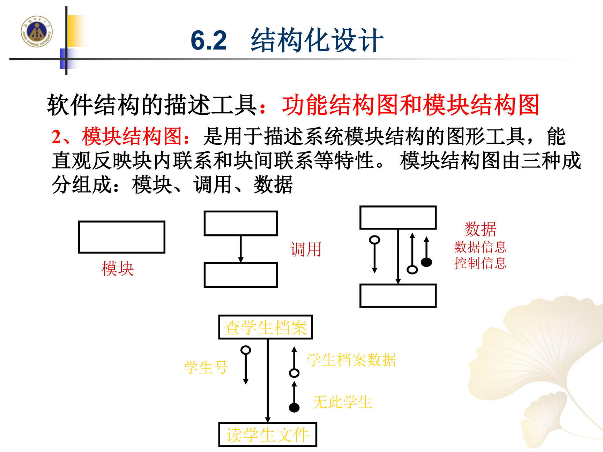
图6-1 模块结构图的三种成分及符号（模块、调用、数据）
（一）模块调用的三种形式
1. 直接调用（顺序调用）：一个模块可直接调用一个下层模块，也可直接调用多个下层模块。调用者称为"调用模块"（甲），被调用者称为"被调用模块"（乙）。
2. 选择调用：根据判断条件决定模块甲是否调用模块乙；或根据判断条件决定模块甲调用乙、丙、丁三个模块中的哪一个模块。
3. 循环调用：根据判断条件决定模块甲是否循环调用模块乙，直到条件不成立时停止使用；也可根据判断条件决定模块甲是否循环调用乙、丙、丁三个下层模块，每循环一次要调用三个下层模块，直到条件不成立时停止调用。
例如某财务系统中"审核凭证"处理过程的模块结构图：顶层"凭证审核"模块下分为"输入凭证号""读取数据""审核""输出审核结果"等下层模块，模块间传递凭证号、数据、审核结果等信息。
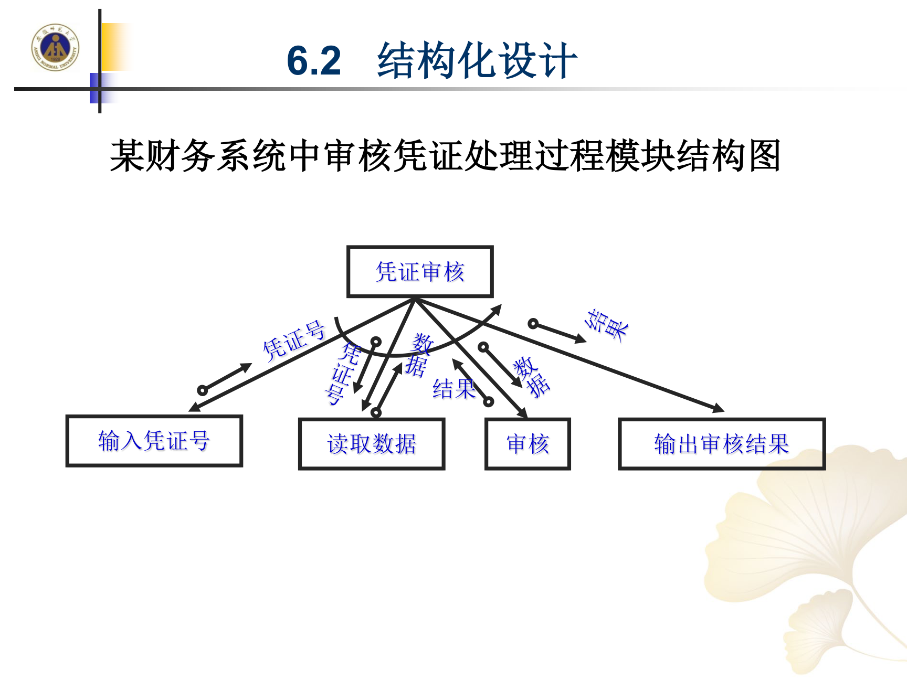
图6-2 某财务系统审核凭证处理过程模块结构图
五、模块分解设计的基本原则
【考点】模块分解设计的基本原则有三条：
1. 自顶向下设计原则；
2. 模块独立性原则；
3. 高聚合、低耦合，影响范围在控制范围之内原则（要求低耦合的原因：一个模块出现错误，容易影响另一个模块）。
六、模块的聚合
聚合是度量模块功能强度的指标，主要表现在模块内部各组成部分为了执行处理功能而组合在一起的相关强度。
聚合包括七种：功能聚合、顺序聚合、数据聚合、过程聚合、时间聚合、逻辑聚合、偶然聚合。按聚合性由弱到强（即模块独立性由弱到强、功能由分散到单一）排列为：偶然聚合 → 逻辑聚合 → 时间聚合 → 过程聚合 → 数据聚合 → 顺序聚合 → 功能聚合。
【考点】七种聚合的含义：
- 偶然聚合：模块内各部分间无联系，即"做杂事"，聚合性最弱。
- 逻辑聚合：把几种相关功能（逻辑上相似的功能）组合在一个模块内，每次调用由传给模块的参数确定执行哪种功能。例如E、F、G逻辑功能相似，组成新模块EFG，模块内部有逻辑分支和公用代码段。
- 时间聚合：模块完成的功能几乎在同一时间内执行，这些功能只因时间因素关联在一起。例如：初始化系统模块、系统结束模块、紧急故障处理模块等均是时间性聚合模块。
- 过程聚合：模块内部各组成部分的动作彼此间无关系，但必须以特定的顺序执行。例如账务处理系统分为账务处理和账务生成两个模块，两模块同时需要查询功能，则将查询抽取为一个独立模块。
- 数据聚合：模块内各部分使用相同的输入数据，或产生相同的输出结果。例如"产生职工工资报表并计算平均工资"模块：各部分都使用职工工资记录，分别产生职工工资报表和平均工资。
- 顺序聚合：一个模块能完成多个操作，前一个操作处理的输出数据是下一个操作处理的输入数据，模块中各成分的工作是有次序的，各成分的关系也较紧密。
- 功能聚合：一个模块内的所有成分的处理动作全部为完成某个功能，且只执行一个功能，缺一不可，称为功能聚合，聚合性最强。如：读凭证文件、打印发票等。
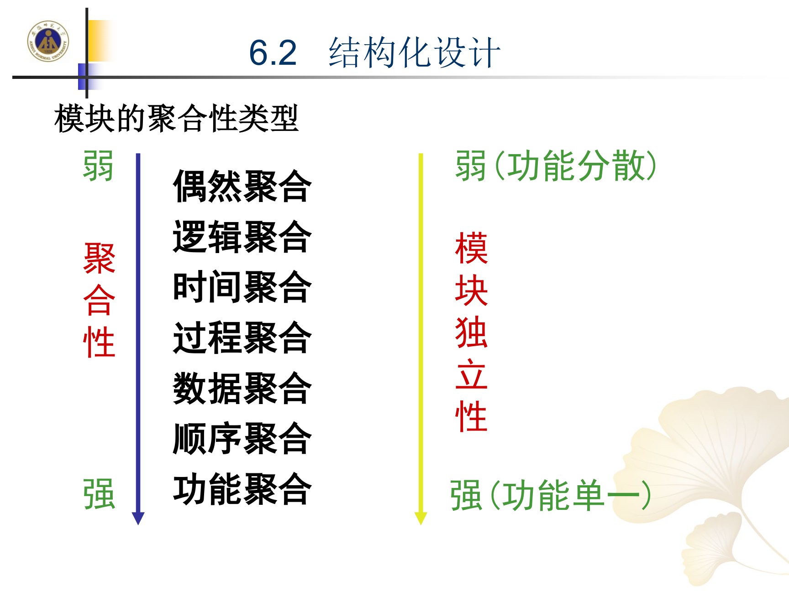
图6-3 模块的聚合性类型（聚合性由弱到强与模块独立性的关系）
各种块内聚合形式的特性比较：
块内聚合（联结形式） | 可修改性 | 可读性 | 联系程度 |
功能聚合 | 好 | 好 | 高（好） |
顺序聚合 | 好 | 好 | 高 |
数据聚合 | 中 | 中 | 中 |
过程聚合 | 中 | 中 | 中 |
时间聚合 | 不好 | 不好 | 中 |
逻辑聚合 | 最坏 | 最坏 | 不好 |
偶然聚合 | 最坏 | 最坏 | 低（最坏） |
七、模块的耦合
耦合用于衡量模块之间的关联度。耦合度是模块间的联结关系，衡量不同模块间的相互依赖的紧密程度。耦合的强弱取决于：
- 模块间接口的复杂程度；
- 进入或访问一个模块的入口点；
- 通过接口的数据。
耦合度越高，模块独立性越弱。 耦合程度可大致分为：无耦合（没有依赖关系）、松散耦合（有少量依赖关系）、紧密耦合（有很多依赖关系）。
影响耦合度强弱的因素有：
- 一模块对另一模块的引用；
- 一模块向另一模块传递的数据量；
- 一模块施加到另一模块的控制的数量；
- 模块间接口的复杂程度。
【考点】模块间耦合的三种类型（耦合性由低到高，模块独立性由强到弱为：数据耦合 → 控制耦合 → 内容耦合）：
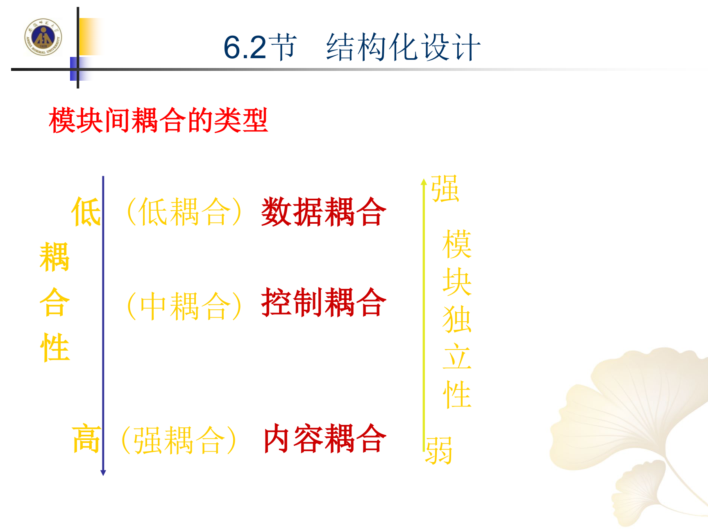
图6-4 模块间耦合的类型（耦合性与模块独立性的关系）
1. 数据耦合（低耦合）：一模块调用另一模块时，被调用模块的输入、输出都是简单的数据，属松散耦合。它是一种理想的耦合，耦合度最低，因为一个模块与其他模块之间的联系全部是数据联系。例如"开发货单"模块调用"计算金额"模块，传入单价、数量，返回金额。
2. 控制耦合（中耦合）：两个模块之间除了传递数据信息外，还传递控制信息，模块间的这种联结方式称为控制耦合。例如"查职工档案"调用"读人事文件"时，除传递职工号、档案数据外，还传递"无此职工"这一控制信息，用来表示传送来的职工号有误；又如"获得库存记录"调用"检索库存记录"时传递"无此库存记录"错误信息并打印。
3. 内容耦合（强耦合）：一个模块与另一个模块的内部属性（程序或内部数据）直接发生联系。内容耦合的两个模块间是病态联结，在修改其中一个模块时，将直接影响到另一个模块，产生波动现象，影响整个系统。因此，在系统设计时，应完全避免内容耦合。最不好的是内容耦合形式！
三种块间耦合方式的特性比较：
块间耦合方式 | 可读性 | 错误扩散能力 | 可修改性 |
数据耦合 | 好 | 弱 | 好 |
控制耦合 | 中 | 中 | 中 |
内容耦合 | 差 | 强 | 不好 |
【考点】模块化设计对耦合度的要求：耦合是影响系统复杂程度和设计质量的重要因素，应建立模块间耦合度尽可能松散的系统。模块必须存在耦合，但要选择适当的耦合类型。原则是：尽量使用数据耦合，少用控制耦合，坚决避免使用内容耦合。
八、耦合、聚合与模块独立性的关系
聚合与耦合密切相关：
- 同其他模块强耦合的模块意味着弱聚合；
- 强聚合模块意味着与其他模块间松散耦合。
【考点】设计目标：力争强聚合、弱耦合。
6.3 代码设计
一、代码设计的原则
【考点】代码设计应遵循六条原则：
1. 唯一性；
2. 扩展性；
3. 实用性；
4. 系统性；
5. 简短性；
6. 标准化。
二、代码的种类
（一）代码的符号表示形式
代码中代码的符号表示形式一般有三种：
- 数字型；
- 字母型；
- 数字字母混合型。
（二）代码的结构形式
1. 顺序码：按数据的某种顺序（如字母、时间、大小等）依次地连续地进行编码。例如系别代码：中文系01、数学系02、物理系03……再如学号、凭证号等。
2. 分组码（块码）：它将代码分为若干组（类、级、区间等），在组（类、级、区间等）内按顺序编码；按实体的从属层次关系，将代码分成若干组。如：102 01。
- 十进制码：当实体的数量不能预先估计时，较易采用。如：631 汽车零件；631.1 小汽车零件；631.11 国产小汽车零件；631.12 进口小汽车零件。
- 特征码：特征码和层次码的区别在于它在各组（类、级、区间等）之间没有从属关系。如钢材的编码"2 1 3 01"：分别表示产地（1—国产，2—进口）、规格、加工方式、种类。
3. 助记码：用代表名称或规格等的文字与数字组合，直接作为代码的一部分，便于联想和记忆。如：TV—C—20。
4. 区间码：将代码对象从规定号起至规定号止。例如 100~399 表示企业管理人员。
三、校验码
校验码是在原代码基础上，加上一位代码（称校验位或校验码），使其成为代码的一部分，可用来检查输入错误。可检查的错误类型包括：
- 抄写错误：如"1983"写成"1903"；
- 移位错误：如"1983"写成"1938"；
- 双重移位错误：如"1983"写成"1389"；
- 随机错误。
我国身份证号码中的最后一位即校验位。
【考点】校验位的计算步骤（示例：给代码"12345"设置校验位）：
1. 取权：原代码 1 2 3 4 5，对应权数 6 5 4 3 2（权数可取自然数、几何级数等）；
2. 计算加权和：6+10+12+12+10 = 50；
3. 取模：以模除加权和。模为11，则 50/11 = 4 余 6；
4. 取模和余数之差，得到校验位（校验码）：11 − 6 = 5。
则加上校验位后的代码为：123455。
验证：若误写为 1 2 4 3 5（5为校验位），权为 6 5 4 3 2，加权和 = 6+10+16+9+10 = 51；51/11 = 4 余 7，7 ≠ 5（11−5=6 的余数不符），则可推断输入错误。
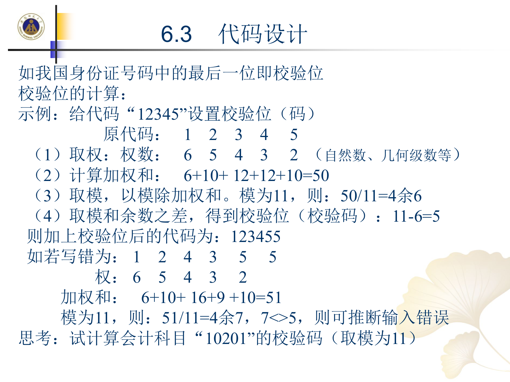
图6-5 校验位（校验码）计算示例：为代码12345设置校验位
身份证号码校验示例：对 34052419800101001（17位），按公式 ∑(Ai×Wi) mod 11 计算，其中 i 表示号码字符从右至左包括校验码在内的位置序号，Ai 表示第 i 位置上的号码字符值，Wi 表示第 i 位置上的加权因子（从左至右各位加权因子为 7、9、10、5、8、4、2、1、6、3、7、9、10、5、8、4、2）。计算得 ∑(Ai×Wi) = 189，189 mod 11 = 2。余数与校验码对照关系为：余数0→1、1→0、2→X、3→9、4→8、5→7、6→6、7→5、8→4、9→3、10→2。故得出完整号码：34052419800101001X。
课后思考：试计算会计科目"10201"的校验码（取模为11）。
6.4 数据库设计
一、数据存储设计
在MIS中，涉及大量的数据和信息，其中有些数据按设计要求需要进行保存、存储起来。
数据存储设计即数据文件设计。文件是存放系统中要处理和维护的数据的基本方式。文件设计就是根据文件的使用要求、处理方式、存储量、数据的活动性以及硬件设备的条件等，合理地确定文件类别，选择文件介质，决定文件的组织方式和存取方法。
二、数据库设计的三个阶段
数据模型主要有：层次模型、网状模型、关系模型。
【考点】数据库设计分为三个阶段：概念结构设计、逻辑结构设计、物理结构设计。
1. 数据库概念结构设计
- 基础：数据流程图、数据字典；
- 方法：实体—联系法（也称 E—R法）；
- 工具：E—R图。
2. 数据库逻辑结构设计：即将概念结构（模型）转化为某个DBMS所能接受的形式，如关系型。在关系型下，数据库逻辑结构设计即建立关系模式。例如：
- 供应商（供应商编码，名称，电话，地址，……）
- 材料（材料编码，名称，单位，单价，……）
- 供应（供应商编码，入库单号）
- 部门（部门编码，名称，电话，经办人，……）
3. 数据库物理结构设计：选择合适的存储结构和存取方法。
- 存储结构：库文件组织形式、存储介质分配；
- 存取方法：存取路径，确定如何建立索引。例如，应把哪些域作为次码建立次索引，建立单码索引还是组合索引，建立多少个为合适，是否建立聚集索引等。
6.5 用户界面设计
一、基本要求与内容
- 基本要求：友好、用户接受能力、信息表现一致性、提供学习；
- 包括：输入方式、输入输出界面；
- 输入方式有三种：脱机输入、机器读入、人机交互。
【考点】用户界面设计遵循的原则：
1. 操作简单容易；
2. 表示的合理性；
3. 表示的一致性；
4. 输入的容错性。
二、输入校验
错误的类型：
- 数据内容出错的校验：如科目错、数量错等；
- 数据多余或不足的校验：如必须输入的内容、重复输入内容等。
校验方法：
- 重复校验；
- 数据类型校验；
- 逻辑校验：如月份；
- 界限校验：如单价 > 0；
- 平衡校验：如借贷平衡、小计与总计相等。
三、用户界面的设计方式
用户界面的设计方式包括：菜单方式、会话管理方式、操作提示方式、操作权限管理方式。
6.6 系统设计说明书
【考点】系统设计说明书是：
- 系统设计阶段的主要成果；
- 新系统的物理模型；
- 系统实施的主要依据。
系统设计说明书的组成：引言、系统设计内容、新系统实施计划。其中系统设计内容包括：实施方案总计划（总体设计）、模块设计、界面设计说明、数据库设计、代码设计等。
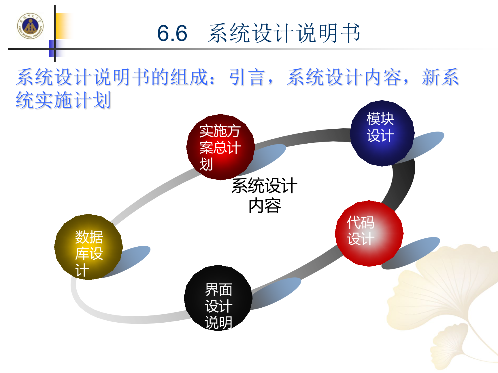
图6-6 系统设计说明书的组成
第七章 旅游管理信息系统开发——系统实施
本章内容包括四节：系统实施概述、程序设计、系统测试、系统转换。系统实施是旅游管理信息系统开发过程（系统规划→系统分析→系统设计→系统实施→系统运行维护）中继系统设计之后的阶段。第六章系统设计编制出系统设计说明书（新系统的物理模型）之后，本章要解决的问题就是如何把纸面上的物理模型真正在计算机上实现出来，即把"物理模型"变成"实际运行的系统"。这一章以"了解为主"，重点是知道系统实施要做什么、系统测试是什么、系统转换有哪几种方式。
7.1 系统实施概述
【考点】系统实施指的是将系统设计阶段的结果在计算机上实现的过程，即将系统的物理模型转换成实际运行系统的过程。
一、系统实施的准备
系统实施不是编写程序那么简单，在正式开展工作之前首先要做好组织、人员和数据三方面的准备工作，主要包括：
1. 成立系统实施领导小组：为实施工作提供组织保障，统一领导和协调实施过程中的各项事务；
2. 人员的培训：对将来使用和管理系统的人员进行培训；
3. 数据准备：为新系统运行准备所需的各类基础数据。
二、系统实施的主要任务
【考点】系统实施的主要任务包括四项：
1. 硬件平台的构建：硬件平台是系统运行的物质基础。构建硬件平台时要综合考虑三个因素——
- 性价比：在满足系统需求的前提下追求性能与价格的合理匹配；
- 可扩充性：硬件应具备一定的扩展余地，以适应今后业务增长和系统升级的需要；
- 供应商的售后服务和技术支持：硬件设备的长期稳定运行离不开供应商的服务保障。
2. 程序设计：按照系统设计说明书编写程序，是系统实施阶段的核心工作（详见7.2节）；
3. 系统的调试与测试：对编好的程序进行调试和测试，发现并改正错误（详见7.3节）；
4. 新旧系统转换：完成从旧系统到新系统的切换，使新系统正式投入运行（详见7.4节）。
7.2 程序设计
一、程序设计步骤
程序设计按以下四个步骤进行：
1. 熟悉开发环境：编程人员首先要熟悉所选用的开发工具与运行环境；
2. 合理分配编程任务：按照模块划分，把编程任务合理分配给各编程人员；
3. 编写程序：依据系统设计说明书逐个模块地编写程序代码；
4. 程序测试：对编写完成的程序进行测试，检查其是否符合设计要求。
二、程序设计方法
程序设计方法主要有两大类：
1. 结构化程序设计方法：与结构化系统分析、结构化系统设计相配套的传统方法；
2. 面向对象程序设计方法：以对象为基本单位的程序设计方法。
三、程序设计质量的指标
【考点】衡量程序设计质量的指标为四个：可靠、规范、可读、可维护。即程序首先要运行可靠、结果正确；其次书写要规范；再次要便于他人阅读理解；最后要便于日后的维护和修改。
四、程序设计的要求
为达到上述质量指标，程序设计应满足以下五点要求：
1. 书写格式要有规律：程序的书写格式（如缩进、对齐）要规范统一；
2. 合理命名变量：变量命名应见名知义；
3. 增加程序注释：通过注释提高程序的可读性；
4. 输入输出要一目了然：程序的输入、输出设计要清晰明了；
5. 效率：程序运行要讲求效率。
7.3 系统测试
一、系统测试概述
【考点】系统测试也称系统调试，它是指在计算机上用各种可能的数据和操作条件对程序进行试验，找出可能存在的问题并加以修改，使其完全符合设计要求的过程。
系统测试是保证系统质量和可靠性的关键步骤，是对系统开发过程中的系统分析、系统设计和系统实施的最后复查。
【考点】系统测试的目的：希望能以最少的人力和时间发现潜在的各种错误和缺陷。出于这个目的，系统测试不是要证明程序无错，而是要精心选取那些易于发生错误的测试数据（测试用例），以十分挑剔的态度，去寻找程序的错误。
二、系统测试中发现的错误类型
系统测试中可能发现的错误包括：
- 系统错误；
- 过程错误：运算错误、初始过程错误、逻辑错误；
- 功能错误：对功能有误解；
- 编码错误；
- 数据错误。
三、系统测试的基本原则
【考点】系统测试时应遵循以下基本原则：
1. 测试工作应避免由原来开发软件的个人或小组承担，测试工作应由专门人员来进行；
2. 测试用例不仅要确定输入数据，而且要根据系统功能确定预期输出结果，将实际输出结果与预期输出结果相比较就能发现程序是否有错误；
3. 设计测试用例不仅要包括有效合理的输入数据，也要包含不合理、无效的输入数据。不能忽略对异常、不合理、意想不到的情况进行测试，而这些可能就是隐患；
4. 在测试程序时，不仅要检查程序是否做了该做的事，还要检查程序是否做了不该做的事；
5. 应妥善保存测试计划和测试用例；
6. 发现错误越多，潜在错误越多。
测试用例设计示例（成绩判定程序）：程序输入学生成绩 score，按分数段输出"优（90~100）、良（80~89）、中（70~79）、及格（60~69）、不及格（60以下）"，输入超出 0~100 范围时提示"学生学习成绩输入超范围"。
```text
set talk off
clear
input "请输入学生成绩：" to score
if score<=100.and.score>=0
if score<=100.and.score>=90
?"成绩：优"
else
if score<90.and.score>=80
?"成绩：良"
else
if score<80.and.score>=70
?"成绩：中"
else
if score<70.and.score>=60
?"成绩：及格"
else
?"成绩：不及格"
endif
endif
endif
endif
else
? "学生学习成绩输入超范围"
endif
return
```
针对该程序设计的测试用例为：-5、87、77、67、57、97、107、0、60、70、80、90、100、空数据。这组用例同时覆盖了有效等价类（各分数段）、无效等价类（-5、107、空数据）和边界值（0、60、70、80、90、100）。
四、系统测试过程
系统测试过程包括五个环节：制定测试计划 → 编制测试大纲 → 设计和生成测试用例 → 实施测试 → 生成测试报告。
五、软件测试方法
（一）人工测试
人工测试采用人工方式进行，目的在于检查程序的静态结构，找出编译不能发现的错误。人工测试又称代码复审，即通过人工阅读程序，查找错误。人工测试主要有三种方法：
- 个人复查：由程序员本人对自己的程序进行检查；
- 走查：由测试人员以人工模拟计算机执行的方式，沿着程序逻辑走一遍，从中发现错误；
- 会审：由多人组成小组，共同对程序进行会审，集体查找错误。
（二）黑盒测试
【考点】黑盒测试也称功能测试、数据驱动测试。它将软件看作不透明的黑盒子，在完全不考虑程序的内部结构和处理过程的情况下，检查系统的基本特征。
黑盒测试的任务（检查内容）：
1. 是否有不正确或遗漏的功能；
2. 界面上是否正确处理输入数据，产生正确输出结果；
3. 访问外部信息是否有错；
4. 性能上是否满足要求；
5. 初始化和终止错误。
黑盒测试中常用的测试用例设计方法有：
- 等价类划分测试法：把程序所有可能的输入数据划分成若干部分（等价类），然后从每一部分中选取少数有代表性的数据作为测试用例。等价类又分为有效等价类（合理、有效的输入数据集合）和无效等价类（不合理、无效的输入数据集合），设计测试用例时两者都要覆盖。例如上述成绩判定程序中，0~100的各分数段是有效等价类，小于0、大于100以及空数据则属于无效等价类。
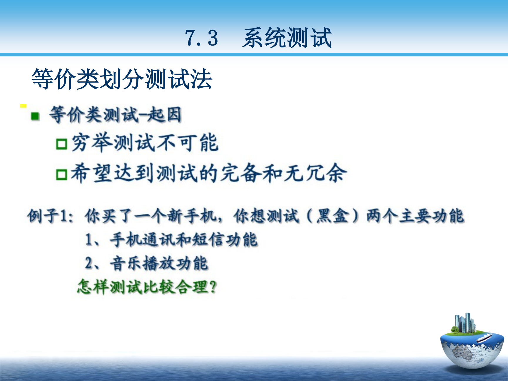
图7-1 等价类划分测试法示意图
- 边界值分析测试法：实践表明，程序最容易在处理边界情况时发生错误，因此应专门选取刚好等于、刚刚大于或刚刚小于边界值的数据作为测试用例。例如上述成绩判定程序中选取 0、60、70、80、90、100 这些各分数段的边界成绩作为测试用例，即属于边界值分析。
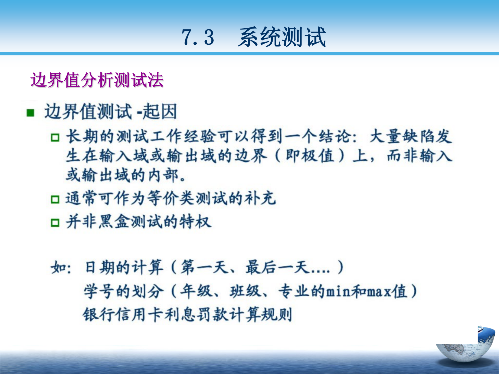
图7-2 边界值分析测试法示意图
（三）白盒测试
【考点】白盒测试又称结构测试、路径测试等。它将软件看成一个透明的白盒子，按照程序内部结构和逻辑结构，对程序的逻辑路径和过程进行测试，检查是否与设计相符。
白盒测试的逻辑覆盖标准包括：语句覆盖、判定覆盖、条件覆盖、判定-条件覆盖、条件组合覆盖。
（四）黑盒测试与白盒测试对比
对比项 | 黑盒测试 | 白盒测试 |
别名 | 功能测试、数据驱动测试 | 结构测试、路径测试 |
对程序的看法 | 不透明的黑盒子 | 透明的白盒子 |
测试依据 | 不考虑内部结构和处理过程，检查系统基本特征 | 按照程序内部结构和逻辑结构 |
测试对象 | 逻辑路径之外的功能、界面、外部信息访问、性能、初始化与终止 | 程序的逻辑路径和过程，检查是否与设计相符 |
常用方法 | 等价类划分测试法、边界值分析测试法 | 语句覆盖、判定覆盖、条件覆盖、判定-条件覆盖、条件组合覆盖 |
7.4 系统转换
一、转换前的准备工作
系统测试通过之后，并不能立刻把新系统投入运行，还要做好转换前的准备工作。转换前的准备工作有四项：
1. 数据整理和准备：整理旧系统中的历史数据，并按照新系统的要求进行转换和准备；
2. 文档准备：准备好与系统转换和运行有关的各种文档资料；
3. 人员培训：培训对象包括事务管理人员、系统操作员、系统维护人员三类人员；
4. 系统初始化：完成新系统正式运行前的初始化设置工作。
二、系统转换方式
【考点】系统转换指由旧的系统向新的系统切换。此时新系统开始正式运行，同时旧系统停止运行。系统转换是系统实施阶段的最后一项工作，转换方式选择得当与否，直接关系到新系统能否平稳接替旧系统投入运行。
系统转换有以下几种方式：
（一）直接转换
直接转换是在确定系统运行准确无误时，立即启用新系统，终止老系统运行。
- 特点：这种方式可节省人员和设备费用，一般适用于一些处理过程不太复杂、数据不很重要的场合。
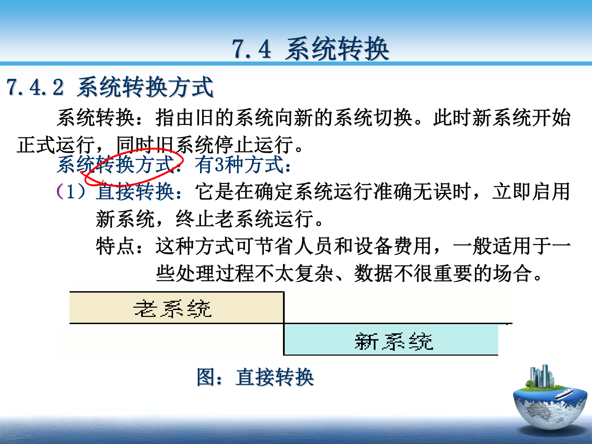
图7-3 直接转换方式示意图
（二）平行转换
平行转换又称并行转换，它是指新老系统并行工作一段时间，经过一段时间的考验后，新系统正式替代老系统。
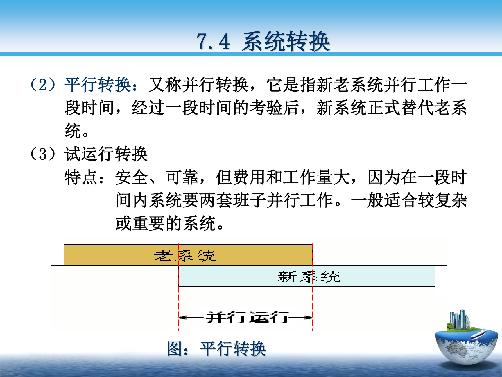
图7-4 平行转换方式示意图
（三）试运行转换
试运行转换是在一段时间内系统要两套班子并行工作。
- 特点：安全、可靠，但费用和工作量大，一般适合较复杂或重要的系统。
（四）逐步转换
逐步转换又称分阶段转换，它是在新系统全部投入正式运行之前，一部分一部分地代替老系统。如会计信息系统各子系统的分阶段转换。
- 特点：该种方式既保证了可靠性，又不至于费用太大，较适合大系统。
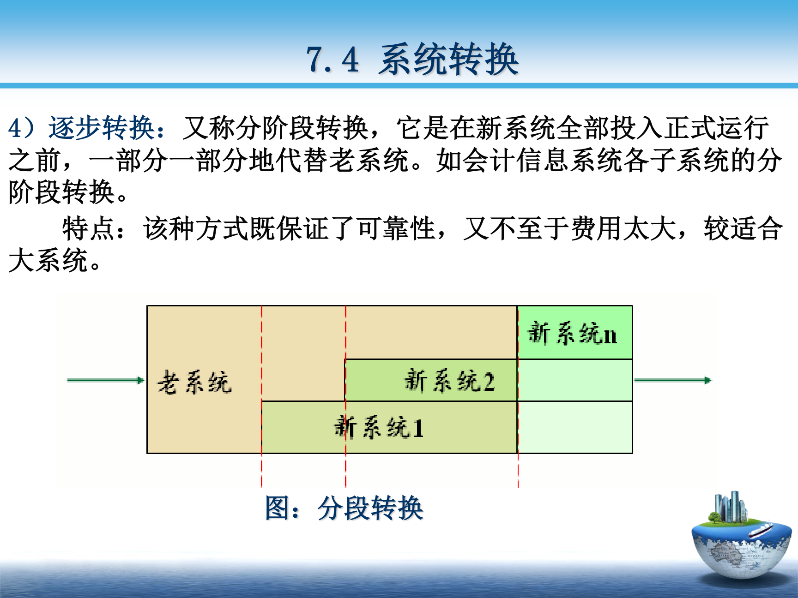
图7-5 分段（逐步）转换方式示意图
【考点】四种系统转换方式对比：
转换方式 | 别称 | 含义 | 特点 | 适用场合 |
直接转换 | — | 确定系统运行准确无误时，立即启用新系统，终止老系统运行 | 可节省人员和设备费用，但风险较大 | 处理过程不太复杂、数据不很重要的场合 |
平行转换 | 并行转换 | 新老系统并行工作一段时间，经过考验后新系统正式替代老系统 | 新老系统同时运行，便于对比验证 | 需要平稳过渡的系统 |
试运行转换 | — | 一段时间内系统两套班子并行工作 | 安全、可靠，但费用和工作量大 | 较复杂或重要的系统 |
逐步转换 | 分阶段转换 | 新系统全部投入正式运行之前，一部分一部分地代替老系统 | 既保证了可靠性，又不至于费用太大 | 大系统（如会计信息系统各子系统分阶段转换） |
第八章 旅游管理信息系统开发——系统维护、评价与运行管理
本章内容包括三节：系统维护、系统评价、系统运行管理。旅游管理信息系统经过系统实施阶段投入正式运行之后，并不意味着开发工作的终结。在漫长的运行期内，系统所处的内外环境会不断变化，用户也会不断提出新的要求，因此还需要持续开展系统维护、系统评价与系统运行管理，才能保证系统长期、稳定、安全地发挥作用。本章以了解为主。
8.1 系统维护
一、系统维护的内容
【考点】系统维护的对象涉及软件、数据、编码和硬件四个方面，其内容包括：
- 软件维护：根据实际需要，修改部分程序和相关的文档资料。软件维护是系统维护中最主要的工作，程序交付运行后仍可能暴露出各种问题，需要通过修改程序来加以解决，并且修改程序的同时还要同步修改相关的文档资料，保持程序与文档的一致。
- 数据维护：针对企业等单位所处理数据内容等的变化而对系统数据文件的内容和结构所进行的增加、合并、修改和删除等维护性工作。
- 编码维护：指针对企业等单位的数据处理需求而对有关编码所进行的修改、扩充、更新等。当业务发生变化（如新增部门、新增产品类别）时，原有代码体系就需要相应维护。
- 硬件维护：为保证计算机网络设备等硬件系统的正常运行，而对机器设备所进行的保养、维修、更新等工作。
二、系统维护的类型
【考点】按照维护工作的性质，系统维护分为四种类型：正确性维护、适应性维护、完善性维护、预防性维护。
- 正确性维护：改正在系统开发阶段已发生而在系统测试阶段未能被发现的错误。系统测试不可能发现程序中的所有错误，这些遗留下来的错误在系统运行过程中会逐渐暴露，需要通过正确性维护加以改正。
- 适应性维护：为适应环境的变化及克服本身存在的不足对系统进行的调整和修改。例如操作系统升级、硬件更新、业务范围变化等外部环境变化，都要求系统作出适应性调整。
- 完善性维护：为了扩充软件的功能或满足用户对系统提出的新的性能要求，提高原有软件的可维护性而对软件开展的修改和再开发活动。
- 预防性维护：为了改进应用软件的可靠性和可维护性，主动增加新的功能，以适应应用的变化。预防性维护的特点在于"主动"，即不等问题暴露就预先采取措施。
各种维护的工作量占比（由高到低）：完善性维护约占50%，适应性维护约占25%，正确性维护约占21%，预防性维护约占4%。可见完善性维护是维护工作的主体。
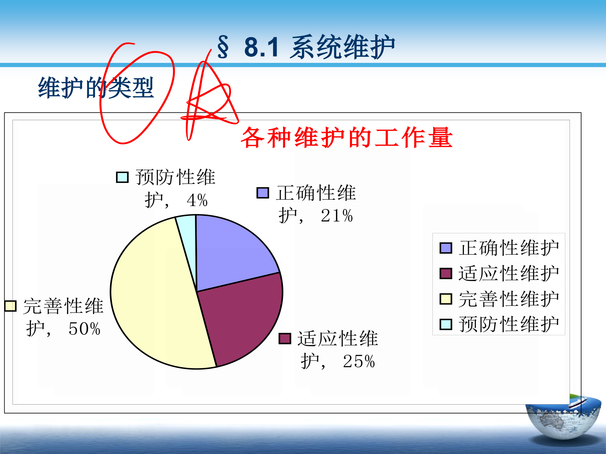
图8-1 各种维护类型的工作量占比（完善性维护50%、适应性维护25%、正确性维护21%、预防性维护4%）
8.2 系统评价
一、系统评价的含义
【考点】系统评价是指在系统投入运行一段时间后，对系统的各个方面进行的评估，同时写出系统评价报告。
二、评价的目的与依据
评价的目的：检查系统的目标、功能及各项指标是否达到了设计要求，满足程度如何？差距如何？检查系统中各种资源利用程度。也就是说，系统评价既要"回头看"——对照设计要求检查系统的实际完成情况，又要关注资源——考察系统中各种资源是否得到充分利用。
评价的依据：系统规划中规定的新系统的各项指标，如性能指标、经济指标和管理指标等。即评价不是凭空进行的，而是对照系统规划阶段预先规定的指标逐项检查。
三、评价的内容
系统评价贯穿系统生命周期的各个阶段，其内容包括四个方面：
1. 规划与组织的过程评价：对系统规划和组织工作的过程进行评价；
2. 建设与实施阶段评价：对系统建设和实施阶段的工作进行评价；
3. 运行与支持阶段的评价：对系统投入运行后的运行与支持工作进行评价；
4. 监控过程评价：对系统运行的监控过程进行评价。
四、评价的指标选取
评价指标选取分为两类指标体系：
1. 信息化基本指标的设计原则及体系：设计原则为目的性、简约性、可操作性、可延续性；
2. 信息化效能指标的设计原则及体系：设计原则为功能性、目的性、可操作性。
五、系统评价的方法
【考点】系统评价常用的方法有四种：
1. 层次分析法；
2. 模糊综合评价法；
3. 主成分分析法；
4. 数据包络分析法。
8.3 系统运行管理
一、系统运行管理的目标
系统运行管理的目标包括以下五个方面：
- 对信息系统的运行进行监督控制；
- 记录其运行状态，为分析、评价和改进系统积累资料；
- 保证系统正常运行；
- 向组织提供必需的信息，为决策提供信息支持；
- 为组织职能运行提供保障，实现组织的目标。
概括地说，系统运行管理的根本目的在于使信息系统在组织中持续、正常地发挥作用，既服务于日常业务运转，又服务于管理决策，最终服务于组织目标的实现。
二、信息系统运行管理的内容
信息系统运行管理的内容可分为三大部分：
1. 日常运行的数据管理：包括数据收集、信息处理、信息服务，即围绕数据展开的"收集—处理—服务"日常业务；
2. 系统运行情况记录：包括工作量记录、工作效率记录、信息质量与维护情况记录、系统故障记录，通过这些记录可以掌握系统的运行状况，并为系统评价提供依据；
3. 人员、安全管理：对系统相关人员和系统安全进行的管理。
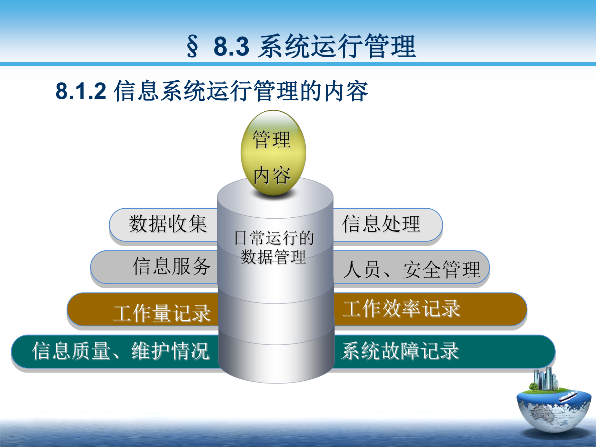
图8-2 信息系统运行管理的内容结构
三、系统运行管理的组织
系统运行管理的组织问题首先涉及信息部门在组织机构中的地位，即信息部门在企业组织结构中的设置层次与隶属关系，它决定了信息系统运行管理的权威性和协调能力。
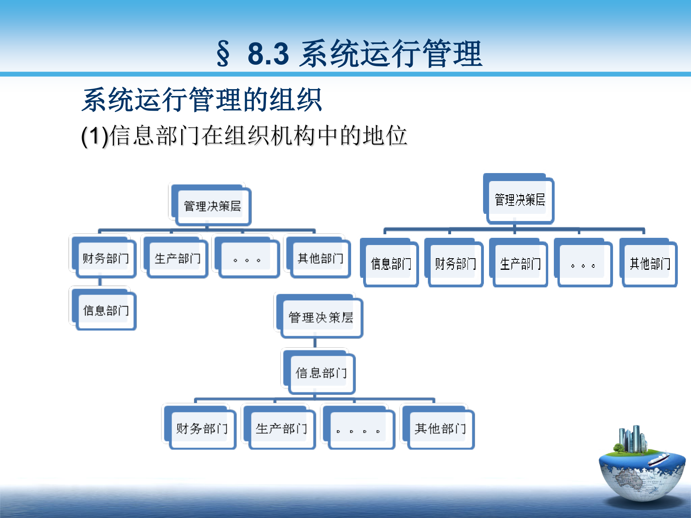
图8-3 信息部门在组织机构中的地位
四、系统运行管理制度
健全的规章制度是系统正常运行和安全管理的制度保障。系统运行管理制度包括五个方面：
- 系统操作员操作制度：规范系统操作员操作行为的制度；
- 子系统操作员操作制度：规范各子系统操作员操作行为的制度；
- 机房管理制度：对机房这一系统运行场所进行管理的制度；
- 文档管理制度：对系统各类文档资料进行管理的制度；
- 应用软件维护制度：规范应用软件维护工作的制度。
五、信息系统安全
（一）信息安全的目标
信息安全的目标包括以下六项：
- 机密性、完整性和可用性：这三项是信息安全最基本的目标——信息不被泄露给非授权者（机密性）、信息不被破坏和篡改（完整性）、授权用户在需要时能够正常使用信息和信息系统（可用性）；
- 可控性；
- 不可否认性；
- 可审计性；
- 可鉴别性。
（二）信息系统安全风险与安全控制
信息系统面临的安全风险主要有四类：
- 泄露和窃取：信息被泄露或被窃取；
- 非授权使用：未经授权使用信息系统；
- 未授权破坏：未经授权破坏系统；
- 未授权篡改：未经授权篡改系统数据。
针对上述风险，相应的信息系统安全控制手段包括四类：
- 人员控制：从人员管理角度实施的安全控制；
- 逻辑访问控制：从系统访问权限角度实施的安全控制；
- 设备控制：从硬件设备角度实施的安全控制；
- 业务连续性控制：保证业务在意外情况下能够连续运行的控制。
（三）信息系统安全管理的原则与措施
信息系统安全管理应遵循四条原则：
- 分权制衡原则；
- 最小特权原则；
- 失效保护原则；
- 职责分离原则。
信息系统安全管理的措施包括三个方面：
- 信息安全教育：提高相关人员的信息安全意识；
- 建立完善的管理体系：从组织和制度上保障信息安全；
- 及时备份重要数据：防止数据丢失造成不可挽回的损失。
（四）数据备份与冗余信息处理设施
1. 数据备份的方式：
- 定期磁带备份；
- 远程数据库备份；
- 网络数据镜像；
- 远程镜像磁盘。
2. 备份的类型：
- 完全备份；
- 增量备份；
- 差分备份。
3. 冗余信息处理设施：按恢复准备程度分为热站、温站、冷站（课件原文作"冷战"），即不同等级的备用信息处理场地与设施，用于在系统遭遇灾难时保证业务连续性。
第九章 旅行社管理信息系统
本章主要内容：第一节 旅行社管理信息系统概述；第二节 旅行社管理信息系统的信息流程；第三节 旅行社管理信息系统的总体设计；第四节 旅行社管理信息系统功能设计。
9.1 旅行社管理信息系统概述
本节内容包括：旅行社的基本业务、旅行社管理信息系统（Travel Service MIS，简称 TSMIS）的定义和特点、TSMIS 的功能要求、TSMIS 的结构。
一、TSMIS 的定义和特点
【考点】旅行社管理信息系统（TSMIS）的定义：旅行社管理信息系统是利用计算机技术和通讯技术，对旅行社经营的所有信息进行综合管理和控制的以人为主体的人机综合系统。
【考点】TSMIS 的特点：
- 信息量大、信息过时快：旅行社业务涉及旅游线路、交通、住宿、餐饮、价格等大量动态信息，更新速度快；
- 信息处理复杂，需要各部门的通力协作：组团、接团、计调、财务、综合业务等部门业务交叉，信息流在部门之间频繁传递；
- 较强的个性化处理能力：游客需求多样，系统必须支持个性化的产品设计和服务处理。
二、旅行社的基本业务
旅行社的业务流程是与旅游者的消费流程相对应的。二者的对应关系如下：
- 在旅游者旅游动机的形成阶段，旅行社主要通过市场调研及时了解旅游者旅游动机，并根据旅游者旅游动机有针对性地设计旅游产品；
- 在旅游者根据自己的旅游动机搜集相关的旅游信息时，旅行社会适时以多种方式进行旅游促销活动，尽可能为旅游者提供最新最全的旅游信息，并能使旅游者方便地获取；
- 旅游者经过大量信息的评价和判断后，会有选择地向相关旅行社进行咨询，此时旅行社可通过网络、人员等多种渠道向旅游者提供真实有效的优质咨询服务；
- 旅游者通过对其咨询结果的比较而做出最终的决策，向其满意的旅行社付费购买旅游产品，这就意味着旅行社的旅游产品的销售服务，这一服务环节是与旅行社的采购服务密切相连的；
- 旅游者实际旅游活动的开始也意味着旅行社接待服务的开始；
- 旅游者旅游活动结束后，旅行社则提供相应的售后服务，以解决旅游者各种可能的问题，并保持与旅游者的联系，为下一次旅行社业务的开展奠定良好的基础。
图9-1 旅游决策过程与旅行社的基本业务对应图
对应关系的两侧要点：
- 旅游者一侧：具备旅游动机、可自由支配收入和闲暇时间者；
- 旅行社一侧：受政府产业政策调控，在旅游权力范围内开展业务；
- 流程主线：搜集信息（市场调研与产品组织设计）→ 意向性咨询（价格与服务内容，咨询服务：人员、网络等）→ 购买（销售服务、采购）→ 旅游活动（接待服务）→ 旅游活动结束（售后服务）。
三、TSMIS 的功能要求
【考点】TSMIS 必须能够满足以下八项业务功能需求：
1. 组团功能；
2. 接团功能；
3. 导游职能；
4. 散客职能；
5. 交通职能；
6. 计调职能；
7. 财务职能；
8. 综合业务职能。
TSMIS 还必须包含内部管理的功能需求：
1. 办公室管理；
2. 人事管理；
3. 外联管理。
四、主要业务部门职能
- 组团中心：负责收集和反馈市场信息，组织开发旅游产品，制定和下发自联旅游团（者）接待计划，负责营业收入和营业成本的会计核算及自组团的资金回收；
- 接团中心：负责团队的地面接待工作，及时协调接待中出现的异常问题，负责营业收入的回收；
- 导游中心：根据客户要求合理配备导游员，做好接待工作，并及时处理旅游团（者）的投诉和接待过程中发生的重大事故；
- 散客中心：是与组团中心、接团中心并列的一个相对独立的部门，主要为海外游客提供以小包价为主、综合服务为辅的旅游服务部门；
- 交通部：负责协调企业与民航、铁路等部门的关系，及时准确地出票，及有关团队的行李运输；
- 计调部：负责确认接待团队计划，逐步落实计划中的票、房、餐、车等各项内容；
- 财务部：按照国家对企业财务管理的统一规定，负责本企业固定资产、流动资金、长期投资、无形资产的管理；负责编制、审核财务预算、决算和财务报表，准确完成企业的会计核算、经济活动分析等工作；
- 综合业务部：系统搜集和管理各种价格信息，负责价格的审批、检查、监督；准确做好企业各项数据统计工作，对旅游市场进行调研和分析。
五、旅行社的业务流程
旅行社的业务流程从方向上可以很清楚地分为内外两种，因此可以分内外两种信息流程图，分别绘制和描述。
图9-2 典型旅行社内部管理业务流程图
图9-3 旅行社对外业务流程图
9.2 TSMIS 的信息流程
本节按部门分别介绍五类信息流程：组团的信息流程、接待的信息流程、计调部的信息流程、综合业务部的信息流程、财务部的信息流程。
一、组团的信息流程
（一）组团报价的业务过程
1. 根据境外旅行社预报的中国境内旅游线路和旅游日期进行预算，将报价寄回境外旅行社；
2. 境外旅行社同意方案后，编制旅游计划，下发到旅游线路上的各个旅行社；
3. 将报价及团队人数报组团中心进行核算。
图9-4 组团报价数据流程图
（二）组团核算业务流程
1. 根据组团报价计算预提成本，并做收入和预提成本凭证，记入应收账款；
2. 对各地送达的团队费用结算单，根据计划进行审核，审核内容一般为旅游线路与计划是否相符、费用支出是否合理。审核结束后进行核算，记实际成本凭证送财务并记入应付账款；
3. 对财务部支付给各地旅行社的账款和回收海外的营业款制作凭证，冲减相对的应收或应付款项。
图9-5 组团核算业务数据流程图
二、接待的信息流程
接团核算业务的主要职能：
1. 审核各地接待部门接待团队时发生的费用单据，核算接待团队的收入情况，并与全国各组团社进行核算；
2. 根据接待中心各接待部门送达的接团单据与计划书进行审核；
3. 根据计划和费用单据做向上结算单，送达至各组团社，并以之做凭证送财务部记应收账款；
4. 根据财务部送来的银行汇款通知单，冲减应收账款；
5. 根据各种实际发生的费用单据作向下结算，送达财务部作为向景点、餐点付款的依据。
三、计调部的信息流程
接待部（计调）的主要业务：接收各组团社的计划书，指示各接待部门及旅行社的交通部门订机票和火车票，下达用车计划，负责订餐、订房等，这些计划一般是以各种报表的形式体现的。
四、综合业务部的信息流程
- 在旅行社经营管理中，与综合业务部有业务往来的部门比较多，而且该部门与本地区的景点、饭店等联系也比较多；
- 综合业务部通过统计与检查等方式，完成各旅行社的总体情况报表，并把这些报表提供给有关主管部门和领导。
五、财务部的信息流程
财务部是旅行社企业经营管理的核心部门，主要的业务是根据各业务部门送达的费用单和收入单做收入和支出现金或银行存款凭证；根据费用单或收入单做收支凭证；根据业务内容做转账凭证；根据凭证记账，分别记日记账和明细账及总账，月底根据总账及各科目发生额制作内部报表和外部报表。旅行社财务部的主要业务是账务处理与成本核算。
（一）账务处理流程
根据业务性质做收入凭证、支出凭证和转账凭证；根据凭证中有关条目记总账、明细账；如果是现金或银行存款凭证则记日记账，结算出当天余额；到月底根据总账及明细账目有关科目做资产负债表、损益表和其他财务报表。
（二）成本核算流程
旅行社的接待中心、散客部、交通部等业务部门将接待所发生的实际费用单经初步核算后送财务部；每月底财务部将发生的费用单据分宾馆盘点和业务部门汇总，再根据与旅游部门协商的价格计算所发生的费用，记入业务部门的成本和宾馆、景点、车队等部门的往来账户中。
9.3 旅行社管理信息系统的总体设计
一、系统设计的标准
【考点】系统设计的五项标准：
- 系统的效率；
- 系统工作的质量；
- 系统的可靠性；
- 系统的可扩充性；
- 信息资源的利用率。
二、子系统的划分
【考点】TSMIS 共划分为以下 16 个子系统：
1. 价格管理子系统；
2. 报价组团子系统；
3. 计划调度子系统；
4. 组接团核算子系统；
5. 地面接待子系统；
6. 票务管理子系统；
7. 账务和成本核算子系统；
8. 采购管理子系统；
9. 固定资产管理子系统；
10. 人力资源管理子系统；
11. 综合统计子系统；
12. 散客部综合管理子系统；
13. 中国公民境外游管理子系统；
14. 办公自动化子系统；
15. 总经理查询子系统；
16. 旅游产品管理子系统。
三、计算机网络设计
系统主要组成部分：
1. 内部网络服务器；
2. 工作站；
3. 集线器（HUB）；
4. Modem；
5. 网络操作系统。
图9-6 典型旅行社网络结构图
9.4 旅行社管理信息系统功能设计
本节逐一介绍各子系统的功能设计。
图9-7 旅行社管理信息系统主要功能结构图
一、价格管理子系统
价格是账务结算、成本核算的基础。旅游部门价格项目众多，为减少数据冗余，须建立集中、统一、准确的价格管理体系。
二、报价组团子系统
报价组团子系统主要应具备的功能：
1. 报价计划维护；
2. 模拟计算团队的各地成本及总成本；
3. 预算单团利润；
4. 完成对外正式报价；
5. 确认计划维护；
6. 跟踪团队收入变更，调整团队成本，并保留每次的修改数据，随时可进行利润核算；
7. 一旦发现利润不足，可重新调整团队成本，或对海外重新报价；
8. 打印、发送团队接待计划和价格协议书；
9. 审核团队收入、成本；
10. 单团利润核算及账务汇总、打印。
三、计划调度子系统
具体功能：
1. 计划管理；
2. 订票管理；
3. 订房管理；
4. 流量预报；
5. 订车管理；
6. 查询计划；
7. 初步统计。
四、组接团核算子系统
（一）组团核算子系统的具体功能
1. 计划报价管理；
2. 各结算单管理；
3. 汇总制作凭证；
4. 往来账管理；
5. 各种统计。
组团核算功能结构可细分为：项目输入（计划输入、组团报价输入、结算单输入）、汇总制单（团队汇总、凭证记账、制作凭证）、查询浏览（团队查询、凭证打印、旅行社查询）、统计输出（按团队统计、按海外旅行社统计、按部门统计）。
（二）接团核算子系统的具体功能
1. 计划管理；
2. 费用管理；
3. 制作向上结算单；
4. 制作成本表；
5. 汇总管理；
6. 往来账管理；
7. 查询统计。
接团核算功能结构可细分为：项目输入（计划输入、费用输入）、单团核算（向上结算单、收入成本表）、汇总核算（汇总核算单、凭证制单）、查询（地陪上团情况、成本收益情况、部门接团情况、向上结算单、单位接团表）、打印（汇总结算单、往来账查询、往来账打印）、记账。
五、地面接待子系统
本子系统具有下述功能：
1. 分团管理；
2. 计划维护；
3. 陪同管理；
4. 订票管理；
5. 行李管理；
6. 成本初审；
7. 团队查询；
8. 陪同查询；
9. 订票查询；
10. 订车查询；
11. 按团队统计；
12. 按部门统计；
13. 按陪同统计；
14. 按语种、国别统计。
六、票务管理子系统
该系统主要功能：
1. 订票信息维护；
2. 订票信息查询；
3. 订票信息打印；
4. 订票信息统计；
5. 交通费用核算；
6. 交通费用查询；
7. 交通费用打印。
七、账务和成本核算子系统
账务和成本核算子系统由账务管理和成本核算两部分构成。
1. 账务管理：（1）凭证管理；（2）科目管理；（3）年初数管理；（4）记账管理；（5）日记账输出、明细账输出；（6）余额表；（7）银行对账。
2. 成本核算：（1）单据输入；（2）单团核算；（3）向下结算；（4）记账管理；（5）费用分摊；（6）查询打印。
八、采购管理子系统
该系统主要功能：
1. 旅游服务产品的管理；
2. 旅游用品的采购管理；
3. 旅游用品的查询；
4. 采购报表的管理；
5. 采购计划管理。
九、固定资产管理子系统
该子系统的具体功能：
1. 固定资产维护；
2. 计提折旧；
3. 固定资产减少；
4. 对固定资产分类查询和打印；
5. 报表输出。
十、人力资源管理子系统
人力资源管理子系统可分为工资管理和人事档案管理两部分：
1. 工资管理：（1）人员变动；（2）工资输入；（3）汇总统计；（4）报表打印；（5）清零汇总。
2. 人事档案管理：（1）档案管理；（2）汇总资料；（3）培训记录；（4）查询浏览；（5）报表打印。
十一、办公自动化子系统
所谓办公自动化（Office Automation，OA），就是利用先进的计算机网络技术和信息技术，处理和控制日常的办公事务，使办公室事务和文件管理电子化，以提高事务的处理效率。
十二、综合统计子系统
该系统的具体功能：
1. 资料输入；
2. 汇总资料；
3. 查询处理；
4. 报表打印。
十三、散客部综合管理子系统
该子系统完成两个主要功能：对散客部定日游的管理和对零星委托业务的管理。
1. 定日游管理：（1）定日游报价；（2）饭店预订管理；（3）大车调度管理；（4）定日游付费类型管理。
2. 零星委托业务管理子系统主要功能：（1）计调、接待；（2）票务管理；（3）核算制单。
3. 其它功能：（1）统计报表功能；（2）查询打印功能；（3）现金管理功能；（4）查询浏览功能。
十四、中国公民境外游管理子系统
本系统应具有以下功能：
1. 计划管理；
2. 报价管理；
3. 往来账管理；
4. 应收款管理；
5. 应付款管理；
6. 账单管理；
7. 汇总打印。
十五、旅游产品管理子系统
旅游产品管理包括旅游产品的设计和组合、旅游产品的营销和销售等环节。
十六、经理查询子系统
该子系统的具体功能：
1. 报价组团；
2. 计划调度；
3. 人事档案；
4. 财务核算；
5. 统计报表；
6. 价格查询；
7. 报表处理；
8. 陪同接团查询；
9. 综合统计；
10. 经理信箱。
本章小结
- TSMIS 是以人为主体的人机综合系统，具有信息量大且过时快、信息处理复杂需部门协作、个性化处理能力强三大特点；
- 旅行社业务与旅游者消费流程一一对应：动机形成（市场调研与产品设计）→ 搜集信息（促销）→ 咨询（咨询服务）→ 购买（销售与采购）→ 旅游活动（接待）→ 结束（售后）；
- 功能上须满足组团、接团、导游、散客、交通、计调、财务、综合业务八项业务职能，外加办公室、人事、外联三项内部管理职能；
- 信息流程按组团、接待、计调、综合业务、财务五条主线展开，其中财务部以账务处理和成本核算为核心；
- 总体设计需考虑效率、质量、可靠性、可扩充性、信息资源利用率五项标准，系统划分为 16 个子系统，网络由服务器、工作站、HUB、Modem、网络操作系统构成；
- 各子系统功能设计覆盖了旅行社从价格、报价、计调、核算、接待、票务到人事、办公、统计、经理查询的全部经营管理环节。
第十章 旅游地管理信息系统
本章主要内容：第一节 旅游地与旅游地管理信息系统；第二节 地理信息系统在旅游地管理中的应用；第三节 旅游地理信息系统的设计与建立；第四节 虚拟现实技术在旅游地规划中的应用。
10.1 旅游地与旅游地管理信息系统
本节内容包括：旅游地、旅游地的含义、旅游地类型划分、旅游地管理信息系统。
一、旅游地的含义
【考点】通常把一定地理空间范围内的旅游资源同旅游专用设施、旅游基础设施以及相关的其它条件有机组合起来，称为旅游者停留和活动的目的地，即旅游地（旅游目的地）。
它包含 4 层含义：
1. 旅游地是一个地域综合体；
2. 旅游地以旅游点为其基本单位；
3. 旅游地的旅游条件较为完备；
4. 旅游业在旅游地的经济产业结构中占有重要地位。
二、旅游地类型划分的意义
1. 有助于满足不同旅游者的需求；
2. 有助于确定旅游点的建设方向和建设重点；
3. 有助于开展旅游区划和制定区域旅游发展总体规划；
4. 有助于确定旅游地的性质、发展方向和经营特点。
三、旅游地的类型
（一）观光游览旅游地
1. 自然景观观光旅游地：山岳型、江河型、湖泊型、海滨型、自然保护区型；
2. 历史古迹观光旅游地：古人类遗址型、古陵墓群型、古寺庙型、古石窟石刻型、古建筑工程型、古皇宫园林型、古迹遗址型；
3. 现代建筑工程观光旅游地：现代水利工程型、现代化大型工厂型、现代桥梁工程型、现代都市建筑工程型。
（二）度假休闲旅游地
1. 度假型旅游地；
2. 娱乐型旅游地；
3. 休疗型旅游地（温泉疗养地、避暑避寒地）。
（三）科考文化旅游地
1. 科学考察旅游地；
2. 文化旅游地；
3. 博物场馆旅游地；
4. 宗教文化旅游地；
5. 会议旅游地；
6. 民族风情旅游地。
（四）生态探险旅游地
1. 生态旅游地；
2. 体育健身旅游地（滑雪型旅游地、武术型旅游地、登山型旅游地、水上运动型旅游地、狩猎型旅游地）；
3. 探险猎奇旅游地（冰峰雪岭型旅游地、沙漠型旅游地、溶洞型旅游地、江河型旅游地）。
（五）综合旅游地四、旅游地的等级
- 一级：列入《世界遗产名录》的文化和自然遗产地；
- 二级：经开发利用的国家重点风景名胜区、全国重点文物保护单位、国家森林公园、国家历史文化名城、国家自然保护区、国家级度假区；
- 三级：已开发利用的省市级重点风景名胜区、文物保护单位、森林公园、自然保护区、度假区；
- 四级：已开发利用的地区级重点风景名胜区、文物保护单位、森林公园、自然保护区、度假区。
五、旅游地管理信息系统
【考点】旅游地管理信息系统通常包括 4 个子系统：旅游地经营管理子系统、旅游地信息服务子系统、旅游地设施管理子系统、旅游地内务管理子系统。
图10-1 旅游地管理信息系统功能图（经营管理、信息服务、设施管理、内务管理四大子系统）
（一）旅游地经营管理子系统
功能：
1. 收费管理；
2. 领料管理；
3. 成本管理；
4. 查询管理；
5. 报表统计；
6. 运行维护；
7. 其它功能。
主要作用：
1. 提高管理工作效率；
2. 提高管理人员素质；
3. 改善旅游地的服务质量。
（二）旅游地信息服务子系统
功能：
1. 信息服务项目；
2. 本服务规程；
3. 交通查询；
4. 饭店查询；
5. 资源信息；
6. 社会信息；
7. 营业公告。
（三）旅游地设施管理子系统
功能：
1. 设施登记；
2. 设施查询；
3. 报废管理；
4. 固定折旧；
5. 统计报表；
6. 系统维护。
（四）旅游地内务管理子系统
功能：
1. 人事管理；
2. 工资管理；
3. 仓库管理；
4. 财务管理；
5. 客户管理；
6. 经营查询；
7. 系统维护。
10.2 地理信息系统在旅游地管理中的应用
一、GIS 简介
（一）GIS 的概念
【考点】地理信息系统（GIS）是随着地理科学、计算机技术、遥感技术和信息科学的发展而发展起来的，用于采集、模拟、处理、检索、分析和表达地理空间数据的计算机信息系统。
一个典型的地理信息系统应包括三个基本部分：
1. 计算机系统（硬件、软件）；
2. 地理数据库系统；
3. 应用人员与组织机构。
（二）GIS 的主要特征
- 具有采集、管理、分析和输出多种地理信息的能力，具有空间性和动态性；
- 由计算机系统支持进行空间地理数据管理，并由计算机程序模拟常规的或专门的地理分析方法，作用于空间数据，产生有用信息，完成人类难于完成的任务；
- 计算机系统的支持是地理信息系统的重要特征，因而使得地理信息系统能快速、准确、综合地对复杂的地理系统进行空间定位和过程动态分析。
（三）GIS 的主要功能
【考点】GIS 的六项主要功能：
1. 数据的采集、监测与编辑；
2. 数据处理（数据格式化、转换、概化）；
3. 数据存储与组织；
4. 查询、检索、统计、计算功能；
5. 空间分析（GIS 的核心功能，是 GIS 与其它信息系统的根本区别）；
6. 图形与交互显示。
图10-2 GIS的主要功能示意图（采集、存储、查询、分析、显示、输出）
GIS 各功能环节的具体表现：
功能环节 | 主要内容 |
数据采集 | 纸质地图（Paper maps）、数字数据（Digital data）、GPS、坐标数据（Coordinates）等进入 GIS |
数据存储 | 矢量格式：实体的表示是不连续的（用 X,Y 坐标表示点、线、面）；栅格格式：使用方格（行 Rows×列 Columns）来模拟实体 |
查询 | 查找一个指定的要素；基于条件查找要素（如"人口数大于 300,000"） |
分析 | 相邻分析（如"哪些地块在道路 50 英尺范围内"）、叠加分析（如井类型、建筑所有者、土壤类型等图层叠加）、网络分析 |
输出 | 文档、图像、Internet、纸图 |
显示 | 地图、图表、文本 |
二、GIS 在旅游地管理中的应用
【考点】GIS 在旅游地管理中的五大应用：
1. 旅游地图编制：利用 GIS 强大的制图功能绘制旅游资源分布图、旅游规划图等；
2. 旅游地资源管理：建立旅游资源信息数据库，对资源类型、数量、分布等进行集成管理；
3. 旅游地规划：对地形、地貌、植被等进行分析，评估旅游资源潜力和可持续发展能力；
4. 旅游地环境监测与保护：整合分析环境数据，为环境保护措施的制定提供依据；
5. 旅游地管理决策支持：对客流量、游客行为等进行分析，为管理决策提供数据支持。
10.3 旅游地理信息系统的设计与建立
本节内容包括：旅游地理信息系统需求分析、基本结构、系统设计、系统实施、系统应用。
一、旅游地理信息系统需求分析
【考点】四方面的需求：
- 信息管理；
- 辅助办公；
- 辅助决策；
- 信息发布。
二、旅游地理信息系统的基本结构
【考点】旅游地理信息系统是一个多功能、多模块集成的管理系统，它由 6 个层面和 5 个功能模块组成：
- 6 个层面：人机交互层、系统功能层、数据管理层、系统支持层、系统驱动层、硬件驱动层；
- 5 个功能模块：数据采集与更新、查询与检索、信息时空分析与可视化、信息共享与输出、系统说明与帮助。
图10-3 旅游地理信息系统基本结构图（6个层面与5个功能模块）
三、旅游地理信息系统设计
（一）系统设计思想和原则
- TGIS 的处理与分析系统应遵循软件工程学原理，采取模块化的方法来进行设计；
- 系统的设计目标之一是能处理和分析大量数据，在数据结构定义、算法、以及系统软硬件平台选择上要给予充分考虑；
- 必须支持栅格图、矢量图混合显示、综合处理、综合分析等功能；
- TGIS 具有统一坐标和图层思想；
- 系统支持选区操作、裁剪区操作和局部操作；
- 系统要能够支持多类多文档子窗口，包括图像、图形、文本和表格。
（二）系统开发设计平台
- 硬件平台；
- 软件平台。
（三）系统功能设计
1. 输入输出功能；
2. 矢量操作功能；
3. 图像显示功能；
4. 空间分析功能；
5. 图像处理功能；
6. 统计分析功能；
7. 表格管理功能。
四、旅游地理信息系统实施
- 宏观数据采集；
- 微观数据采集；
- 系统设计。
五、旅游地理信息系统应用
【考点】旅游地理信息系统的七项应用：
1. 数据采集与更新；
2. 数据查询与检索；
3. 旅游景点查询；
4. 典型地物的标注；
5. 旅游服务查询；
6. 设计个人或团体不同特色的旅游计划；
7. 旅游专家咨询。
10.4 虚拟现实技术在旅游地规划中的应用
一、虚拟现实技术
【考点】虚拟现实技术（Virtual Reality，VR）是近年来发展起来的一项先进技术，它采用计算机发展中的高科技手段构造出一个虚拟的世界，使参与者获得与现实世界一样的感觉。
虚拟现实技术的特点（3I）
【考点】VR 的三大特征（3I）：
- 沉浸（Immersion）特征：参与者全身心投入虚拟环境，产生身临其境的感觉；
- 交互（Interaction）特征：参与者可与虚拟环境中的对象进行交互操作；
- 构想（Imagination）特征：虚拟环境可激发参与者的创造性构想。
二、虚拟现实技术的应用
1. 虚拟旅游（如"北京市景区（点）虚拟旅游"）；
2. 展示及保护文化遗产（如北京中轴线官网、"寻境敦煌"虚拟漫游）；
3. 旅游规划。
三、虚拟现实技术用于旅游地规划的优势
【考点】VR 用于旅游地规划的六点优势：
- 能逼真动态地展现旅游地规划设计方案；
- 使旅游地规划设计方案修改容易，系统判断准确，具有较强的可操作性；
- 可激发创作灵感和构思，使规划方案更具新意；
- 具有显著的人机交互功能，可进行联网规划设计；
- 有利于旅游地规划设计的理论研究；
- 可促进虚拟旅游（数字旅游或电子旅游）的发展。
四、旅游地规划设计的虚拟现实技术结构及流程分析
【考点】一个旅游地规划设计的虚拟现实技术系统应包括 3 大组成部分：
（一）背景条件数据库
1. 各种旅游资源的品位、数量及其分布；
2. 各种自然条件特征及其空间分布；
3. 区位条件，包括交通区位、市场区位、地价区位和环境区位等；
4. 社会经济背景，包括人口、居民点、国民经济收入水平、社会治安情况等。
（二）目标条件数据库
1. 市场需求；
2. 投入产出要求；
3. 旅游产品定位、选择及优化组合要求；
4. 旅游线路组织安排要求；
5. 空间布局及艺术审美要求；
6. 形象设计要求；
7. 经营管理及营销策划要求；
8. 环境保护要求。
（三）虚拟现实技术处理系统
1. 硬件系统：跟踪系统、触觉系统、音频系统、图像生成和显示系统、高性能计算处理系统；
2. 软件系统：操作系统、数据库系统软件、GIS 软件、图像处理软件、系统开发软件等。
图10-4 旅游地规划设计的虚拟现实技术结构及流程示意图
本章小结
- 旅游地是旅游资源、旅游专用设施、旅游基础设施及相关条件有机组合的地域综合体，有四层含义，可划分为观光游览、度假休闲、科考文化、生态探险、综合五大类型，并按资源等级分为四级；
- 旅游地管理信息系统由经营管理、信息服务、设施管理、内务管理 4 个子系统构成，各自承担收费/成本/报表、信息查询/公告、设施登记/折旧、人事/财务/仓库等职能；
- GIS 是采集、模拟、处理、检索、分析和表达地理空间数据的计算机信息系统，由计算机系统、地理数据库系统、应用人员与组织机构三部分组成；空间分析是 GIS 的核心功能，是其与其它信息系统的根本区别；
- GIS 在旅游地管理中应用于旅游地图编制、资源管理、规划、环境监测与保护、管理决策支持五大领域；
- 旅游地理信息系统由 6 个层面和 5 个功能模块组成，设计时遵循软件工程学原理和模块化方法，实施包括宏观数据采集、微观数据采集与系统设计；
- 虚拟现实技术以沉浸（Immersion）、交互（Interaction）、构想（Imagination）3I 特征为核心，应用于虚拟旅游、文化遗产展示保护和旅游地规划，其规划系统由背景条件数据库、目标条件数据库和虚拟现实技术处理系统三大部分组成。
第十一章 饭店管理信息系统
本章主要内容：第一节 饭店管理信息系统概述；第二节 饭店宾客数据流程分析及其管理；第三节 饭店前台业务数据流程；第四节 饭店后台业务数据流程；第五节 饭店管理信息系统的总体规划；第六节 饭店管理信息系统的功能。
11.1 饭店管理信息系统概述
本节内容包括：饭店管理信息系统基本概念、饭店管理信息系统的结构、饭店管理信息系统的发展历程与趋势。
一、饭店管理信息系统基本概念
【考点】饭店管理信息系统（Hotel Management Information System，简称 HMIS）是 MIS 的一个分支。饭店管理信息系统是一个利用计算机技术和通信技术对饭店管理信息进行综合控制的、以人为主体的人机控制系统。
即：饭店管理信息系统 = 计算机技术 + 通信技术 + 饭店信息。
（一）饭店管理信息系统的特点
【考点】HMIS 的四大特点：
- HMIS 是一个现代饭店管理的辅助系统；
- HMIS 是一个开放式的系统；
- HMIS 是一个反馈系统；
- HMIS 是一个具有层次性的系统。
（二）饭店管理信息系统的作用
【考点】HMIS 的六大作用：
- 提高饭店经济效益；
- 提高服务质量；
- 提高管理效率；
- 优化饭店内部管理体系；
- 全面掌握营业情况，提高饭店决策水平；
- 提高管理人员的素质。
二、饭店管理信息系统的结构
饭店管理信息系统的结构有概念结构、功能结构、软件结构和硬件结构等。这里主要介绍硬件结构和软件结构。
（一）硬件结构
硬件结构指 HMIS 的物理结构，即 HMIS 硬件系统的拓扑结构，一般有三种类型：
1. 单机批处理式结构；
2. 联机集中式处理结构；
3. 分布式处理结构。
（二）软件结构
软件结构是指 HMIS 的软件功能结构。软件功能结构是根据管理层次和所需功能导出并划分的。
在饭店业务管理中，系统功能一般可分为前台和后台两大部分，此外还可包括前台系统和后台系统功能扩充的扩充系统，以及各种系统接口。
三、饭店管理信息系统的发展历程与趋势
信息系统在酒店业中的最早应用是在 20 世纪 70 年代初开始发展起来的，经过十几年的发展，到了 20 世纪 80 年代，国外酒店管理信息系统（如 HIS、ECCO、Lodgistix、FIDELIO、CLS 等）整个模式已基本定型，技术较成熟，功能也齐全，在全球得到了普遍的推广应用。
（一）国外的主流 HMIS
1. ECI（EECO）：ECI 系统是美国易可（ECI）电脑公司于 1969 年开发的酒店信息系统，这是酒店信息管理系统的鼻祖；
2. HIS：酒店业资讯系统有限公司（Hotel Information Systems，HIS）于 1977 年成立，总部位于美国洛杉矶；
3. Fidelio：Fidelio Software GmbH 于 1987 年 10 月在德国慕尼黑成立，是欧洲的主流品牌，也是进入国内的主流产品；
4. OPERA：OPERA 系统是美国 MICROS 公司在 MICROS-Fidelio 系统的基础上开发的基于 B/S 的新版本。OPERA 已经不仅仅是一个酒店管理软件，而是作为接待业企业的软件综合解决方案（OPERA Enterprise Solution）。
（二）国内的主流 HMIS
国内生产的主流 HMIS 应用公司化运作是从 1983 年开始的，但第一家公司 1983 年推出的 HMIS，由于竞争的原因，目前已不存在了。
（三）饭店管理信息系统的发展趋势
【考点】HMIS 的六大发展趋势：
- 单向软件向集成软件发展；
- 软件由管理型向决策型发展；
- 软件由传统结构型向基于 Web 型结构发展；
- 局域网向客户/服务器体系结构发展；
- 商品化软件与专用化软件并存；
- 与饭店自动化设备相结合。
11.2 饭店宾客业务分析及其管理
饭店是为宾客服务的开放型企业。从饭店与客人发生联系开始（如预订），经抵达接待、问询服务、提供宾客消费服务，到离店结账，构成了客人在饭店消费的全过程。饭店针对客人消费过程，必须建立一套面向客人的服务流程，达到完善对客服务、严格内部流程管理的目的。
【考点】从信息管理角度，饭店宾客业务流程主要经历以下四个阶段：
阶段 | 信息管理要点 |
预订阶段 | ①预订必须全面把握客人信息；②预订需要准确的客房信息 |
接待阶段 | ①房态信息；②客账信息 |
住店（消费）阶段 | 客账信息的传递和处理 |
结账离店阶段 | 结账信息的处理和传递 |
图11-1 饭店宾客信息流程简图（预订—接待—住店—结账与夜审、后台财务等环节）
11.3 饭店前台业务数据流程
本节包括：总台预订业务、总台接待业务、收银与结账业务、稽核业务、销售业务、客房管理业务、营业点业务的数据流程。
一、总台预订业务的数据流程
（一）散客预订的数据流程
散客预订流程的具体描述：
1. 获取客人基本信息和住房要求；
2. 获取客人时间安排信息；
3. 根据房间要求、时间及其它信息向客人确定房价；
4. 获取客人其他方面要求的信息；
5. 接收预订金；
6. 确认或根据客人要求修改前述预订信息；
7. 预分房间。
（二）团体预订的数据流程
团体预订流程的具体描述：
1. 获取团体基本信息和住房要求；
2. 获取团体时间安排信息；
3. 根据协议确定房价；
4. 获取团体其它方面要求的信息；
5. 确认或根据团体的要求修改前述预订信息；
6. 获取团体成员名单；
7. 预分房间。
（三）特殊情况的处理
- 通过计算机网络预订情况处理；
- 部分人或团体由于意外事故而取消或更改预订情况的处理；
- 接受 VIP 客人的订房情况处理；
- 取消预订或没有到达（No Show）情况的处理。
二、总台接待业务的数据流程
（一）接待零散客人的数据流程
接待零散客人的业务过程：
1. 确定客人是否预订；
2. 查阅订房资料；
3. 请客人填写登记表，如客人已经预订，只需签名确认；
4. 检查客人登记卡，核对证件；
5. 确认房价、房间、离店时间及付款方式；
6. 分配房间；
7. 收取住房押金；
8. 准备房间钥匙，通知开启房间电话；
9. 通知客房部准备房间；
10. 为客人开设住店期间消费账号；
11. 整理客人入住登记资料。
图11-2 接待零散客人1层数据流程图（获取预订信息→确定房价→分配房间→开设客人账户）
（二）接待团体的数据流程
接待团体的业务过程：
1. 询问团体的预订文件号；
2. 查阅核实团体订房资料；
3. 确认是否有更改房间的情况，若有则按饭店规定更改房间安排情况；
4. 分配房间，分发房间钥匙，通知开启房间电话；
5. 通知客房部准备房间；
6. 为团体开设住店期间消费账号；
7. 登记团体成员信息并为所有成员开设住店期间消费账号；
8. 整理客人入住登记资料。
（三）接待业务的特殊情况处理
- 接待 VIP 客人和商务楼层客人；
- 加床；
- 调换房间；
- 延期续住；
- 加入房间；
- 逾时未走房；
- 团体增加、减少房间；
- 订餐安排；
- 团体陪同房的安排；
- 报坏房。
三、收银与结账业务的数据流程
账务需处理的其他情况：
- 客人账目调整；
- 整理当日预计离店客人清单；
- 提前结账；
- 费用转账；
- 预付金的收取；
- 待结账；
- 催收账款。
四、稽核业务的数据流程（夜间稽核）
（一）工作目的
【考点】夜间稽核的三项目的：
1. 确保准确地将所有客人和团队的费用过入相应的账户中；
2. 核对饭店当天发生的各项费用及其单据；
3. 总结当天发生的各项营业收入和更新数据。
（二）夜间稽核的相关业务
- 过账：以账号为索引，将当天发生的各项费用，尤其是电话费，过入有关的账户中；
- 核对：核对当天入住客人的房价情况，将客人登记表的每一条同所分配的房间号码、房价、折扣批条、协议签字、优惠卡、加床价等一一对比，保证正确地计算房价；
- 统计报告：统计各营业点实现的营业收入、各收款员的营业收入、饭店各部门的营业收入、各种收款方式的营业收入等，并更新系统数据。
图11-3 夜间稽核数据流程图（过账→核对房价→核对现金收入→统计报表）
五、销售业务的数据流程
销售业务围绕协议展开：客人与饭店签订协议（P1，存入协议文件）→ 协议归档（P2）→ 需要时修改协议（P3）。
六、客房管理业务的数据流程
客房部文员进行房间状态维护，维护结果写入房态表。
七、营业点业务的数据流程
在饭店所有营业点中，属餐饮部门最为复杂。餐饮业务流程为：
1. 制定营业项目及单价；
2. 由客人点选服务项目，同时也确定了各项目的销售价格；
3. 记录客人的选择；
4. 通知产品或服务的制作部门；
5. 收取客人的消费款项。
图11-4 餐饮业务数据流程图（制订菜单→选菜→收银）
11.4 饭店后台业务数据流程
一、人力资源管理业务的数据流程
饭店人力资源管理部门职能有 5 个方面：
1. 人力资源的招聘、使用、管理、开发；
2. 饭店组织结构和人员编制的设定与人力资源成本的控制；
3. 制定饭店员工的薪金、劳动保护和福利保险制度并监督执行；
4. 负责对各级、各类员工的培训、考核、奖惩、任免、调配等工作；
5. 对劳动合同、档案资料实施有效的管理。
二、财务会计业务的数据流程
饭店主要财务会计的工作流程：
1. 根据饭店的业务开设账户体系和建立账簿；
2. 根据国家会计法、税法等政策法规和企业财务会计管理制度，审核各种原始凭证；
3. 将原始凭证分门归类，编制相应的记账凭证；
4. 根据记账凭证登记账簿；
5. 根据财务会计制度对饭店账务进行调整，以真实反映企业发生的经济业务情况；
6. 在年末、月末或其它需要的时候，编制会计报表。
图11-5 财务会计数据流程图（设立科目→审核原始凭证→编制记账凭证→登记账目→编制报表）
其它业务
- 固定资产核算；
- 财产清查；
- 成本控制与成本核算。
三、物资供应业务的数据流程
物资供应一般涉及采购部和仓库保管部，其业务一般过程为：
1. 由物资材料使用部门填写请购单；
2. 由采购部门根据经批准的请购单派人外出采购；
3. 物品验收入库；
4. 由仓库保管员根据物品特性提供不同保存环境；
5. 物品领用。
11.5 饭店管理信息系统的总体规划
一、TMIS 设计的目标
【考点】HMIS（饭店 TMIS）设计的八项目标：
- 有效地采集信息；
- 畅通的信息传递渠道；
- 正确地处理管理决策信息；
- 根据需要输出信息；
- 资源控制；
- 提高服务效率；
- 效益功能；
- 综合考虑技术先进性与系统可扩展性。
二、TMIS 技术边界的确定
计算机化的人机接口设计的原则：
1. 尽量保持一致性；
2. 对经常用到的系统功能尽可能设置简洁操作和表示法；
3. 提供信息反馈；
4. 段落性要分明；
5. 提供出错处理功能；
6. 让操作能很容易地返回；
7. 尽量减少短期记忆负担；
8. 应充分了解用户的计算机应用素质。
三、TMIS 的组织管理
- 统一规划、分步实施；
- 加强基础建设，增强员工的参与意识；
- 软件与硬件兼备，开发与选购并重；
- 最高管理者负责原则；
- 选好合作对象。
四、TMIS 的计算机设备管理
计算机及其相关设备的配置方式：
1. 集中式系统；
2. 分布式系统；
3. 客户/服务器模式。
通信网络与网络设备：建立企业内部网。
11.6 饭店管理信息系统的功能
一、总台子系统的功能
【考点】总台子系统的六大功能：
1. 散客预订；
2. 团体预订；
3. 散客接待；
4. 团体接待；
5. 客人账务处理；
6. 稽核。
二、前台其它子系统功能
（一）客房管理子系统
功能结构：客房管理主控模块 → 房态维护、费用记录、客人查询。
图11-6 客房管理功能结构图
（二）销售管理子系统
功能结构：销售管理主控模块 → 客户档案管理、销售协议管理、散客预订、团体预订、特殊预订。
（三）营业点收款子系统
功能结构：餐饮收款主控模块 → 账单管理、交接班管理、菜单管理、应收款管理、统计打印、收款结账、客户档案管理。
三、后台子系统功能
（一）人事培训管理子系统
功能结构：人事培训管理主控模块 → 人事档案管理、登记奖惩、登记考勤、计算工资、统计报表、登记履历、登记培训。
（二）物资供应管理子系统
功能结构：物资供应管理主控模块 → 请购单管理、出入库管理（物品出库、物品入库）、存货管理、统计报表、供应商管理、合同管理、应付款管理。
（三）财务会计子系统
功能结构：财务会计主控模块 → 科目管理、凭证管理、账务处理、查询账目、固定资产、计算报表、数据维护。
图11-7 财务会计功能结构图
（四）总经理查询子系统
功能结构：总经理查询主控模块 → 客人信息、公用信息、营业信息、员工信息、财务报表、库存。
图11-8 总经理查询功能结构图
四、系统维护功能
（一）系统代码设计
- 账号设计；
- 房间号码设计；
- 费用代码设计；
- 客源市场代码设计；
- 会计科目代码设计；
- 物品材料代码设计。
（二）系统权限设计
按岗位与职责划分系统操作权限，保证数据安全与职责分离。
（三）系统维护功能设计
功能结构：系统维护主控模块 → 权限管理、系统代码管理、系统初始化、数据后备、数据恢复。
五、客人信息服务系统设计
- 大堂多媒体查询系统；
- 基于 WWW 浏览的客人信息服务系统。
六、信息识别技术在 HMIS 中的应用
- 磁卡及其应用；
- IC 卡及其应用。
11.7 【期末大题】宾馆（饭店）管理信息系统的提升空间
【考点】期末思考题（简答论述题）：宾馆管理信息系统的提升空间？ 课堂提示的答题要点：
- 客户角度：AI 技术的运用（如声控技术）自动调节温度；
- 数据加密，不透露住客的信息；
- 智能预警、数据监控；
- 酒店、客房的信息虚拟三维展示，提供更加全面的信息。
参考完整答题框架（宾馆管理信息系统作为提升酒店运营效率和客户体验的关键工具，其提升空间是多方面的，特别是在当前数字化、智能化快速发展的背景下，结合 AI 技术、数据安全、智能预警以及虚拟现实等前沿趋势）：
一、AI 技术的深度整合与应用
- 声控技术与个性化服务：通过集成先进的语音识别和自然语言处理技术，客人可通过简单的语音指令控制房间内的设备（如灯光、空调、窗帘等），甚至预订餐厅、查询天气等，实现更加便捷、个性化的入住体验；
- 智能推荐系统：利用 AI 算法分析客人的历史消费行为和偏好，为他们推荐适合的房型、餐饮选项、周边景点等，增加附加价值，提升客户满意度；
- 自动化客户服务：利用聊天机器人处理常见咨询和问题，减少人工客服压力，同时提供 24/7 不间断服务，快速响应客户需求。
二、数据安全与隐私保护
- 高级数据加密技术：采用最新的加密标准，确保住客信息在传输和存储过程中的安全性，防止数据泄露；
- 访问控制与审计：实施严格的权限管理，仅允许授权人员访问敏感数据，并记录所有数据访问行为，以便追踪和审计；
- 隐私合规性管理：遵循 GDPR、CCPA 等国际数据保护法规，确保数据处理流程的合法合规，增强客户信任。
三、智能预警与数据分析
- 预测性维护：利用大数据分析预测设备故障，提前安排维修，减少客房不可用时间，提高运营效率；
- 需求预测与库存管理：通过分析历史数据和季节性趋势，预测客房需求，优化房间定价策略和库存分配，提升收益管理；
- 安全监控与紧急响应：结合物联网传感器和 AI 视频分析技术，实时监测酒店安全状况，快速响应突发事件，保障客人安全。
四、虚拟现实与增强现实技术
- 三维虚拟展示：利用 VR/AR 技术创建酒店和客房的三维虚拟模型，让客人在预订前就能身临其境地体验酒店环境，提高预订转化率；
- 互动导航与信息服务：在酒店内部部署 AR 导航，帮助客人快速找到房间、餐厅、会议室等位置，同时提供丰富的景点介绍、活动信息等，增强体验感。
五、环境友好与可持续发展
- 能源管理系统：集成智能能源监控和调节系统，根据客房使用情况自动调节能耗，实现节能减排。
六、无缝集成与生态系统构建
- 第三方服务集成：与旅游预订平台、交通服务、本地商家等建立合作，通过系统一键预订相关服务，打造全方位的旅行体验；
- 开放 API 与开发者平台：提供开放的 API 接口，鼓励开发者基于宾馆管理信息系统开发更多创新应用，丰富系统功能，满足多样化需求。
综上所述，宾馆管理信息系统的提升空间涵盖了 AI 技术的深度应用、数据安全强化、智能预警机制的建立、虚拟现实技术的融合、环境友好策略的实施以及生态系统的构建等多个方面。这些提升不仅将极大地提高酒店的运营效率和服务质量，还能为顾客带来更加智能化、个性化的入住体验，推动酒店行业向更高层次发展。
本章小结
- HMIS = 计算机技术 + 通信技术 + 饭店信息，是以人为主体的人机控制系统，具有辅助性、开放性、反馈性、层次性四大特点；
- 硬件结构有单机批处理式、联机集中式、分布式三种类型；软件结构分为前台、后台两大部分，外加扩充系统与系统接口；
- 国外主流 HMIS 有 ECI（鼻祖，1969）、HIS（1977）、Fidelio（1987）、OPERA（基于 B/S 的综合解决方案）；发展趋势是集成化、决策化、Web 化、客户/服务器化、商品化与专用化并存、与自动化设备结合；
- 宾客业务流程经历预订、接待、住店（消费）、结账离店四个阶段，每阶段有不同的信息管理要点；
- 前台业务覆盖预订、接待、收银结账、夜间稽核、销售、客房管理、营业点（餐饮最复杂）；后台业务覆盖人力资源、财务会计、物资供应；
- 总体规划须明确设计目标、人机接口设计原则、组织管理原则和计算机设备配置方式；
- 系统功能上：总台子系统（散客/团体预订、散客/团体接待、客人账务处理、稽核）＋前台其它子系统（客房、销售、营业点收款）＋后台子系统（人事培训、物资供应、财务会计、总经理查询）＋系统维护功能（代码、权限、维护）＋客人信息服务系统（大堂多媒体查询、基于 WWW 的信息服务）＋信息识别技术（磁卡、IC 卡）；
- 期末重点：能从 AI、数据安全、智能预警、VR/AR、绿色节能、生态集成等维度论述宾馆管理信息系统的提升空间。
第十二章 旅游管理信息系统的安全管理
本章主要内容：第一节 信息系统安全概述；第二节 旅游管理信息系统安全设计；第三节 旅游管理信息系统运行管理；第四节 病毒防御方法。（注：本章在期末考试中占比不多，属非重点章节，重点掌握安全影响因素、安全设计层次与运行管理要点即可。）
12.1 信息系统安全概述
一、信息系统安全的概念
（一）信息处理系统的脆弱性
信息处理系统的脆弱性主要表现在：
1. 信息和财富高度集中在计算机系统中；
2. 社会化的计算机网络是一个开放的复杂系统，给怀有不良目的的使用者提供了机会；
3. 计算机技术还不十分成熟；
4. 基于计算机应用系统的法律体系不健全，难于对不正当的计算机信息交易活动实施依法监管。
（二）信息系统安全的含义
【考点】信息系统安全是一个系统的概念，它包括四个部分：
- 信息系统设备的安全；
- 软件的安全；
- 数据的安全；
- 运行的安全。
二、影响信息系统安全的因素
【考点】影响信息系统安全的五大因素：
- 恶意攻击：来自系统外部的故意攻击行为；
- 安全缺陷：系统在设计、配置和管理上存在的缺陷；
- 软件漏洞：操作系统、数据库及应用软件中存在的漏洞；
- 结构隐患：系统体系结构方面潜藏的安全隐患；
- 环境因素：机房温度、湿度、供电、电磁干扰等环境条件带来的威胁。
12.2 旅游管理信息系统安全设计
本节包括：网络安全设计、物理实体安全的设计、软件安全的设计、数据安全的设计。
一、网络安全设计
【考点】按网络层次，网络安全设计分为五层防护：
1. 物理层的安全防护；
2. 链路层安全保护；
3. 网络层安全保护；
4. 传输层安全防护；
5. 应用层安全防护。
网络的安全防范建议
- 系统尽量与公网隔离，要有相应安全连接措施；
- 不同工作范围网络既要采用防火墙、安全路由器、保密网关等相互隔离，又要在政策遵循时保证互通；
- 各环节配置可单独评价的加密；
- 远程访问要有严格鉴别和访问控制；
- 网络和网络安全设备要经受安全测试；
- 信息传递要有抗侦听、抗截获能力；
- 涉及保密信息传递，在保密装置外不以明文形式出现。
二、物理实体安全的设计
- 合理规划中心机房与各科室、车间机房的位置；
- 对出入机房进行控制；
- 机房应进行一定内部装修；
- 选择合适的其他设备和辅助材料；
- 安装空调系统；
- 防火、防水、防磁、防静电、防电磁波干扰和泄漏；
- 电源保障；
- 无污染。
三、软件安全的设计
- 选择、安装和运行安全可靠的操作系统和数据库管理系统；
- 设计开发或选择安全可靠的应用程序；
- 尽量选择使用现有的安全可靠的软件。
四、数据安全的设计
【考点】数据安全设计的三大手段：
- 数据加密；
- 数据存取控制；
- 数据备份。
12.3 旅游管理信息系统运行管理
本节包括：旅游企业信息系统管理机构的设立、旅游企业信息资源管理、旅游企业应用计算机化管理信息系统的人员培训、旅游企业计算机化管理信息系统的维护。
一、旅游企业信息系统管理机构的设立
计算机化的管理信息系统是企业经营管理体系的重要组成部分，而且正逐渐发挥更大的作用，只有建立正式的信息系统管理机构，指定明确的工作职责，并配备相应的资源，才能保证信息系统的正常运转和发挥作用。管理机构的设置主要有两种方式。
（一）第一种方式：财务部下设电脑房
在财务部内下设具有相对独立职能的电脑房，主管企业计算机管理信息系统的运行和维护工作。
- 设置依据：计算机管理信息系统解决的主要问题是协助企业营业部门正确、及时地处理营业款项的计算和收付，信息系统的其它功能仅仅是收付款系统的辅助功能。
- 优点：信息系统管理机构相对简单，运行成本较低，易于协调信息系统和企业财务部门的关系，这种关系对于保证企业营业收入的实现是十分重要的。
- 缺点：忽视了信息系统在企业内应用的潜力，不利于从企业长期发展的战略角度管理信息系统，可能会限制信息系统应该发挥的作用，同时不利于协调信息系统管理机构同其它业务部门的关系。
- 适用：旅游饭店和餐饮企业大多采用这种组织形式。
（二）第二种方式：独立的信息中心
设置同其它部门平行的、业务相对独立的信息中心，主管全企业的信息系统规划、运行维护和与其它部门的合作。
- 依据：计算机化的管理信息系统涉及到企业经营管理的各个方面和各个过程，同时又同各业务部门的工作密切相关，必须采取统一规划、统一管理的方式。
- 优点：信息系统管理机构同其它部门处于平级的地位，并不附属于哪一个业务部门，信息系统管理的职能更加明确，便于协调各部门的工作和从整体、长远的角度规划和管理企业的信息网络系统；在 Internet 技术飞速发展的今天，便于企业信息资源的共享和保护。
- 缺点：必须配备足够的人力资源，运行成本较高。
- 适用：旅行社企业大多采用这种方式。
两种方式对比：
对比维度 | 方式一：财务部下设电脑房 | 方式二：独立信息中心 |
设置依据 | 信息系统主要服务于营业款项的计算和收付，其它功能是辅助 | 信息系统涉及企业经营管理各方面，须统一规划、统一管理 |
优点 | 机构简单、运行成本低、易于协调与财务部门的关系 | 职能明确、与其他部门平级、便于整体长远规划和信息资源共享保护 |
缺点 | 忽视信息系统应用潜力、不利于战略层面管理、难协调与其他业务部门关系 | 须配备足够人力资源、运行成本较高 |
适用企业 | 旅游饭店和餐饮企业 | 旅行社企业 |
（三）信息系统管理机构的职能
企业信息系统管理机构的基本职能是对企业的信息资源实施有效地管理、保证信息资源得到充分地利用。具体职能：
1. 从战略和长远发展的角度全面地规划企业的计算机管理信息系统；
2. 制定出与企业基本业务过程和技术水平相适应的信息系统管理制度；
3. 负责对企业内各级、各类员工的培训；
4. 负责维护系统的设备、软件和数据。
（四）信息系统管理机构与企业内其它机构的关系
对企业内的所有部门来说，它既是信息系统的信息提供者，也是信息的使用者；是信息系统的输入者，也提供各种信息输出的功能。
二、旅游企业信息资源管理
（一）信息资源的获取
对信息资源的管理，首先要在制度上保证进入系统的各种业务数据是正确的、及时的。
（二）信息资源的应用
- 首先要求企业高层管理人员在经营管理中高度重视信息资源及其管理工作；
- 要在制度中列出相应条款，规定和鼓励各级员工利用计算机化的信息提交各种报告、总结等；
- 要不断地对企业所有员工进行计算机技术培训和教育，打消人们对信息技术不正常的抵触心态，帮助员工建立正确的信息价值观念。
三、旅游企业应用计算机化管理信息系统的人员培训
（一）对旅游企业管理人员的培训
- 对信息价值的正确认识；
- 建立信息系统的整体概念；
- 建立网络化思维的概念；
- 正确认识管理者在信息系统中的作用。
（二）对旅游企业信息系统技术人员的培训内容
- 最新的信息技术及其发展趋势；
- 企业基本业务知识；
- 编程技术；
- 网络管理技术和设备检修技术；
- 信息系统的管理知识。
（三）对旅游企业信息系统操作人员的培训内容
- 计算机应用的基本知识；
- 本企业信息系统应用软件整体功能；
- 计算机系统的操作规程。
四、旅游企业计算机化管理信息系统的维护
【考点】系统维护主要包括应用程序及文档的维护、数据的维护和设备维护三个方面。
（一）应用程序及文档维护
1. 根据程序运行中的问题记录或业务部门提出的修改要求提出维护要求；
2. 制定维修计划；
3. 软件维护实施；
4. 记录软件变动情况。
（二）数据的维护
- 一是由信息系统管理技术人员正确地指导操作人员的工作，保证进入系统的数据是正确性、有效性、符合程序处理要求的；
- 二是及时、正确地后备数据和正确地保管后备数据，保证在系统出现故障时能够在最短的时间内将系统数据恢复到最新的状态。
（三）设备的维护
- 正确操作设备；
- 定期检查和故障修复；
- 设备更新。
12.4 病毒防御方法
一、计算机病毒的种类
【考点】计算机病毒按类型分为三类：
病毒类型 | 寄生/作用方式 | 特点 |
操作系统型病毒 | 发作时用自己的逻辑代替部分操作系统 | 编写非常困难，一旦得手就有能力控制整个系统；例如一些病毒把自身的逻辑隐藏在那些标识"坏"的磁盘扇区中 |
文件型病毒 | 通常寄生在可执行文件（如 *.COM、*.EXE 等）中，当这些文件被执行时，病毒程序就跟着被执行 | 依传染方式不同又分非常驻型和常驻型两种 |
源码病毒 | 入侵程序，在程序被编译之前插入到诸如用 PASCAL 编写的源程序中 | 最少见的病毒程序，编写困难，被破坏的主程序数目有限 |
其中文件型病毒的两类：
- 非常驻型病毒（Non-memory Resident Virus）：将自己寄生在 *.COM、*.EXE 或是 *.SYS 的文件中，当这些中毒的程序被执行时，就会尝试去传染给另一个或多个文件；
- 常驻型病毒（Memory Resident Virus）：躲在内存中，其行为就好像是寄生在各类的低阶功能一般（如 Interrupts），由于这个原因，常驻型病毒往往对磁盘造成更大的伤害。一旦常驻型病毒进入了内存中，只要执行文件被执行，它就对其进行感染的动作，其效果非常显着。将它赶出内存的唯一方式就是冷开机（完全关掉电源之后再开机）。
二、电脑病毒的特点
【考点】电脑病毒的五大特点：
- 传染性：传染是绝大多数计算机病毒的重要特性。病毒可以通过各种渠道从已被感染的电脑扩散到未被感染的电脑，病毒一旦进入电脑并得以执行，便会搜寻符合其传染条件的程序和存储介质，它通过修改别的程序，并将自己全部代码复制在外壳中，从而达到扩散的目的；
- 潜伏性：病毒在感染电脑后，一般不会马上发作，需要等一段时间，它可长期隐藏在电脑中，当满足其发作条件时才发挥其破坏作用；
- 触发性：电脑病毒并不是什么时候都发作，只有当外界条件满足病毒发作的条件时，病毒才开始破坏活动。例如，"愚人节"病毒的发作条件是愚人节，即每年的 4 月 1 日；
- 隐藏性：有些病毒是编程技巧极高的短小精悍的程序，一般只有几百个字节或 1~2KB，并巧妙地隐藏在正常程序或磁盘的隐蔽部位，若不经过代码分析，病毒程序与正常程序无法区分开来；
- 破坏性：凡是软件手段能触及到计算机资源的地方均可能受到计算机病毒的破坏。任何病毒只要侵入电脑，一旦发作，都会对系统及应用程序产生不同程度的破坏，轻者降低电脑性能，重者可导致系统崩溃、破坏数据，造成无法挽回的损失。其表现：占用 CPU 时间和内存开销，从而造成进程堵塞；对数据或文件进行破坏；打乱屏幕的显示等。
三、电脑病毒的破坏方式
- 破坏磁盘的文件分配表 FAT，使用户在磁盘上的信息丢失；
- 引导系统的崩溃，造成死机或无法操作；
- 删除特定的可执行文件或数据文件，从而浪费大量的人力物力；
- 在磁盘上产生坏的扇区，减少磁盘空间；
- 对整个磁盘或磁盘上的特定磁道进行格式化；
- 修改或破坏磁盘上的数据；
- 更严重者，破坏计算机硬件。
四、计算机病毒的防御方法
【考点】计算机病毒的四大防御方法：
1. 加强法制教育；
2. 杜绝传播渠道；
3. 软件备份；
4. 安装防病毒卡、防病毒软件。
本章小结
- 信息系统安全是一个系统的概念，包括设备安全、软件安全、数据安全和运行安全四个部分；信息处理系统的脆弱性源于信息财富高度集中、网络开放复杂、技术不成熟、法律体系不健全四方面；
- 影响信息系统安全的因素有恶意攻击、安全缺陷、软件漏洞、结构隐患、环境因素五类；
- 安全设计分四个层面：网络安全设计（物理层、链路层、网络层、传输层、应用层五层防护）、物理实体安全设计、软件安全设计、数据安全设计（数据加密、数据存取控制、数据备份）；
- 运行管理包括管理机构设立（财务部下设电脑房 vs 独立信息中心两种方式，各有优缺点及适用企业类型）、信息资源管理（获取＋应用）、人员培训（管理人员、技术人员、操作人员三类对象）和系统维护（应用程序及文档、数据、设备三方面）；
- 计算机病毒分操作系统型、文件型（非常驻型/常驻型）、源码型三类；具有传染性、潜伏性、触发性、隐藏性、破坏性五大特点；防御方法为加强法制教育、杜绝传播渠道、软件备份、安装防病毒卡与防病毒软件。
第十三章 电子商务在旅游业中的应用
> 说明：本章课件文件名标注为"第十二章"，实际内容为第十三章 电子商务在旅游业中的应用。
本章主要内容：第一节 旅游电子商务的概念；第二节 电子商务在饭店业务中的应用；第三节 电子商务在旅行社业务中的应用。（本章在期末考试中占比不多，重点关注在线旅行社 OTA。）
13.1 旅游电子商务的概念
一、电子商务的概念
（一）各机构对电子商务的定义
- OECD 的定义（EC—Electronic Commerce）：电子商务是发生在开放网络上的包括企业之间、企业和消费者之间的商业交易；
- 全球信息基础设施委员会电子商务工作组：电子商务是运用电子通讯作为手段的经济活动，通过这种方式人们可以对带有经济价值的产品和服务进行宣传、购买和结算；
- 欧洲议会：电子商务是通过电子方式进行的商务活动；
- 加拿大电子商务协会：电子商务是通过数字通讯进行商品和服务的买卖以及资金的转移，它还包括公司间和公司内利用电子邮件、电子数据交换、文件传输、传真、电视会议、远程计算机联网所能实现的全部功能（如：市场营销、金融结算、销售以及商务谈判）；
- 美国《全球电子商务纲要》：电子商务是指通过 Internet 进行的各项商务活动，包括广告、交易、支付、服务等活动，全球电子商务将涉及世界各国。
（二）权威学者与企业的定义
- 美国学者瑞维·卡拉科塔和安德鲁·B·惠斯顿（《电子商务的前沿》）：广义地说，电子商务是一种现代商业方法。这种方法通过改进产品和服务质量、提高服务传递速度，满足政府组织、厂商和消费者的降低成本的需求；
- IBM 公司：电子商务 = Web + 企业业务；
- HP 公司：电子商务就是指在从售前服务到售后支持的各个环节实现电子化、自动化；
- Intel 公司：电子商务 = 电子化的市场 + 电子化的交易 + 电子化的服务；
- 国际商会（1997）：是指实现整个贸易过程各阶段的贸易活动的电子化。
（三）综合定义
【考点】电子商务的综合定义：企业利用网络信息技术和电子技术来从事的外部经营和营销活动以及与这些活动相关的外部环境。
- 外部在线商务活动主要包括：采购、销售、商贸磋商、价格比较、经营决策、营销策略、推销促销、公关宣传、售前/售后服务、客户关系、咨询服务等；
- 外部环境：安全认证、清算结算、物流配送、信用体系、技术标准、支付体系等。
二、电子商务的分类
【考点】电子商务按交易主体分为六类：
- 消费者—企业间的电子商务（B2C）；
- 企业—企业的电子商务（B2B）；
- 消费者—消费者间的电子商务（C2C）；
- 企业内部的电子商务（BinB）；
- 政府—企业的电子商务（G2B）；
- 政府—消费者的电子商务（G2C）。
三、电子商务的功能、模式和应用特征
【考点】电子商务的八大功能：
1. 网上促销；
2. 咨询洽谈；
3. 网上订购；
4. 网上支付；
5. 电子帐户；
6. 传递服务；
7. 交易管理；
8. 意见征询。
四、旅游电子商务的概念
- WTO：通过增进信息交流改进商务活动，利用互联网科技改进或变革核心商务流程；对于旅游目的地管理机构和旅游企业而言，就是通过先进的信息技术手段改进内部（通过内部网）和对外（通过互联网）的连通性；
- 杨春宇：旅游电子商务是旅游企业基于 Internet 提供的互联网络技术，使用电脑计算技术、电子通信技术与企业购销网络系统联通而形成的一种新型的商业活动。其中包括网上传递与接收信息；网上订购、付款、客户服务等网上销售，网上售前推介与售后服务；以及利用因特网开展市场调查分析、财务核算及生产安排等多种商业活动内容。这是一种基于信息网络综合技术的信息流程与商业运作程序的结合形式。
【考点】旅游电子商务的定义：是指通过先进的网络信息技术手段实现旅游商务活动各环节的电子化，包括通过网络发布、交流旅游基本信息和旅游商务信息，以电子手段进行旅游宣传促销、开展旅游售前售后服务；通过网络查询、预订旅游产品并进行支付；也包括旅游企业内部流程的电子化及管理信息系统的应用等。
定义的说明
- 从技术基础角度来看，旅游电子商务是采用数字化电子方式进行旅游信息数据交换和开展旅游商务活动；
- 从应用类型和环境来看，旅游电子商务可分为三个层次：
1. 一是面向市场，以市场活动为中心；
2. 二是利用网络重组和整合旅游企业内部的经营管理活动，实现旅游企业内部电子商务；
3. 三是旅游经济活动能基于 Internet 开展还需要外部环境的支持。
五、旅游电子商务的特性
【考点】旅游电子商务的六大特性：
- 聚合性；
- 有形性（即使未踏入旅游目的地，借助虚拟现实技术与 3D 地图展示，也可使游客对其形成有形的概念）；
- 服务性；
- 便捷性；
- 优惠性；
- 个性化。
六、旅游电子商务市场
旅游电子商务市场依托上述定义、层次与特性展开，覆盖旅游目的地管理机构与各类旅游企业。
13.2 电子商务在饭店业务中的应用
一、饭店电子商务给传统饭店经营管理带来的变化
【考点】三大变化：
1. 增加饭店的经营产品（如"积分"兑换服务等新的服务类型）；
2. 拓宽饭店的销售市场；
3. 改善饭店的采购管理。
二、传统酒店预订的流程
1. 通讯联系；
2. 明确订房要求；
3. 接受或婉拒预订；
4. 确认预订；
5. 记录、储存订房资料；
6. 预订的变更、取消及客人抵店前的准备工作。
三、酒店网络预订的程序
1. 选择目标酒店；
2. 选择目标产品；
3. 明确客人资料；
4. 确认预订；
5. 预订的变更、取消与抵店前的准备工作。
四、酒店网络预订的优势
【考点】三大优势：
- 方便、快捷；
- 扩大预订消费群体；
- 使酒店产品有形化，增加预订群体对酒店产品的信任度。
五、酒店网络预订存在的问题
【考点】五大问题：
- 缩小了酒店预订的内容，服务项目单一；
- 网站重复建设，内容陈旧；
- 网站定位面过窄；
- 网站商业信用度低下；
- 酒店与网站联络脱节。
13.3 电子商务在旅行社业务中的应用
一、旅行社电子商务的功能
【考点】五大功能：
1. 信息查询：满足游客的即时需要；
2. 在线预订：游客可以随时随地预订服务；
3. 客户服务：通过网络可随时提供服务；
4. 桥联服务：旅行社提供链接，提供客户所需在线业务服务；
5. 定制服务：满足消费者的个性化、定制化服务。
二、在线旅行社（OTA）
【考点】OTA（Online Travel Agent）即在线旅行社，通过网络平台为旅游消费者提供订旅行机票、订住宿等在线服务，是互联网出现以来诞生的旅游新业态，也是旅游电子商务发展的先锋者。
OTA 是从 20 世纪 90 年代末开始发展起来的，经过 20 多年的发展，逐渐形成了我国最大的旅游电子商务市场，并带动了传统旅行社电子商务的发展。
人们接触旅游最早是从旅行社开始的，现在年轻人旅游最初接触已变为 OTA。从旅行社到 OTA，核心的内容没有什么变化，本质上都是出行旅游的准备，但入口已从原来的电话、门店发展到了通过网络的线上（Web、App 等），获取信息和获取服务的方式变了。
在线旅行社的特点
【考点】OTA 的四大特点：
1. 既是在线旅游平台，又是供应链平台；
2. OTA 本身没有旅游产品和资源，仅仅是旅游服务代理商；
3. OTA 平台丰富的旅游产品，可以满足客户的个性化需求；
4. OTA 平台服务功能丰富，引领旅游"新零售"。
在线旅行社电子商务的运营模式
旅游 OTA 已形成了一个庞大的产业群，市场竞争愈演愈烈，各大 OTA 平台通过对市场的调查分析，采用了不同的运营模式，以求在在线旅游市场中分一杯羹。
【考点】OTA 的三大运营模式：
运营模式 | 含义 | 盈利方式/特点 | 代表 |
垂直搜索引擎 | 平台不直接参与旅游产品与旅游消费者之间的交易，为旅游者快速提供所需要的信息；细分市场依据可以是产品类型（如旅游度假、酒店住宿），也可以按地域资源和消费偏好来细分市场；旅游者通过关键词短时间内在庞大的信息库搜索出自己想要的旅游信息，通过比价功能获取性价比最好的服务 | 通常依靠广告费和点击率获取收益 | "去哪儿"是国内最典型的垂直搜索服务商 |
用户生成内容（UGC，User Generated Content） | 指随着以个性化为主要特点的 Web2.0 概念而兴起的用户原创内容，都是用户的体验性信息 | 攻略引擎是针对旅游攻略、游记、点评的引擎算法，通过自动的语义分析和数据挖掘，系统识别出真实可靠、有价值的旅游信息，实现用户和旅游产品、服务之间的精准匹配 | 马蜂窝（基于旅游社交和旅游大数据的新型自由行决策与交易平台） |
渠道模式 | 即第三方交易平台，为在线旅游供应商、旅游批发商、在线旅行社等旅游经营企业提供一个网上交易平台，吸引在线旅游经营企业入驻，直接向线下旅游者提供旅游产品预订服务 | 交易平台撮合预订 | 携程旅行网 |
三、旅行社电子商务的优势
【考点】三大优势：
- 弱化了旅行社提供信息的职能；
- 弱化旅行社代理职能；
- 提供旅游增值服务。
四、旅行社电子商务对旅行社业务的影响
【考点】两大影响：
- 导致旅游中间商重新定位；
- 产生旅行社服务市场的分散化新格局：
1. 旅行服务本地化；
2. 交通业主自营化；
3. 出现大型销售商；
4. 买方需求和买方地域分散。
五、旅行社电子商务存在的问题
【考点】
- 旅游电子商务发展仍不完善：
1. 网络的可操作性差；
2. 用户分布不均；
3. 安全性和速率是网络发展的瓶颈；
4. 网络信誉无法保证。
- 旅游电子商务缺乏旅行社的人性化服务。
13.4 旅游 APP 对比分析（课堂调研作业）
常见旅游 APP/小程序类型举例：
- OTA 综合类：携程、去哪儿、飞猪、同程、艺龙、途牛；
- 地图类：高德地图、百度地图、腾讯地图；
- 攻略社区类：马蜂窝、穷游；
- 各类民宿 APP；
- 各种景区 APP（小程序）等。
【考点】调研作业要求：调研现有的旅游 APP/小程序，小组讨论进行分类，选择其中某一类型的代表性 APP/小程序（至少 3 个），从以下角度进行综合对比：
1. 定位对比；
2. 功能模块对比；
3. 用户界面设计对比；
4. 发展现状对比；
5. 本小组最看好此类型下的哪个 APP/小程序。
成果形式：①旅游 APP/小程序调研报告；②PPT 汇报。
参考案例：携程、马蜂窝、Tripadvisor（猫途鹰）三大 APP 对比
（以下内容引自学生小组调研《在线旅游平台功能对比及发展现状分析——以携程、马蜂窝、Tripadvisor 三大 APP 为例》，作为第三节 OTA 知识点的实例补充。）
（一）定位对比
对比维度 | 携程 | 马蜂窝 | 猫途鹰（Tripadvisor） |
应用定位 | 中国领先的在线旅行服务平台，提供酒店预订、机票、旅游度假、商旅管理等全方位旅行服务 | 中国领先的旅行玩乐社区和旅游服务平台，以"内容+交易"模式为特色，覆盖全球 6 万个旅游目的地 | 全球最大的旅游社区和旅行点评平台，提供超过 860 万个住宿、餐厅、景点等信息及超过 8.3 亿条点评，覆盖全球 49 个市场及 28 种语言 |
市场定位 | 综合性、高品质、全球化的在线旅游服务平台，针对中高端市场，同时拓展下沉市场和国际业务 | 结合社区属性和电商属性，以自由行为核心，服务热爱旅行和分享的年轻用户，做旅游消费决策入口 | 为全球用户提供旅游点评和决策支持，在中国市场专注服务自助出境游细分群体 |
用户群体 | 中等收入及以上的白领阶层；以 30-39 岁为主；男性占 62.1%、女性占 37.9%；多集中在北上广 | 一二线城市、学历收入较高的年轻用户；30-39 岁占比最多；男性占 59%、女性占 41%；多集中在北上广 | 自助出境游用户；以 20-29 岁和 30-39 岁为主；男性占 58.6%、女性占 42.4%；多集中在北上广 |
（二）功能模块对比
- 携程：功能模块分为"首页""社区""消息""行程""我的"五大类。"首页"有"酒店""机票"等共 21 项功能，涵盖住宿预订、旅游票务、旅游度假、购物租车、保险签证、线路规划等；"行程"模块可创建旅行线路并实时查看航班、火车信息；总体功能极为丰富全面，提供一站式旅游出行服务。特色功能：商旅管理与线路规划。
- 马蜂窝：功能模块分为"首页""攻略群""发布游记""商城""我的"五大模块。"首页""发现"板块有"找攻略""看游记"等共 16 项功能，最突出的是"旅游攻略"系列（找攻略、看游记、找搭子、亲子游、自驾游等）；"蜂蜜中心"可参与活动领取蜂蜜用于酒店预订等优惠。特色功能：旅游攻略与社区建设（UGC）。
- 猫途鹰：功能模块分为"首页""榜单""收藏""我的"四大模块，总体更为简洁。可按超值排序、位置距离、价格/级别、评分等多角度筛选酒店、景点、餐厅，并可参考"旅行者之选至尊奖"等榜单。特色功能：点评与体验推荐及预定。
常规功能与特色功能对比表：
功能类型 | 携程 | 马蜂窝 | 猫途鹰 |
常规功能 | 住宿预订、旅游票务、旅游度假、旅游攻略、社区建设、购物租车、签证保险 | 住宿预订、旅游度假、旅游票务、签证保险、购物拼车 | 住宿预订、旅游票务、餐饮推荐 |
特色功能 | 商旅管理、线路规划 | 旅游攻略、社区建设 | 点评、体验推荐与预定 |
（三）用户界面设计对比
UI 元素 | 猫途鹰 | 携程旅行 | 马蜂窝 |
状态栏 | 使用品牌色绿色 | 使用品牌色蓝色，增加 APP 名称图标 | 跟随背景白色 |
导航栏 | 突出字体和导航功能，弱化搜索框颜色 | 突出白色的搜索框，导航功能弱化 | 选择时字体颜色加粗，伴有黄色下划线 |
搜索栏 | 弱化搜索框颜色 | 突出白色搜索框 | 黄色描边，更显生动、不单调 |
内容区 | 扁平设计风格，图标圆角、较少、尺寸较大 | 渐变设计风格，图标多、配色超 5 种、风格多样 | 单色设计风格，圆角＋线性图标，风格活泼 |
菜单栏 | 四个主菜单图标，非常简洁 | 五个主菜单图标，内容丰富，选中变蓝 | 五个主菜单图标，尺寸较大、透明色，选中变黄 |
总体而言：猫途鹰简洁专业，贴合全球化目标；携程丰富多样，体现综合性与业务多样性；马蜂窝俏皮活泼、小清新风格，贴合轻松自由的攻略分享定位。
（四）发展现状对比
对比维度 | 携程 | 马蜂窝 | 猫途鹰 |
成立/发展 | 1999 年成立，2003 年纳斯达克上市，2014 年底成为中国最大旅游集团；2015-2016 年战略投资去哪儿、收购天巡（Skyscanner）开始全球扩张；2019 年更名 Trip.com Group | 2006 年成立，以 UGC 攻略游记社区起步；2010-2017 年整合数据内容、探索"内容+交易"商业闭环；2018 年更名"马蜂窝旅游网"，进军国民市场 | 2000 年成立；2015 年发布中文品牌"猫途鹰"发力中国出境游市场；2019 年与携程达成战略合作（成立合资公司、全球内容协议、入股） |
盈利模式 | 产品代理销售模式：酒店预订佣金（15%-25%）、机票代理费（0%-3%）、旅游度假产品利润、广告收入（占总收入 10% 以上）、会员收入 | 内容流量变现模式：依靠广告和电商业务，通过流量变现和业务分成盈利，内容引导用户预订获取佣金；商城为代理平台模式、无自营产品 | 广告业务合作模式：主要收入来自展示广告和点击付费广告（PPC），在中国 90% 以上收入来自广告；另有内容引流与流量变现 |
市场表现（2019 年中国市场） | 月活跃用户约 7471.51 万，市场占有率 43.35%，行业领先 | 月活跃用户约 993.1 万，市场占有率 5.76%，居第二梯队 | 月活跃用户约 110.31 万，市场占有率 0.64%，份额较小 |
用户评价（App Store，截至 2024-12） | 评价量 71.1 万，总体评分 4.9 分，满意度最高；高频词"方便""推荐""机票""抢票""客服" | 评价量 16.9 万，评分 4.7 分；高频词"以前""希望""信息""内容"，反映内容同质化问题 | 评价量 0.89 万，评分 4.6 分；高频词"国外""境外"，体现其国际旅游产品定位 |
发展趋势 | 全球化战略持续发力，海外用户超 1 亿，产品覆盖全球 200 多个国家和地区 | 深化内容生态，探索内容与交易的深度融合 | 经营国际旅游为主，借与携程合作弥补中国市场不足，但需寻找新增长点 |
（五）小组总体评价（示例结论）
- 多数成员最看好携程：起步早、功能齐全、用户规模大、市场占有率高，且通过交通票务、商旅管理等分支降低单一化经营风险，并积极全球化合作，发展潜力最大；
- 也有成员推荐马蜂窝：对喜欢查找旅游攻略辅助决策的用户而言，其攻略信息和社区氛围极具价值，用户生成内容（UGC）是其核心竞争力。
本章小结
- 电子商务定义众多（OECD、全球信息基础设施委员会、欧洲议会、加拿大电子商务协会、美国《全球电子商务纲要》、IBM/HP/Intel、国际商会等），综合定义为：企业利用网络信息技术和电子技术从事外部经营和营销活动及与这些活动相关的外部环境；
- 电子商务按主体分为 B2C、B2B、C2C、BinB、G2B、G2C 六类，具有网上促销、咨询洽谈、网上订购、网上支付、电子帐户、传递服务、交易管理、意见征询八大功能；
- 旅游电子商务是通过先进网络信息技术实现旅游商务活动各环节电子化的商务形态，具有聚合性、有形性、服务性、便捷性、优惠性、个性化六大特性；
- 电子商务在饭店业务中带来增加经营产品、拓宽销售市场、改善采购管理三大变化；网络预订方便快捷、扩大消费群体、使产品有形化，但也存在服务项目单一、网站重复建设、定位面窄、信用度低、酒店与网站脱节等问题；
- 旅行社电子商务具有信息查询、在线预订、客户服务、桥联服务、定制服务五大功能；OTA 是在线旅行社，是旅游电子商务发展的先锋，特点是在线旅游平台＋供应链平台、本身无产品资源仅是代理商、产品丰富满足个性化、引领旅游"新零售"；运营模式分垂直搜索引擎（去哪儿）、用户生成内容 UGC（马蜂窝）、渠道模式（携程）三类；
- 旅行社电子商务弱化了旅行社的信息职能和代理职能、提供旅游增值服务，导致旅游中间商重新定位并产生服务市场分散化新格局，但也存在发展不完善和缺乏人性化服务的问题。